Cours Système
D.Revuz


Résumé :
Cours de conception de systèmes et d'utilistion d'UNIX
Ce poly est a l'usage des etudiants de l'ESITCOM et du deuxième cycle
d'informatique de Marne la Vallée comme support du cours SYSTÈMES
d'EXPLOITATION.
Cette version 2, apportte de nombreuse correction de typo et autre, je remercie
D. Lecorfec Pour sa lecture attentive, et les remarques sur le fond seront
prises en compte dans la prochaine version.
Ce poly a une version HTML disponible sur le Web a l'adresse suivante :
http://www-igm.univ-mlv.fr/~dr/NCS/.
Ce document a de nombreux défauts en particulier sont manque d'homogénéité, et
le manque d'explications sur certaines parties (explication données en général
oralement en cours).
Au menu l'essentiel d'UNIX : SGF, processus, signaux, mémoire, mémoire
virtuelle, manipulation terminaux, tubes, IPC.
Quelques détours : micro-noyaux, sécurité.
Un chapitre important mais un peut court : les problèmes de programation
distribué. Peut être une petit incursion sur les pages de G. Roussel vous en
apprendrons plus, sur les threads,
les serveurs, JAVA etc .
http://massena.univ-mlv.fr/ roussel
Prérequis : pour la partie conceptuelle pas de prérequis.
pour la partie technique une compétance raisonable en C/C++ est nécessaire.
Évolutions futures : dr@univ-mlv.fr (j'attend vos remarques), uniformisation
de la présentation, nétoyage des points obscurs, corrections orthographiques,
complement sur fcntl, ioctl, plus d'exemples, des sujets de projets .
Chapitre 1 Bibliographie
J.-M. Rifflet. La programation sous UNIX. Ediscience, 1993. Le manuel de
référence.
A.Tanenbaum. Systèmes d'exploitation, sysytèmes centralisés, systèmes
distribués. Inter-Editions, 1994. Cours général sur les sytèmes d'exploitation.
M. Bach. The design of the UNIX operating system. 1986. Prentice-Hall, Englewood Cliffs,
N.J. ISBN 0-13-201757-1
J. Beauquier & B. Bérard Systèmes d'exploitation concepts et
algorithmes. 1991. McGraw-Hill. ISBN 2-7042-1221-X
W.R. Stevens, UNIX Network Programming. 1990 Prentice-Hall, Englewood Cliffs,
N.J.
W.R. Stevens, Advanced Programming in the UNIX Environnement
Addison-Wesley ISBN 0-201-56317-7
Chapitre 2 Introduction et Historique
2.1 Historique
2.1.1 les débuts (1945-55)
L'ENIACENIAC soit 20000 tubes à vide, fait 20 tonnes et occupe 160 m2.
Chaque Calculateur est unique et une équipe travaille à la fois à la fabrication, la programmation, la maintenance et l'utilisation.
Ce sont des machines sans mémoire, exécutant un seul programme à la fois. Le chargement des programmes et des données se fait au mieux avec des cartes ou des bandes perforées.
Durant cette période de nombreuses tâches sont automatisées, chargement, assemblage, édition de liens (avec des bibliothèques).
Plus tard sont développés les compilateurs permettant d'utiliser des langages de plus haut niveau.
2.1.2 Transistors et traitement par lots 1955-65
Invention de la mémoire ¾® Fabrication industrielle, commercialisation de machines.
Une séance-type de programmation :
-
écriture sur cartes [programmeur]
- chargement des cartes compilateur [opérateur]
- chargement des cartes du programme
- création du code intermédiaire (assemblage)
- chargement des cartes de l'assembleur
- création du code en langage machine
- exécution du programme
un problème : à chaque erreur réalisation d'un dump (listing de l'image mémoire) pour le programmeur, qui n'est pas sur place pour réaliser une correction à chaud (pas de périphériques interactifs trop coûteux).
Solutions :
-
le traitement par lots (batch proccessing)traitement par lots
pour regrouper et exécuter par groupes les travaux similaires
- le moniteur résidentmoniteur résident qui enchaîne automatiquement les travaux, un nouveau type de cartes est introduit, qui donne des instructions à réaliser par le moniteur, (charger, exécuter, etc.).
Ce moniteur résidant est l'ancêtre des systèmes d'exploitation, (la mémoire qui est apparue avec les transistors est découpée en deux zones : moniteur, utilisateur).
La différence de vitesse entre les E/S et l'unité centrale (UC) devient flagrante : les périphériques sont alors dotés de circuits autonomes leur permettant de faire certains traitements sans le secours de l'UC. Ces circuits sont parfois des ordinateurs plus petits (dont le coût du temps de calcul est plus faible).
2.1.3 VLSI et Multiprogrammation 1965-80
Circuits intégrés ¾® moindre coût de fabrication
¾® évolution rapide des modèles
¾® vente aux entreprises
IBM lance l'idée d'un système unique adapté à plusieurs machines : OS/360.
Arrivée des disques magnétiques. Apparait le principe de multiprogrammation, les entrées-sorties sur disque étant effectuées de façon asynchrone avec des calculs sur l'unité centrale (parallèlisation).
Multiprogrammation : plusieurs programmes sont en même temps en mémoire et sur le disque, si le programme en cours d'exécution demande une opération d'entrée-sortie alors un autre programme est exécuté pendant que se déroule l'opération.
2.1.4 UNIX
-
1969 Ken Thompson, Dennis Ritchie
- 1971 + Brian Kernighan
- 1973 C
- 1984 100000 cpu /UNIX
- 1993 UNIX est le système de référence
|
Avec de nombreux |
standards |
AES, SVID2, XPG2, XPG3, XPG4, POSIX.1 OSF |
|
et des innovations comme : |
|
|
les micro-noyaux, MACH, CHORUS, MASIX |
|
|
Des copies : Windows NT par exemple ... |
Le succès d'UNIX sans doute parce que :
-
Ecrit dans un langage de haut niveau : C (C++, Objective C) ;
- une interface simple et puissante : les shells,
qui fournissent des services de haut niveau ;
- Des primitives puissantes qui permettent de simplifier l'écriture des programmes ;
- Un système de fichier hiérarchique qui permet une maintenance simple
et une implémentation efficace ;
- Un format générique pour les fichiers, le flot d'octets
qui simplifie l'écriture des programmes ;
- Il fournit une interface simple aux périphériques ;
- Il est multi-utilisateurs et multi-tâches ;
- Il cache complètement l'architecture de la machine à l'utilisateur.
2.1.5 Des points forts
- Système né dans le monde de la recherche
intégration de concepts avancés
- Diffusion ouverte
accès aux sources
- Langage (de haut niveau )
compilation séparée, conditionnelle, paramétrage, précompilation
- Enrichissement constant
- Ouverture (paramétrabilité du poste de travail)
- Souplesse des entrées/sorties
uniformité
- Facilités de communication inter-systèmes
- Communautés d'utilisateurs (/etc/groups)
- Langages de commandes (flexibles et puissants)
- Aspect multi-utilisateurs
connections de tout type de terminal, bibliothèques, etc
- Parallélisme
multi-tâches : "scheduling" par tâche
communication entre tâches
multiprocesseurs
- Interface système/applications
appels système, bibliothèque
- le système de gestion de fichiers
hiérarchie
- Interfaces graphiques normées : X11.
2.1.6 Des points faibles
-
Sécurité (pire encore en réseau )
Amélioration avec les A.C.L.
- Fragilité du S.G.F.
pertes de fichiers possible en cas de crash
- Gestion et rattrapage des interruptions
pas de temps réel (Q.N.X.).
- Mécanisme de création de processus lourd
Amélioration avec les threads.
- Une édition de liens statique
Amélioration avec les librairies partagées.
- Rattrapage d'erreur du compilateur C standard peu aisé !
- Coût en ressources
- Gestion ¾® verrous sur fichiers
2.2 Structure générale des systèmes d'exploitation
Un système d'exploitation est un programme qui sert d'interface entre un utilisateur et un ordinateur.
Un système d'exploitation est un ensemble de procédures manuelles et automatiques qui permet à un groupe d'utilisateurs de partager efficacement un ordinateur.
Brinch Hansen.
Il est plus facile de définir un système d'exploitation par ce qu'il fait que par ce qu'il est.
J.L. Peterson.
Un système d'exploitation est un ensemble de procédures cohérentes qui a pour but de gérer la pénurie de ressources.
J-l. Stehlé P. Hochard.
Quelques systèmes :
-
le batch
- Le traitement par lot (disparus).
- interactifs
- Pour les utilisateurs (ce cher UNIX).
- temps réels
- Pour manipuler des situations physiques par des périphériques (OS9 un petit frère futé d'UNIX).
- distribués
- UNIX?, les micros noyaux? l'avenir?
- moniteurs transactionnels
- Ce sont des applications qui manipulent des objets à tâches multiples comme les comptes dans une banque, des réservations, etc
- SE orientés objets
- Micro Noyaux.
2.2.1 Les couches fonctionnelles
Figure 2.1 : Vue générale du système
Couches fonctionnelles :
-
Programmes utilisateurs
- Programmes d'application
éditeurs/tableurs/BD/CAO
- Programmes système
assembleurs/compilateurs/éditeurs de liens/chargeurs
- système d'exploitation
- langage machine
- microprogramme
- machines physiques
2.2.2 L'architecture du système
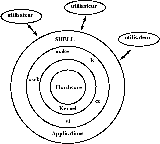
Figure 2.2 : Point de vue utilisateur
L'architecture globale d'UNIX est une architecture par couches
(coquilles) successsives comme le montre la figure
2.2. Les utilisateure communiquent avec la couche la
plus évoluée celle des applications. Le programmeur lui va
pouvoir en fonction de ces besoins utiliser des couches de plus en
plus profondes.
Chaque couche est construite pour pouvoir être
utilisée sans connaitre les couches inférieures (ni leur
fonctionnement, ni leur interface).
Cette hiérarchie
d'encapsulation permet d'écrire des applications plus portables si
elles sont écrites dans les couches hautes. Pour des applications
où le temps de calcul prime devant la portabilité, les couches
basses seront utilisées.
2.2.3 L'architecture du noyau
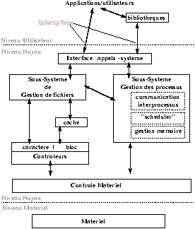
Figure 2.3 : Architecture du noyau
L'autre approche architecturale est l'architecture interne du Noyau (kernel).noyau
C'est à dire l'architecture du programme qui va nous interfacer avec le
matériel. Le but ici est de simplifier la compréhension et la fabrication du
système. Nous cherchons donc ici à décomposer le noyau en parties disjointes
(qui sont concevables et programmables de façons disjointes). La Figure
2.3 donne une idée de ce que peut être l'architecture
interne d'un noyau UNIX. Noter bien la position extérieure des bibliothèques bibliothèques.
Chapitre 3 Système de Gestion de Fichiers
Système de Gestion de Fichiers
Le système de gestion de fichiers est un outil de manipulation des fichiers et de la structure d'arborescence des fichiers sur disque et a aussi le rôle sous UNIX de conserver toutes les informations dont la pérennité est importante pour le système. Ainsi tous les objets importants du système sont référencés dans le système de fichiers (mémoire, terminaux, périphériques variés, etc).
Il permet de plus une utilisation facile des fichiers et gère de façon transparente les différents problèmes d'accès aux supports de masse (partage, débit, droits, etc).
3.1 Le concept de fichier
fichier
L'unité logique de base du S.G.F. le fichier.
Le contenu est entièrement défini par le créateur.
Sur Unix les fichiers ne sont pas typés.
Un fichier Unix est une suite finie de bytes (octets).
Matérialisé par une inode et des blocs du disque.
L'inode définit le fichier, soit principalement les informations :
-
le propriétaire et le groupe propriétaire, propriétaire groupe
- les droits d'accès des différents utilisateurs,droits
- la taille,
- la date de création,
- la localisation sur disque.
on trouvera sur d'autre systèmes d'autres structures d'information
pour décrire les fichiers.
Un nom est lié à un fichier (une référence indique un fichier)
mais un fichier n'est pas lié à une référence, un fichier peut exister sans avoir de nom dans l'arborescence.référence
3.2 Fichiers ordinaires / Fichiers spéciaux.
fichier!ordinairesfichier!spéciaux
On a deux grands types de fichiers sous Unix :
-
les fichiers standards
- que sont par exemple les fichiers texte, les exécutables, etc. C'est-à-dire tout ce qui est manipulé par les utilisateurs.
- Les fichiers spéciaux
- périphériques, mémoire etc,
qui ne sont manipulables que par l'intermédiaire du système.
Les catalogues sont des fichiers spéciaux, il faut en effet
pour les manipuler physiquement faire appel au système 1.
Les fichiers physiques dans le répertoire /dev
fichier!physiques
-
Character devices
les terminaux (claviers, écrans)
les imprimantes
etc
- Block devices
la mémoire
les disques
les bandes magnétiques
etc
Les fichiers à usages logiques et non physiques
-
liens symboliques
- pseudo-terminaux
- sockets
- tubes nommés
Ce dernier type de fichiers spéciaux est
utilisé pour servir d'interface entre disques, entre
machines et simuler : des terminaux, des lignes de communication, etc.
3.2.1 Les catalogues (historique)
Les arborescences de fichiers et de catalogues, organisées comme un
graphe acyclique 2, apparaissent avec le projet MULTICS.
Cette organisation logique du disque a les avantages suivants :
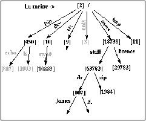
Figure 3.1 : l'arborescence MULTICS
Une racine, un accès absolu aisé.
Une structure dynamique.
Une grande puissance d'expression.
Un graphe acyclique.
L'organisation est arborescente avec quelques connections
supplémentaires (liens multiples sur un même fichier) qui en
font un graphe. Mais ce graphe doit rester acyclique, pour les raisons suivantes :
L'ensemble des algorithmes simples utilisables sur des graphe acycliques comme le parcours, la vérification des fichiers libres, etc. deviennent beaucoup plus difficiles à écrire pour des graphes admettant des cycles.
Des algorithmes de ramasse-miettes doivent être utilisés pour savoir si certains objets sont utilisés on non et pour récuperer les inodes ou blocs perdus après un crash.
Tous les algorithmes de détection dans un graphe quelconque ont une complexité beaucoup plus grande que ceux qui peuvent profiter de l'acyclicité du graphe.
Sous Unix nous sommes assurés que le graphe est acyclique car il est interdit d'avoir plusieurs références pour un même catalogue (sauf la référence spéciale ".." ).
Sous UNIX c'est un graphe acyclique !
3.3 Les inodes
inodesfichiers!inodes
L'inode est le centre de tous les échanges entre le disque et la mémoire.
L'inode est la structure qui contient toutes les informations sur un fichier donné à l'exception de sa référence, dans l'arborescence.
Les informations stockées dans une inode disque sont :
-
utilisateur propriétaire propriétaire
- groupe propriétairegroupe
- type de fichier
- droits d'accès
- date de dernier accès
- date de dernière modification
- date de dernière modification de l'inode
- taille du fichier
- adresses des blocs-disque contenant le fichier.
Dans une inode en mémoire (fichier en cours d'utilisation par un processus) on trouve d'autres informations supplémentaires :
le statut de l'inode
{ locked,
waiting P
inode à écrire,
fichier à écrire,
le fichier est un point de montage
}
Et deux valeurs qui permettent de localiser l'inode sur un des disques logiques :
Numéro du disque logique
Numéro de l'inode dans le disque
cette information est inutile sur le disque (on a une bijection entre la position de l'inode sur disque et le numéro d'inode).
On trouve aussi d'autres types d'informations comme l'accès à la
table des verrous ou bien des informations sur les disques à
distance dans les points de montage.
3.4 Organisation des disques System V
L'organisation disque décrite sur la figure 3.2 est la plus simple que l'on peut trouver de nos jours sous UNIX, il en existe d'autres (cf. section 3.8) où l'on peut en particulier placer un même disque logique sur plusieurs disques physiques (dangereux), certaines où les blocs sont fragmentables, etc.
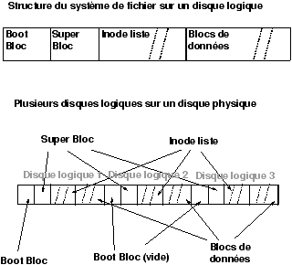
Figure 3.2 : Organisation des blocs et des inodes (SYS V)
-
Boot bloc
- utilisé au chargement du système.boot bloc
- Super Bloc
- il contient toutes les informations générales sur le disque
logique.super bloc
- Inode list
- Table des inodes.
- blocs
- les blocs de données chainés à la création du disque (mkfs).
Les blocs de données ne sont pas fragmentables sous Système V.
3.5 Adressage des blocs dans les inodes
Le système d'adressage des blocs dans les inodes (système V) consiste en 13 adresses de blocs. Les dix premières adresses sont des adresses qui pointent directement sur les blocs de données du fichier. Les autres sont des adresses indirectes vers des blocs de données contenant des adresses. La figure 3.3 nous montre les trois niveaux d'indirection. L'intérêt de cette représentation est d'économiser sur la taille des inodes tout en permettant un accès rapide au petits fichiers (la majorité des fichiers sont petits). Mais en laissant la possibilité de créer de très gros fichiers :
10+256+(256 × 256 )+( 256 × 256 × 256)
blocs disques.
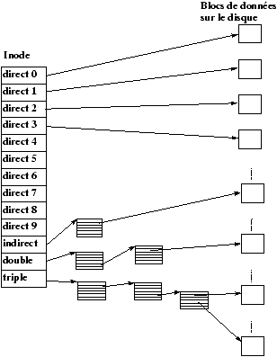
Figure 3.3 : Adressage direct et indirect des inode UNIX
inodes
3.6 Allocation des inodes d'un disque
inodes
L'allocation des inodes est réalisée en recherchant dans la zone des inodes du disque une inode libre. Pour accélérer cette recherche : un tampon d'inodes libres est géré dans le SuperBloc, de plus l'indice de la première inode libre est gardé en référence dans le SuperBloc afin de redémarrer la recherche qu'à partir de la première inode réellement libre.
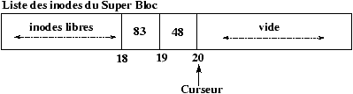
Figure 3.4 : Inodes libres dans le SuperBloc.
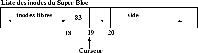
Figure 3.5 : Allocation d'une inode.
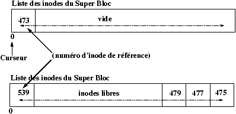
Figure 3.6 : Si le SuperBloc est vide.
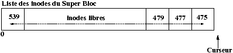
Figure 3.7 : Libération d'une inode avec le SuperBloc plein.
Figure 3.8 : Le numéro d'inode inférieur au numéro de référence.
Figure 3.9 : Le numéro d'inode supérieur au numéro de référence.
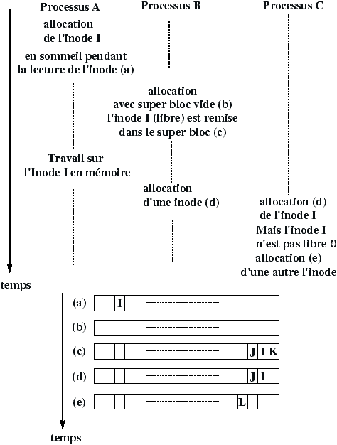
Figure 3.10 : Faille de l'algorithme d'allocation.
Mais ce système a une faille qu'il faut prévoir dans l'écriture dans l'algorithme ialloc d'allocation d'inode, cette faille est décrite dans la Figure 3.10
3.7 Allocation des blocs-disque
L'algorithme utilisé pour gérer l'allocation des inodes s'appuie sur le fait que l'on peut tester si une inode est libre ou non en regardant son contenu. Ceci n'est plus vrai pour les blocs. La solution est de chaîner les blocs. Ce chaînage est réalisé par blocs d'adresses pour accélérer les accès et profiter au maximum du buffer cache. Il existe donc un bloc d'adresses dans le super bloc qui sert de zone de travail pour l'allocateur de blocs. L'utilisation de ce bloc et le mécanisme d'allocation sont décrits dans les Figures 3.11 à 3.16
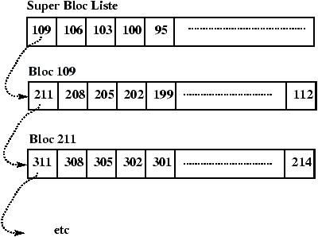
Figure 3.11 : Liste chainée de blocs.
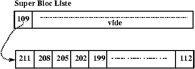
Figure 3.12 : Etat initial du SuperBloc.
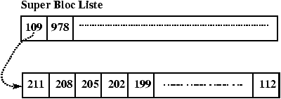
Figure 3.13 : Libération du bloc 978.
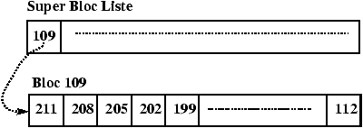
Figure 3.14 : Allocation du bloc 978.
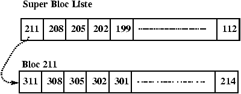
Figure 3.15 : Allocation du bloc 109.
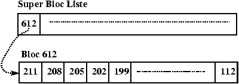
Figure 3.16 : Libération du bloc 612.
3.8 Les systèmes de fichiers ffs/ufs de BSD
ffs
Les disques sous BSD sont organisés par groupes de cylindres et chacun de ces groupes a la même organisation que les disques logiques System V, avec en plus une table de groupes de cylindres qui permet d'organiser l'allocation des blocs de façon à réduire le déplacement des têtes de lecture (ce qui augmente le débit).
Quelques différences :
Les blocs de données sont plus grands (4K ou 8K) mais fragmentables.
Une inode contient 12 adresses directes, une adresse indirecte et 2 adresses indirectes doubles.
Enfin, les répertoires sont composés d'enregistrements de tailles variables (le nom des liens est en effet limité à 14 en System V, et à 255 en BSD, c.f. entrées-sorties sur répertoires), la norme POSIX fixe la taille maximum des liens à 255 (MAXNAMLEN).
- 1
-
les répertoires restent accessibles en lecture comme des fichiers
ordinaires (essayez de faire cat "."), mais l'accès en écriture est
contraint, pour assurer la structure arborescente.
- 2
- Ce n'est pas un arbre car un fichier peut
avoir plusieurs références
Chapitre 4 Le Buffer Cache
4.1 Introduction au buffer cache
buffer cache
Le buffer cache est un ensemble de structures de données et d'algorithmes qui permettent de minimiser le nombre des accès disque.
Ce qui est très important car les disques sont très lents relativement au CPU et un noyau qui se chargerait de toutes les entrées/sorties serait d'une grande lenteur et l'unité de traitement ne serait effectivement utilisée qu'à un faible pourcentage (voir Historique).
Deux idées pour réduire le nombre des accès disques :
-
bufferiser les différentes commandes d'écriture et de lecture de façon à faire un accès disque uniquement pour une quantité de données de taille raisonnable (un bloc disque).bufferiser
- Eviter des écritures inutiles quand les données peuvent encore être changées (écriture différées).
4.1.1 Avantages et désavantages du buffer cache
-
Un accès uniforme au disque.
Le noyau n'a pas à connaître la raison de l'entrée-sortie. Il copie les données depuis et vers des tampons (que ce soient des données, des inodes ou le superbloc). Ce mécanisme est modulaire et s'intègre facilement à l'ensemble du système qu'il rend plus facile à écrire.
- Rend l'utilisation des entrées-sorties plus simple pour l'utilisateur qui n'a pas à se soucier des problèmes d'alignement, il rend les programmes portables sur d'autres UNIX 1.
- Il réduit le trafic disque et de ce fait augmente la capacité du système.
Attention : le nombre de tampons ne doit pas trop réduire la mémoire centrale utilisable.
- L'implémentation du buffer cache protège contre certaines écritures "concurrentes"
- L'écriture différée pose un problème dans le cas d'un crash du système. En effet si votre machine s'arrête (coupure de courant) et que un (ou plusieurs) blocs sont marqués "à écrire" ils n'ont donc pas étés sauvegardés physiquement. L'intégrité des données n'est donc pas assurée en cas de crash.
- Le buffer cache nécessite que l'on effectue une recopie (interne à la mémoire, de la zone utilisateur au cache ou inversement) pour toute entrée-sortie. Dans le cas de transferts nombreux ceci ralentit les entrées-sorties .
4.2 Le buffer cache, structures de données.
Figure 4.1 : Structure des entêtes de Bloc du Buffer Cache
Le statut d'un bloc cache est une combinaison des états suivants :
-
verrouillé
- l'accès est reservé à un processus.
- valide
- (les données contenues dans le bloc sont valides).
- "à écrire"
- les données du bloc doivent être écrites sur disque avant de réallouer le bloc ( c'est de l'écriture retardée).
- actif
- le noyau est en train d'écrire/lire le bloc sur le disque.
- attendu
- un processus attend la libération du bloc.
4.2.1 La liste doublement chaînée des blocs libres
Les tampons libres appartiennent simultanément à deux listes doublement chaînées : la liste des blocs libres et la hash-liste correspondant au dernier bloc ayant été contenu dans ce tampon.
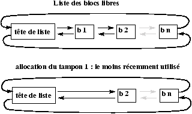
Figure 4.2 : La liste des tampons libres.
L'insertion dans la liste des tampons libres se fait en fin de liste,
la suppression (allocation du tampon à un bloc donné) se fait en
début de liste, ainsi le tampon alloué est le plus vieux
tampon libéré2.
Ceci permet une réponse immédiate si le bloc correspondant est réutilisé avant que le tampon ne soit alloué à un autre bloc.
4.3 L'algorithme de la primitive getblk
Algorithme getblk (allocation d'un tampon)
entree : # disque logique , # de block
sortie : un tampon verrouille utilisable pour manipuler bloc
{
while (tampon non trouve)
{
if (tampon dans sa hash liste)
{
if (tampon actif )
{
[5] sleep attente de la liberation du tampon
continuer
}
[1] verrouiller le tampon
retirer le tampon de la liste des tampons libres
retourner le tampon
}
else /* n'est pas dans la hash liste */
{
if (aucun tampon libre )
{
[4] sleep attente de la liberation d'un tampon
continuer
}
retirer le tampon de la liste libre
[3] if (le tampon est a ecrire)
{
lancer la sauvegarde sur disque
continuer
}
[2] retirer le buffer de son ancienne liste
de hashage, le placer sur la nouvelle
retourner le tampon
}
}
}
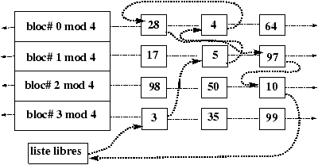
Figure 4.3 : Etat du buffer cache avant les scénarios 1, 2 et 3.
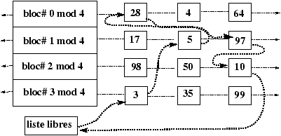
Figure 4.4 : Scénario 1- Demande d'un tampon pour le bloc-disque 4.
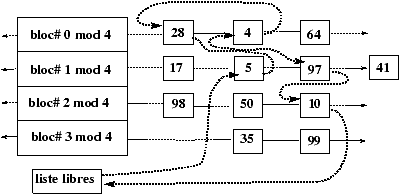
Figure 4.5 : Scénario 2- Demande d'un tampon pour le bloc-disque 41.
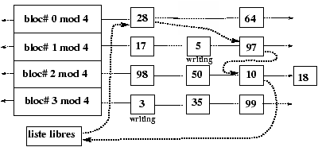
Figure 4.6 : Scénario 3- Demande pour le bloc 18 (3 & 5 marqués à écrire).
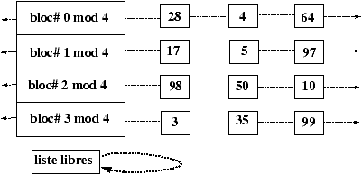
Figure 4.7 : Scénario 4- Plus de blocs libres.
Figure 4.8 : Scénario 5- Demande pour le bloc 17 qui est déjà utilisé.
- 1
- Les problèmes d'alignement existent toujours quand on transfère des données, cf. protocoles XDR,RPC
- 2
- ordre fifo : first in first out
Chapitre 5 La bibliothèque standard
5.1 Les descripteurs de fichiers.
Le fichier d'inclusion <stdio.h> contient la définition du type
FILE.
stdio.h@stdio.h
Ce type est une structure contenant les informations nécessaires au système pour la manipulation d'un fichier ouvert. Le contenu exact de cette structure peut varier d'un système à l'autre (UNIX, VMS, autre).
Toutes les fonctions d'E/S utilisent en premier argument un pointeur sur une
telle structure : FILE *. FILE@FILE
Le rôle de cet argument est d'indiquer le fichier sur lequel on doit effectuer l'opération d'écriture ou de lecture.
Pour pouvoir utiliser une fonction d'entrée-sortie il faut donc avoir une valeur pour ce premier argument, c'est le rôle de la fonction fopen de nous fournir ce pointeur en "ouvrant" le fichier.
stdlib!printf@printf stdlib!scanf@scanf
Les deux fonctions printf et scanf sont des synonymes de
fprintf(stdout, format, ...)
et
fscanf(stdin, format, ...)
où stdout et stdin sont des expressions de type FILE * définies sous forme de macro-définitions dans le fichier
<stdio.h>
. Avec POSIX ce sont effectivement des fonctions.
Sous UNIX les fichiers ouverts par un processus le restent dans ses fils. Par exemple le shell a en général trois fichiers ouverts :
-
stdin
- le terminal ouvert en lecture.
stdlib!stdin@stdin
- stdout
- le terminal ouvert en écriture.
stdlib!stdout@stdout
- stderr
- le terminal ouvert en écriture, et en mode non bufferisé.
stdlib!stderr@stderr
ainsi si l'exécution d'un programme C est réalisée à partir du shell le programme C a déjà ces trois descripteurs de fichiers utilisables.
C'est pourquoi il est en général possible d'utiliser printf et scanf sans ouvrir préalablement de fichiers.
Mais si l'entrée standard n'est pas ouverte, scanf échoue :
#include <stdio.h>
main()
{
int i;
if (scanf("%d", &i) == EOF)
{
printf("l\'entree standard est fermee\n");
}
else
{
printf("l\'entree standard est ouverte\n");
}
}
Compilé,(a.out), cela donne les deux sorties suivantes :
$ a.out
l'entree standard est ouverte
$ a.out <&- # fermeture de l'entree standard en ksh
l'entree standard est fermee
De même printf échoue si la sortie standard est fermée.
5.1.1 Ouverture d'un fichier
La fonction de la bibliothèque standard fopen permet d'ouvrir un fichier ou de le créer.
#include <stdio.h>
FILE *fopen(const char *filename,
const char *type);
stdlib!fopen@fopen
filename est une référence absolue ou relative du fichier à ouvrir; si le fichier n'existe pas alors il est créé si et seulement si l'utilisateur du processus a l'autorisation d'écrire dans le répertoire.
type est une des chaînes suivantes :
-
"r"
- ouverture en lecture au début du fichier
- "w"
- ouverture en écriture au début du fichier avec écrasement du fichier si il existe (le fichier est vidé de son contenu à l'ouverture).
- "a"
- ouverture en écriture à la fin du fichier (mode append).
- "r+","w+","a+"
- ouverture en lecture écriture respectivement au début du fichier, au début du fichier avec écrasement, à la fin du fichier.
FILE *f;
...
if ((f = fopen("toto", "r")) == NULL)
{
fprintf(stderr, "impossible d'ouvrir toto\n");
exit(1);
}
...
La fonction retourne un pointeur sur un descripteur du fichier ouvert ou NULL en cas d'échec, (accès interdit, création impossible, etc).
5.1.2 Redirection d'un descripteur : freopen
redirection
stdlib!freopen@freopen
Permet d'associer un descripteur déjà utilisé à une autre ouverture de fichier. Ceci permet de réaliser facilement les redirections du shell.
FILE *freopen(const char *ref,
const char *mode,
FILE *f)
Par exemple les redirections de la ligne shell :
com <ref1 >>ref2
peuvent être réalisées avec
if (!freopen("ref1", "r", stdin) || !freopen("ref2", "a", stdout))
{
fprintf(stderr, "erreur sur une redirection\n");
exit(1);
}
execl("./com", "com", NULL);
5.1.3 Création de fichiers temporaires
La fonction
stdlib!tmpfile@tmpfile
#include <stdio.h>
FILE *tmpfile(void);
crée et ouvre en écriture un nouveau fichier temporaire, qui sera détruit (un unlink est réalisé immédiatement) à la fin de l'exécution du processus, attention le descripteur est hérité par les fils. Cette fonction utilise la fonction
char *tmpnam(char *ptr);
stdlib!tmpnam@tmpnam
Cette fonction génère un nouveau nom de fichier et place celui-ci dans la zone pointée par ptr si ptr ¹ NULL, la zone réservée doit être d'au moins L_tmpnam octets. Si ptr = NULL une zone statique est utilisée.
5.1.4 Ecriture non formatée
Les deux fonctions suivantes permettent d'écrire et de lire des zones mémoire, le contenu de la mémoire est directement écrit sur disque sans transformation, et réciproquement le contenu du disque est placé tel quel en mémoire. L'intérêt de ces fonctions est d'obtenir des entrées sorties plus rapides et des sauvegardes disque plus compactes mais malheureusement illisibles (binaire).
#include <stdio.h>
int fwrite(void *add, size_t ta, size_t nbobjets, FILE *f);
stdlib!fwrite@fwrite
Ecrit nbobjets de taille ta qui se trouvent à l'adresse add dans le fichier de descripteur f.
#include <stdio.h>
int fread(void *add, size_t ta, size_t nbobjets, FILE *f);
stdlib!fread@fread
Lit nbobjets de taille ta dans le fichier de descripteur f et les place à partir de l'adresse add en mémoire.
Attention : La fonction fread retourne 0 si l'on essaye de lire
au delà du fichier. Pour écrire une boucle de lecture propre on utilise la fonction feof(FILE *) :
int n[2];
while (fread(n, sizeof(int), 2, f), !feof(f))
printf("%d %d \n", n[0], n[1]);
stdlib!feof@feof
5.1.5 Accès séquentiel
On distingue deux techniques d'accès aux supports magnétiques :
- accès séquentiel
L'accès séquentiel qui consiste à traiter les
informations dans l'ordre où elle apparaissent sur le support
(bandes). Le lecteur physique avance avec la lecture, et se
positionne sur le début de l'enregistrement suivant.
- L'accès direct qui consiste à se placer directement sur l'information sans parcourir celles qui la précèdent (disques). Le lecteur physique reste sur le même enregistrement après une lecture.accès direct
En langage C l'accès est séquentiel mais il est possible de
déplacer le "pointeur de fichier" c'est à dire
sélectionner l'indice du prochain octet à lire ou écrire.pointeur de fichier
Comme nous venons de le voir dans les modes d'ouverture, le pointeur de fichier peut être initialement placé en début ou fin de fichier.
Les quatre fonctions d'entrée-sortie (fgetc, fputc, fscanf, fprintf) travaillent séquentiellement à partir de cette origine fixée par fopen.
5.1.6 Manipulation du pointeur de fichier
Le pointeur de fichier est un entier long qui indique à partir de quel octet du fichier la prochaine fonction d'entrée-sortie doit s'effectuer.
En début de fichier cet entier est nul.
#include <stdio.h>
int fseek(FILE *f, long pos, int direction);
stdlib!fseek@fseek
f le descripteur du fichier dans lequel ont déplace le pointeur.
direction est une des trois constantes entières suivantes :
-
SEEK_SET
- positionnement sur l'octet pos du fichier
- SEEK_CUR
- positionnement sur le pos-ième octet après la position courante du pointeur de fichier. (équivalent à SEEK_SET courant+pos).
- SEEK_END
- positionnement sur le pos-ième octet après la fin du fichier.
Remarquer que pos est un entier signé : il est possible se placer sur le 4ième octet avant la fin du fichier :
fseek(f, -4L, SEEK_END);
5.1.7 Un exemple d'accès direct sur un fichier d'entiers.
La fonction suivante lit le n-ième entier d'un fichier d'entiers
préalablement écrit grâce à fwrite :
int lirenieme(int n, FILE *f)
{
int buf;
fseek(f, sizeof(int)*(n-1), SEEK_SET);
fread(&buf, sizeof(int), 1, f);
return buf;
} \istd{fseek}\istd{fread}
5.1.8 Les autres fonctions de déplacement du pointeur de fichier.
La fonction ftell
long int ftell(FILE *);
stdlib!ftell@ftell
retourne la position courante du pointeur.
La fonction rewind
void rewind(FILE *f);
stdlib!rewind@rewind
équivalent à : (void) fseek (f, 0L, 0)
5.2 Les tampons de fichiers de stdlib.
La bibliothèque standard utilise des tampons pour minimiser le
nombre d'appels système. Il est possible de tester l'efficacité de
cette bufferisation en comparant la vitesse de recopie d'un même
fichier avec un tampon de taille 1 octet et un tampon adapté à la machine, la différence devient vite très importante.
Une façon simple de le percevoir est d'écrire un programme com qui réalise des écritures sur la sortie standard ligne
par ligne, de regarder sa vitesse puis de comparer avec la commande suivantes :com | cat la bibliothèque standard utilisant des buffer différents dans les deux cas une différence de vitese d'exécution est perceptible (sur une machine lente la différence de vitesse est évidente, mais elle existe aussi sur une rapide...).
5.2.1 Les modes de bufferisation par défaut.
Le mode de bufferisation des fichiers ouverts par la bibliothèque standard dépend du type de périphérique.
- bufferisation
Si le fichier est un terminal la bufferisation est faite ligne à ligne.
En écriture le tampon est vidé à chaque écriture d'un
'\n' , ou quand il est plein (première des deux occurences).
En lecture le tampon est rempli après chaque
validation (RC), si l'on tape trop de caractères le terminal
proteste (beep) le buffer clavier étant plein.
- Si le fichier est sur un disque magnétique
En écriture le tampon est vidé avant de déborder.
En lecture le tampon est rempli quand il est vide.
Le shell de login change le mode de bufferisation de stderr qui est un fichier terminal à non bufferisé.
Nous avons donc à notre disposition trois modes de bufferisation standards :
-
Non bufferisé (sortie erreur standard),
- Bufferisé par ligne (lecture/écriture sur terminal),
- Bufferisé par blocs (taille des tampons du buffer cache).
Les terminaux acceptent d'autres modes de bufferisation plus complexes en entrée que nous étudierons avec les particularités de ces périphériques (chapître 12).
Un exemple de réouverture de la sortie standard, avec perte du
mode de bufferisation :
#include <stdio.h>
main()
{
freopen("/dev/tty", "w", stderr);
fprintf(stderr, "texte non termine par un newline ");
sleep(12);
exit(0); /* realise fclose(stderr) qui realise fflush(stderr) */
}
stdlib!freopen@freopen
Il faut attendre 12 secondes l'affichage.
5.2.2 Manipulation des tampons de la bibliothèque standard.
Un tampon alloué automatiquement (malloc) est associé à chaque ouverture de fichier par fopen au moment de la première entrée-sortie sur le fichier.
La manipulation des tampons de la bibliothèque standard comporte deux aspects :
-
Manipulation de la bufferisation de façon ponctuelle (vidange).
- Positionnement du mode de bufferisation.
Manipulations ponctuelles
La fonction suivante permet de vider le tampon associé au FILE * f :
#include <stdio.h>
fflush(FILE *f);
stdlib!fflush@fflush
En écriture force la copie du tampon associé à la structure f dans le tampon système (ne garantit pas l'écriture en cas d'interruption du système!).
En lecture détruit le contenu du tampon, si l'on est en mode ligne uniquement jusqu'au premier caractère '\n'.
La fonction fclose() réalise un fflush() avant de fermer le fichier.
La fonction exit() appel fclose() sur tous les fichiers ouvert par
fopen (freopen,tmpfile,...) avant de terminer le processus.
stdlib!fclose@fclose
Manipulations du mode de bufferisation et de la taille du tampon.
La primitive
int setvbuf(FILE *f,
char *adresse,
int mode,
size_t taille);
stdlib!setvbuf@setvbuf
permet un changement du mode de bufferisation du fichier f avec un tampon de taille taille fourni par l'utilisateur à l'adresse adresse si elle est non nulle, avec le mode défini par les macro-définitions suivantes (<stdio.h>) :
_IOFBF bufferise
_IONBF Non bufferise
_IOMYBUF Mon buffer
_IOLBF bufferise par ligne (ex: les terminaux)
Attention : Il ne faut pas appeler cette fonction après l'allocation automatique réalisée par la bibliothèque standard après le premier appel à une fonction d'entrée-sortie sur le fichier.
Il est fortement conseillé que la zone mémoire pointée par adresse soit au moins d'une taille égale à taille.
Seul un passage au mode bufferisé en ligne ou non bufferisé peut
être réalisé après l'allocation automatique du tampon, au
risque de perdre ce tampon (absence d 'appel de free). Ce qui permet par exemple de changer le mode de bufferisation de la sortie standard après un fork. Attention ce peut être dangereux, pour le contenu courant du tampon comme le montre l'exemple suivant.
Avant cette fonction de norme POSIX on utilisait trois fonctions :
void setbuf(FILE *f, char *buf);
void setbuffer(FILE *f,char *adresse,size_t t);
void setlignebuf(FILE *f);
stdlib!setbuf@setbuf
stdlib!setbuffer@setbuffer
stdlib!setlignebuf@setlignebuf
#include <stdio.h>
main()
{
printf("BonJour ");
switch(fork())
{
case -1 :
exit(1);
case 0 :
printf("je suis le fils");
/* version 1 sans la ligne suivante version 2 avec */
setbuffer(stdout, NULL, 0);
sleep(1);
printf("Encore le fils");
break;
default :
printf("je suis le pere");
sleep(2);
}
printf("\n");
}
version 1
fork_stdlib
BonJour je suis le fils Encore le fils
BonJour je suis le pere
version 2
Encore le fils
BonJour je suis le pere
5.3 Manipulation des liens d'un fichier
Changer le nom d'un fichier :
int rename(const char *de,const char *vers);
stdlib!rename@rename
permet de renommer un fichier (ou un répertoire). Il faut que les
deux références soient de même type (fichier ou
répertoire) dans le même système de
fichiers.
Rappel : ceci n'a d'effet que sur l'arborescence de fichiers.
Détruire une référence :
int remove(const char *filename);
stdlib!remove@remove
Détruit le lien donné en argument, le système récupère l'inode et les blocs associés au fichier si c'était le dernier lien.
5.4 Lancement d'une commande shell
#include <stdlib.h>
int system(const char *chaine_de_commande);
stdlib!system@system
Crée un processus ``/bin/posix/sh'' qui exécute la commande ;
il y a attente de la fin du shell, (la commande peut elle être
lancée en mode détaché ce qui fait que le shell retourne
immédiatement sans faire un wait). Ce mécanisme est très
coûteux. Attention la commande system bloque les signaux
SIGINT et SIGQUIT, il faut analyser la valeur de retour de system
de la même façons que celle de wait. Il est conseillé de
bloquer ces deux signaux avant l'appel de system .
5.5 Terminaison d'un processus
_exit
La primitive de terminaison de processus de bas niveau :
#include <stdlib.h>
void _exit(int valeur);
appels systèmes!_exit@_exit
La primitive _exit est la fonction de terminaison "bas niveau"
-
elle ferme les descripteurs ouverts par open, opendir ou hérités du processus père.
- la valeur est fournie au processus père qui la récupère par l'appel système wait. Cette valeur est le code de retour de processus en shell.
Cette primitive est automatiquement appelée à la fin de la fonction main (sauf en cas d'appels récursifs de main).
exit
La fonction de terminaison de processus de stdlib :
#include <stdlib.h>
void exit(int valeur);
stdlib!exit@exit
la fonction exit :
-
lance les fonctions définies par atexit.
- ferme l'ensemble des descripteurs ouverts grâce à la bibliothèque standard (fopen).
- détruit les fichiers fabriqués par la primitive tmpfile
- appelle _exit avec valeur.
atexit
La primitive atexit permet de spécifier des fonctions à appeler en fin d'exécution, elle sont lancées par exit dans l'ordre inverse de leur positionnement par atexit.
#include <stdlib.h>
int atexit(void (*fonction) (void ));
stdlib!atexit@atexit
Exemple :
void bob(void) {printf("coucou\n");}
void bib(void) {printf("cuicui ");}
main(int argc)
{
atexit(bob);
atexit(bib);
if (argc - 1)
exit(0);
else
_exit(0);
}
$ make atexit
cc atexit.c -o atexit
$ atexit
$ atexit unargument
cuicui coucou
$
5.6 Gestion des erreurs
Les fonctions de la bibliothèque standard positionnent deux indicateurs d'erreur, la fonction suivante les repositionne :
void clearerr(FILE *);
stdlib!clearerr@clearerr
stdlib!feof@feof
La fonction int feof(FILE *) est vraie si la fin de fichier est atteinte sur ce canal, int ferror(FILE *) est vraie si une erreur a eu lieu pendant la dernière tentative de lecture ou d'écriture sur ce canal.
Une description en langue naturelle de la dernière erreur peut être obtenue grace à
void perror(const char *message);
stdlib!perror@perror
l'affichage se fait sur la sortie erreur standard (stderr).
5.7 Création et destruction de répertoires
Création d'un répertoire vide (même syntaxe que creat) :
#include <unistd.h>
int mkdir(char *ref, mode_t mode);
stdlib!mkdir@mkdir
Destruction :
int rmdir(char *ref);
stdlib!rmdir@rmdir
avec les mêmes restrictions que pour les shells sur le contenu du
répertoire (impossible de détruire un répertoire non vide).
Chapitre 6 Appels système du Système de Gestion de Fichier
Les appels système d'entrées-sorties ou entrées-sorties de bas niveau sont rudimentaires mais polymorphes, en effet c'est eux qui permettent d'écrire des programmes indépendamment des supports physiques sur lesquels se font les entrées/sorties et de pouvoir facilement changer les supports physiques associés a une entrée-sortie.
Les appels système du système de gestion de fichier sont :
-
appels systèmes!introduction@introduction
open/creat
- ouverture/création d'un fichier
- read/write
- lecture/ecriture sur un fichier ouvert
- lseek
- déplacement du pointeur de fichier
- dup,dup2
- copie d'ouverture de fichier
- close
- fermeture d'un fichier
- mount
- chargement d'un disque
- mknode
- création d'un inode de fichier spécial
- pipe
- création d'un tube
- fcntl
- manipulation des caractéristiques des ouvertures de fichiers
Les appels système sont réalisés par le noyau et retournent -1 en cas d'erreur.
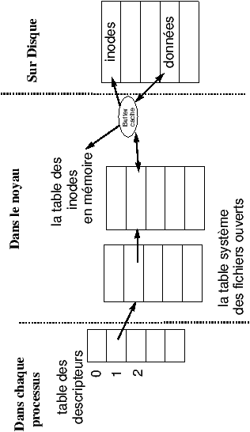
Figure 6.1 : Tables du système de fichiers.
6.1 open
#include <fcntl.h>
int open(char *ref, int mode, int perm);
appels systèmes!open@open
Ouverture du fichier de référence (absolue ou relative à ".") ref.
Le mode d'ouverture est une conjonction des masques suivants :
O_RDONLY /* open for reading */
O_WRONLY /* open for writing */
O_RDWR /* open for read & write */
O_NDELAY /* non-blocking open */
O_APPEND /* append on each write */
O_CREAT /* open with file create */
O_TRUNC /* open with truncation */
O_EXCL /* error on create if file exists*/
Le paramètre permission n'a de sens qu'à la création du
fichier, il permet de positionner les valeurs du champ mode de
l'inode. Les droits effectivement positionnés dépendent de la
valeur de umask, grace à la formule droits = perm &
~ umask. La valeur par défaut de umask est 066 (valeur octale).
La valeur de retour de open est le numéro dans la table de
descripteurs du processus qui a été utilisé par open. Ce numéro est appelé descripteur de l'ouverture. Ce descripteur est utilisé dans les autres appels système pour spécifier l'ouverture de fichier sur laquelle on veut travailler1, et -1 en cas d'échec de l'ouverture.
6.1.1 Déroulement interne d'un appel de open
-
Le système détermine l'inode du fichier
référence (namei).
-
-
Soit l'inode est dans la table des inodes en mémoire.
- Soit il alloue une entrée et recopie l'inode du disque (iget).
- Le système vérifie les droits d'accès dans le mode demandé.
- Il alloue une entrée dans la table des fichiers ouverts du système, et positionne le curseur de lecture écriture dans le fichier (offset = 0, sauf dans le cas du mode O_APPEND offset=taille du fichier).
- Le système alloue une place dans la table des descripteurs _iob du fichier.
- Il renvoie au processus le numéro de descripteur, c'est à dire le numéro de l'entrée qu'il vient d'allouer dans le tableau _iob.
Si l'opération a échoué dans une des étapes le système renvoie -1.
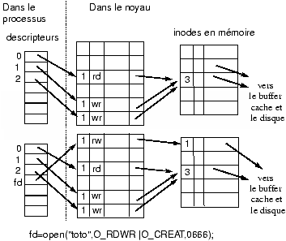
Figure 6.2 : Avant l'ouverture, descripteurs standard ouverts, puis après l'ouverture de ''toto''.
6.2 creat
Création d'un fichier et ouverture en écriture.
int creat(char *reference, int permissions);
appels systèmes!creat@creat
-
Le système détermine l'inode du catalogue où l'on demande la création du fichier.
-
Si il existe déjà une inode pour le fichier
-
Le noyau lit l'inode en question (allocation dans la table des
inodes en mémoire), vérifie que c'est un fichier
ordinaire autorisé en écriture par le propriétaire
effectif du processus, sinon échec.
- Le système libère les blocs de données et réduit la taille du fichier à zéro, il ne modifie pas les droits qu'avait le fichier antérieurement.
- Si n'existait pas d'inode pour le fichier
-
Le système teste les droits en écriture sur le catalogue
- Il alloue une nouvelle inode (ialloc)
- Il alloue une nouvelle entrée dans la table des inodes en mémoire.
Même suite que pour open.
6.3 read
int nbcharlus = read(int d, char *tampon, int nbalire)
appels systèmes!read@read
descripteur- entrée de la table des descripteurs correspondante au fichier dans lequel doit être effectuée la lecture (fourni par open).
- nbalire
- nombre de caractères à lire dans le fichier.
- tampon
- un tableau de caractères alloué par l'utilisateur.
Les caractères lus sont placés dans ce tampon.
- nbcharlus
- nombre de caractères effectivement lus, ou
-1 en cas d'échec de l'appel système, (droits, ...), la
fin de fichier est atteinte quand le nombre de caractères
lus est inférieur au nombre de caractères demandés.
Déroulement :
-
Vérification du descripteur ¾® accès aux tables système.
- Droits (mode adéquat)
- Grâce à l'inode le système obtient les adresses du (des) bloc(s) contenant les données à lire. Le système effectue la lecture de ces blocs.
- Le système recopie les données du buffer cache vers le tampon de l'utilisateur.
- Le curseur dans le fichier est remit à jour dans l'entrée de la table des fichiers ouverts.
- Le système renvoie le nombre de caractères effectivement lus.
6.4 write
int nbcecrits = write(int desc, char *tampon, int nbaecrire);
appels systèmes!write@write
Même déroulement que read mais avec une allocation éventuelle de bloc-disque dans le cas d'un ajout au-delà de la fin du fichier.
Dans le cas où l'appel concerne un périphérique en mode caractère :
le système active la fonction write (réciproquement read pour une lecture) du périphérique qui utilise directement l'adresse du tampon utilisateur.
Remarquons ici encore le polymorphisme de ces deux appels système
qui permet de lire et d'écrire sur une grande variété de
périphériques en utilisant une seule syntaxe. Le code C
utilisant l'appel système marchera donc indifféremment sur tous les types de périphériques qui sont définis dans le système de fichier. Par exemple, il existe deux périphériques "logiques" qui sont /dev/null et /dev/zéro (que l'on ne trouve pas sur toutes les machines).
Le premier est toujours vide en lecture et les écritures n'ont aucun effet (il est donc possible de déverser n'importe quoi sur ce périphérique). Le deuxième fournit en lecture une infinité de zéro et n'accepte pas l'écriture.
6.5 lseek
#include <fcntl.h>
off_t lseek(int d, off_t offset, int direction)
lseek permet de déplacer le curseur de fichier dans la table des fichiers ouverts du système.
offset un déplacement en octets.
d le descripteur.
direction une des trois macros L_SET, L_INCR, L_XTND.
-
L_SET
- la nouvelle position est offset sauf si offset est
supérieur à la taille du fichier, auquel cas la position
est égale à la taille du fichier. Si l'offset est négatif,
alors la position est zéro.
- L_INCR
- la position courante est incrémentée de
offset place (même contrainte sur la position maximum et la
position minimum).
- L_XTND
- Déplacement par rapport à la fin du fichier, cette
option permet d'augmenter la taille du fichier (ne pas créer
de fichiers virtuellement gros avec ce mécanisme, ils posent des
problèmes de sauvegarde).
La valeur de retour de lseek est la nouvelle position du curseur dans le fichier ou -1 si l'appel a échoué.
6.6 dup et dup2
Les appels dup et dup2 permettent de dupliquer des entrées de la table des descripteurs du processus.
int descripteur2 = dup(int descripteur1);
appels systèmes!dup@dup
-
vérification que descripteur est le numéro d'une entrée non nulle.
- recopie dans la première entrée libre du tableau des descripteurs l'entrée correspondant à descripteur1.
- le compteur de descripteurs de l'entrée associée à
descripteur1 dans la table des ouvertures de fichiers est incrémenté.
- renvoi de l'indice dans la table des descripteurs de l'entrée nouvellement allouée.
Redirection temporaire de la sortie standard dans un fichier :
tempout = open("sortie_temporaire",1);
oldout = dup(1);
close(1);
newout = dup(tempout); /* renvoie 1 */
write(1,"xxxx",4); /* ecriture dans le fichier temporaire */
close(tempout);
close(1);
newout = dup(oldout);
close(oldout);
Il est aussi possible de choisir le descripteur cible avec
int ok = dup2(int source, int destination);
appels systèmes!dup2@dup2
Recopie du descripteur source dans l'entrée destination de la
table des descripteurs.
Si destination désigne le descripteur d'un fichier ouvert,
celui-ci est préalablement fermé avant duplication. Si destination n'est pas un
numéro de descripteur valide, il y a une erreur, retour -1.
6.7 close
Fermeture d'un fichier.
int ok = close(descripteur);
appels systèmes!close@close
-
si descripteur n'est pas un descripteur valide retour -1
- l'entrée d'indice descripteur de la table est libérée.
- Le compteur de l'entrée de la table des fichiers ouvert associé à descripteur est décrémenté.
Si il passe à Zéro alors
- l'entrée de la table des fichiers ouverts est libérée et
le compteur des ouvertures de l'inode en mémoire est décrémenté.
Si il passe à Zéro alors
- l'entrée dans la table des inodes en mémoire est libérée.
Si de plus le compteur de liens de l'inode est à 0 alors
- le fichier est libéré : récupération de l'inode et des blocs.
Dans le cas d'une ouverture en écriture : le dernier bloc du buffer
cache dans lequel on a écrit est marqué ``a écrire''.
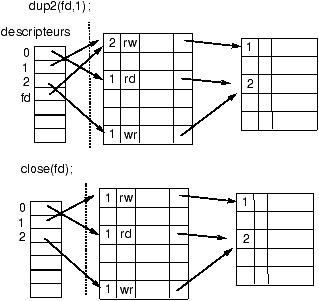
Figure 6.3 : Redirection de la sortie standard sur ''toto''.
- 1
- Un même fichier peut être ouvert plusieurs fois.
Chapitre 7 Les processus
7.1 Introduction aux processus
processus
Un processus est un ensemble d'octets (en langage machine) en cours d'exécution, en d'autres termes, c'est l'exécution d'un programme.
Un processus UNIX se décompose en :
-
processus!decomposition
un espace d'adressage (visible par l'utilisateur/programmeur)
- Le bloc de contrôle du processus (BCP) lui-même décomposé en :
-
une entrée dans la table des processus du noyau struct proc
définie dans <sys/proc.h>.
processus!proc@struct proc
- une structure struct user appelée zone u définie dans
<sys/user.h>
processus!user@struct user
Les processus sous Unix apportent :
-
La multiplicité des exécutions
Plusieurs processus peuvent être l'exécution d'un même
programme.
- La protection des exécutions
Un processus ne peut exécuter que ses instructions propres et ce
de façon séquentielle; il ne peut pas exécuter des
instructions appartenant à un autre processus.
Les processus sous UNIX communiquent entre eux et avec le reste du monde grâce aux appels système.
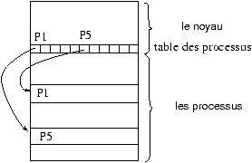
Figure 7.1 : La table des processus est interne au noyau.
7.1.1 Création d'un processus - fork()
processus!création
Sous UNIX la création de processus est réalisée par l'appel système :
int fork(void);
appels systèmes!fork@fork
Tous les processus sauf le processus d'identification 0, sont
créés par un appel à fork.
Le processus qui appelle le fork est appelé processus père.
Le nouveau processus est appelé processus fils.
Tout processus a un seul processus père.
Tout processus peut avoir zéro ou plusieurs processus fils.
Chaque processus est identifié par un numéro unique, son PID.
Le processus de PID=0 est créé "manuellement" au démarrage
de la machine, ce processus a toujours un rôle
spécial1 pour le
système, de plus pour le bon fonctionement des programmes utilisant
fork() il faut que le PID zéro reste toujours utilisé. Le processus
zéro crée, grâce à un appel de fork, le processus init de PID=1.
Le processus de PID=1 de nom init est l'ancêtre de tous les
autres processus (le processus 0 ne réalisant plus de fork()),
c'est lui qui accueille tous les processus orphelins de père (ceci
a fin de collecter les information à la mort de chaque processus).
7.2 Format d'un fichier exécutable
processus!format de fichier
Les compilateurs nous permettent de créer des fichiers exécutables. Ces fichiers ont le format suivant qui permet au noyau de les transformer en processus :
-
Une en-tête qui décrit l'ensemble du fichier, ses attributs et sa carte des sections.
- La taille à allouer pour les variables non initialisées.
- Une section TEXT qui contient le code (en langage machine)
processus!$TEXT$
- Une section données (DATA) codée en langage machine qui contient les données initialisées.
processus!$DATA$
- Eventuellement d'autres sections : Table des symboles pour le débugeur, Images, ICONS, Table des chaînes, etc.
Pour plus d'informations se reporter au manuel a.out.h sur la machine.
7.3 Chargement/changement d'un exécutable
L'appel système execve change l'exécutable du processus courant en chargeant un nouvel exécutable. Les régions associée au processus sont préalablement libérées :
int execve(/* plusieurs formats */);
appels systèmes!execve@execve
processus!recouvrement
Pour chaque section de l'exécutable une région en mémoire est allouée.
Soit au moins les régions :
-
le code
- les données initialisées
Mais aussi les régions :
piletas
La région de la pile :
C'est une pile de structures de pile qui sont empilées et dépilées lors de l'appel ou le retour de fonction. Le pointeur de pile, un des registres de l'unité centrale, indique la profondeur courante de la pile.
Le code du programme gère les extensions de pile (appel ou retour de fonction), c'est le noyau qui alloue l'espace nécessaire à ces extensions. Sur certains systèmes on trouve une fonction alloca() qui permet de faire des demandes de mémoire sur la pile.
Un processus UNIX pouvant s'exécuter en deux modes (noyau, utilisateur), une pile privée sera utilisée dans chaque mode.
La pile noyau sera vide quand le processus est en mode utilisateur.
Le tas est une zone où est réalisée l'allocation dynamique avec les
fonctions Xalloc().
stdlib!Xalloc@Xalloc
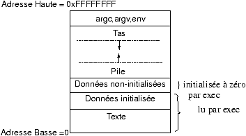
Figure 7.2 : La structure interne des processus.
7.4 zone u et table des processus
Tous les processus sont associés à une entrée dans la table des processus
qui est interne au noyau. De plus, le noyau alloue pour chaque processus une
structure appelée zone u , qui contient des données privées du processus,
uniquement manipulables par le noyau.
processus!zone u
processus!table des processus
processus!table des régions par processus
La table des processus nous permet d'accéder à la table des régions par processus qui permet d'accéder à la
table des régions. Ce double niveau d'indirection permet de
faire partager des régions.
Dans l'organisation avec une mémoire virtuelle, la table des
régions est matérialisée logiquement dans la table de pages.
Les structures de régions de la table des régions contiennent des informations sur le type, les droits d'accès et la localisation (adresses en mémoire ou adresses sur disque) de la région.
Seule la zone u du processus courant est manipulable par le noyau, les autres sont inaccessibles. L'adresse de la zone u est placée dans le mot d'état du processus.
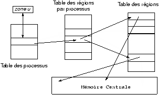
Figure 7.3 : Table des régions, table des régions par processus
7.5 fork et exec (revisités)
Quand un processus réalise un fork, le contenu de l'entrée de la table des régions est dupliqué, chaque région est ensuite, en fonction de son type, partagée ou copiée.
appels systèmes!fork@fork
appels systèmes!exec@exec
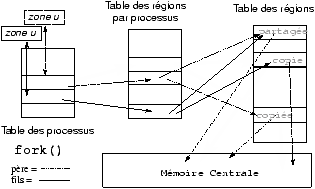
Figure 7.4 : Changement de régions au cours d'un fork.
Quand un processus réalise un exec, il y a libération des régions et réallocation de nouvelles régions en fonction des valeurs définies dans le nouvel exécutable.
Figure 7.5 : Changement de régions au cours d'un exec.
7.6 Le contexte d'un processus
Le contexte d'un processus est l'ensemble des données qui permettent de reprendre l'exécution d'un processus qui a été interrompu.
Le contexte d'un processus est l'ensemble de
-
son état
- son mot d'état : en particulier
processus!mot d'état
-
La valeur des registres actifs
- Le compteur ordinal
- les valeurs des variables globales statiques ou dynamiques
- son entrée dans la table des processus
- sa zone u
- Les piles user et system
- les zones de code et de données.
Le noyau et ses variables ne font partie du contexte d'aucun processus!
L'exécution d'un processus se fait dans son contexte.
Quand il y a changement de processus courant, il y a réalisation d'une commutation de mot d'état et d'un changement de contexte.
processus!commutation de mot d'état
processus!changement de contexte
Le noyau s'exécute alors dans le nouveau contexte.
7.7 Commutation de mot d'état et interruptions.
Ces fonctions de très bas niveau sont fondamentales pour pouvoir programmer un système d'exploitation.
Pour être exécuté et donner naissance à un processus, un programme et ses
données doivent être chargés en mémoire centrale.
Les instructions du programme sont transférées une à une de la mémoire centrale sur l'unité centrale où elles sont exécutées.
L'unité centrale :
Elle comprend des circuits logiques et arithmétiques qui effectuent les instructions mais aussi des mémoires appelées registres.
Certains de ces registres sont spécialisés directement par les constructeurs de l'unité centrale, d'autres le sont par le programmeur du noyau.
Quelques registres spécialisés :
-
L'accumulateur
- qui reçoit le résultat d'une instruction; sur les machines à registres multiples, le jeu d'instructions permet souvent d'utiliser n'importe lequel des registres comme accumulateur.
processus!accumulateur
- le registre d'instruction
- (qui contient l'instruction en cours)
- le compteur ordinal
- (adresse de l'instruction en mémoire)
processus!compteur ordinal
Ce compteur change au cours de la réalisation d'une instruction pour pointer sur la prochaine instruction à exécuter, la majorité des instructions ne font qu'incrémenter ce compteur, les instructions de branchement réalisent des opérations plus complexes sur ce compteur: affectation, incrémentation ou décrémentation plus importantes.
- le registre d'adresse
-
- les registres de données
- qui sont utilisés pour lire ou écrire une donnée à une adresse spécifiée en mémoire.
- les registres d'état
- du processeur : (actif, mode (user/system), retenue, vecteur d'interruptions, etc)
- les registres d'état du processus
- droits, adresses, priorités, etc
Ces registres forment le contexte d'unité centrale d'un processus.
processus!context
A tout moment, un processus est caractérisé par ces deux
contextes : le contexte d'unité centrale qui est composé des
mêmes données pour tous les processus et le contexte qui
dépend du code du programme exécuté. Pour pouvoir
exécuter un nouveau processus, il faut pouvoir sauvegarder
le contexte d'unité centrale du processus courant (mot
d'état), puis charger le nouveau mot d'état du processus à
exécuter. Cette opération délicate réalisée de
façon matérielle est appelée commutation de mot
d'état. Elle doit se faire de façon non interruptible !
processus!commutation de mot d'état
Cette "Super instruction" utilise 2 adresses qui sont respectivement :
l'adresse de sauvegarde du mot d'état
l'adresse de lecture du nouveau mot d'état
Le compteur ordinal faisant partie du mot d'état, ce changement
provoque l'exécution dans le nouveau processus.
C'est le nouveau processus qui devra réaliser la sauvegarde du
contexte global. En général c'est le noyau qui réalise cette sauvegarde,
le noyau n'ayant pas un contexte du même type.
Le processus interrompu pourra ainsi reprendre exactement où il avait abandonné.
Les fonctions setjmp/longjmp permettent de sauvegarder et de réinitialiser le contexte d'unité central du processus courant, en particulier le pointeur de pile.
7.8 Les interruptions
Une interruption est une commutation de mot d'état
provoquée par un signal produit par le matériel.
Ce signal étant la conséquence d'un événement extérieur ou intérieur, il modifie l'état d'un indicateur qui est régulièrement testé par l'unité centrale.
Une fois que le signal est détecté, il faut déterminer la cause de l'interruption. Pour cela on utilise un indicateur, pour les différentes causes, On parle alors du vecteur d'interruptions.
interruption
Trois grands types d'interruptions :
-
externes (indépendantes du processus) interventions de l'opérateur, pannes,etc
- déroutements erreur interne du processeur,
débordement, division par zéro, page fault etc (causes
qui entraine la réalisation d'une sauvegarde sur disque de
l'image mémoire "core dumped" en général)
- appels systèmes demande d'entrée-sortie par exemple.
Suivant les machines et les systèmes un nombre variable de niveaux d'interruption est utilisé.
Figure 7.6 : Sous UNIX, on trouvera en général 6 niveaux d'interruption
processus!niveau d'interruption
Ces différentes interruptions ne réalisent pas nécessairement un changement de contexte complet du processus courant.
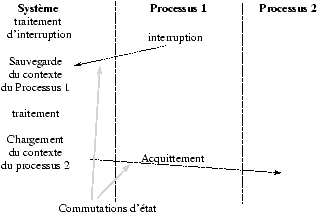
Figure 7.7 : Le traitement d'une interruption.
Il est possible que plusieurs niveaux d'interruption soient positionnés quand le système les consulte. C'est le niveau des différentes interruptions qui va permettre au système de sélectionner l'interruption à traiter en priorité.
L'horloge est l'interruption la plus prioritaire sur un système Unix.
7.9 Le problème des cascades d'interruptions
Si pendant le traitement d'une interruption, une autre interruption se produit, et que ceci se répète pendant le traitement de la nouvelle interruption, le système ne fait plus progresser les processus ni les interruptions en cours de traitement ...
Il est donc nécessaire de pouvoir retarder ou annuler la prise en compte d'un ou plusieurs signaux d'interruptions.
C'est le rôle des deux mécanismes de masquage et de désarmement d'un niveau d'interruption.
masquer
Masquer, c'est ignorer temporairement un niveau d'interruption.
Si ce masquage est fait dans le mot d'état d'un traitement d'interruption, à la nouvelle commutation d'état, le masquage disparaît; les interruptions peuvent de nouveau être prises en compte.
désarmer
Désarmer, c'est rendre le positionnement de l'interruption caduque. (Il est clair que ceci ne peut s'appliquer aux déroutements).
7.9.1 Etats et transitions d'un processus
processus!états
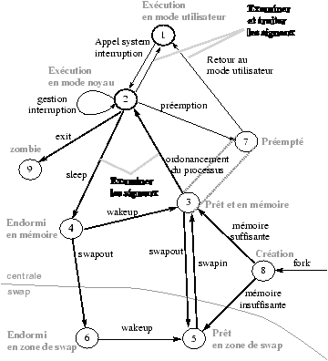
Figure 7.8 : Diagramme d'état des processus
Nous nous plaçons dans le cas d'un système qui utilise un mécanisme de swap pour gérer la mémoire; nous étudierons ensuite le cas des systèmes de gestion paginée de la mémoire (les couples d'états 3,5 et 4,6 y sont fusionnés).
7.9.2 Listes des états d'un processus
processus!mode d'un
-
le processus s'exécute en mode utilisateur
- le processus s'exécute en mode noyau
- le processus ne s'exécute pas mais est éligible (prêt à s'exécuter)
- le processus est endormi en mémoire centrale
- le processus est prêt mais le swappeur doit le transférer en mémoire centrale pour le rendre éligible. (ce mode est différent dans un système à pagination).
- le processus est endormi en zone de swap (sur disque par exemple).
- le processus passe du mode noyau au mode utilisateur mais est
préempté2 et a effectué un changement de contexte pour élire un autre processus.
- naissance d'un processus, ce processus n'est pas encore prêt et n'est pas endormi, c'est l'état initial de tous processus sauf le swappeur.
- zombie le processus vient de réaliser un exit, il
apparaît uniquement dans la table des processus où il
est conservé le temps pour son processus père de
récupèrer le code de retour et d'autres informations de
gestion (coût de l'exécution sous forme de temps, et
d'utilisation des ressources ).
L'état zombie est l'état final des processus, les processus restent dans cet état jusqu'à ce que leur père lise leur valeur de retour (exit status).
7.10 Lecture du diagramme d'état.
Le diagramme des transitions d'état permet de décrire l'ensemble des états possibles d'un processus. Il est clair que tout processus ne passera pas nécessairement par tous ces différents états.
La naissance d'un processus a lieu dans l'état 8 après l'appel système fork exécuté par un autre processus.
Il devient au bout d'un certain temps "prêt à s'exécuter".
Il passe alors dans l'état "exécuté en mode noyau" où il termine sa partie de l'appel système fork. Puis le processus termine l'appel système et passe dans l'état "exécuté en mode utilisateur".
appels systèmes!fork@fork
Passé une certaine période de temps (variable d'un système à l'autre), l'horloge peut interrompre le processeur. Le processus rentre alors en mode noyau, l'interruption est alors réalisée avec le processus en mode noyau.
Au retour de l'interruption, le processus peut être préempté (étant resté tout son quantum de temps sur le cpu), c'est à dire, il reste prêt à s'exécuter mais un autre processus est élu.
Cet état 7 est logiquement équivalent à l'état 3, mais il existe pour matérialiser le fait qu'un processus ne peut être préempté qu'au moment où il retourne du mode noyau au mode utilisateur.
Quand un processus préempté est réélu, il retourne directement en mode utilisateur.
Un appel système ne peut être préempté. On peut détecter en pratique cette règle, en effet on constate un ralentissement du débit de la machine pendant la réalisation d'un core de grande taille.
Quand un processus exécute un appel système, il passe du mode utilisateur au mode système.
Supposons que l'appel système réalise une entrée-sortie sur le disque et que le processus doive attendre la fin de l'entrée-sortie.
Le processus est mis en sommeil (sleep) et passe dans l'état endormi en mémoire.
Quand l'entrée-sortie se termine, une interruption a lieu, le traitement de l'interruption consistant à faire passer le processus dans le mode prêt à s'exécuter (en mémoire).
7.11 Un exemple d'exécution
Plaçons-nous dans la situation suivante :
l'ensemble de la mémoire est occupé par des processus, mais, le processus le plus prioritaire est un processus dans l'état 5, soit : "prêt à s'exécuter en zone de swap".
Pour pouvoir exécuter ce processus, il faut le placer dans l'état 3, soit : "prêt à s'exécuter en mémoire". Pour cela le système doit libérer de la mémoire (faire de la place), en faisant passer des processus des états 3 ou 4 en zone de swap (swapout) donc les faire passer dans les états 5 et 6.
C'est au swappeur de réaliser les deux opérations :
-
Sélectionner une victime (le processus le plus approprié),
pour un transfert hors mémoire centrale (swapout).
- réaliser ce transfert.
- une fois qu'une place suffisante est libérée, le processus qui a provoqué le swapout est chargé en mémoire (swapin).
processus!swapin
processus!swapout
Le processus a un contrôle sur un nombre réduit de
transitions : il peut faire un appel système, réaliser un exit, réaliser un sleep, les autres transitions lui sont dictées par les circonstances.
appels systèmes!sleep@sleep
L'appel à exit() fait passer dans l'état zombie, il est possible de passer à l'état zombie sans que le processus ait explicitement appelé exit() (à la réception de certains signaux par exemple).
appels systèmes!exit@exit
Toutes les autres transitions d'état sont sélectionnées et
réalisées par le noyau selon des règles bien
précises. Une de ces règles est par exemple qu'un processus en
mode noyau ne peut être préempté3. Certaines de ces règles sont définies par l'algorithme d'ordonnancement utilisé.
7.12 La table des processus
La table des processus est dans la mémoire du noyau. C'est un tableau de structure proc (<sys/proc.h>). Cette structure contient les informations qui doivent toujours être accessibles par le noyau.
-
processus!états
état
- se reporter au diagramme, ce champ permet au noyau de prendre des décisions sur les changements d'état à effectuer sur le processus.
- adresse de la zone u
-
- adresses
- taille et localisation en mémoire (centrale, secondaire). Ces informations permettent de transférer un processus en ou hors mémoire centrale.
- UID
- propriétaire du processus, permet de savoir si le processus est autorisé à envoyer des signaux et à qui il peut les envoyer.
- PID,PPID
- l'identificateur du processus et de son père. Ces deux valeurs sont initialisées dans l'état 8, création pendant l'appel système fork.
- évènement
- un descripteur de l'évènement attendu quand le processus est dans un mode endormi.
- Priorités
- Plusieurs paramètres sont utilisés par l'ordonnanceur pour sélectionner l'élu parmi les processus prêts.
- vecteur d'interruption du processus
- ensemble des signaux reçus par le processus mais pas encore traités.
- divers
- des compteurs utilisés pour la comptabilité (pour faire payer le temps CPU utilisé) et que l'on peut manipuler par la commande alarm, des données utilisées par l'implémentation effective du système, etc.
7.13 La zone u
processus!zone u|(
La zone u de type struct user définie dans <sys/user.h> est la zone utilisée quand un processus s'exécute que ce soit en mode noyau ou mode utilisateur.
Une unique zone u est accessible à la fois : celle de l'unique processus en cours d'exécution (dans un des états 1 ou 2).
Contenu de la zone u :
-
pointeur
- sur la structure de processus de la table des processus.
- uid réel et effectif
- de l'utilisateur qui détermine les divers privilèges donnés au processus, tels que les droits d'accès à un fichier, les changements de priorité, etc.
- Compteurs des temps
- (users et system) consommés par le processus
- Masque de signaux
- Sur système V sous BSD dans la structure proc
- Terminal
- terminal de contrôle du processus si celui-ci existe.
- erreur
- stockage de la dernière erreur rencontrée pendant un appel système.
- retour
- stockage de valeur de retour du dernier appel système.
- E/S
- les structures associées aux entrées-sorties, les paramètres utilisés par la bibliothèque standard, adresses des buffers, tailles et adresses de zones à copier, etc.
- "." et "/"
- le répertoire courant et la racine courante (c.f. chroot())
- la table des descripteurs
- position variable d'un implémentation à l'autre.
- limites
- de la taille des fichiers de la mémoire utilisable etc ¼(c.f. ulimit en Bourne shell et limit en Csh ).
- umask
- masque de création de fichiers.
processus!zone u|)
7.14 Accès aux structures proc et user du processus courant
Les informations de la table des processus peuvent être lues grâce à la commande shell ps. Ou par des appels système.
Par contre, les informations contenues dans la zone u ne sont accessibles que par une réponse du processus lui-même (en progammation objet, on dit que ce sont des variables d'instances privées), d'où les appels système suivants :
times, chroot, chdir, fchdir, getuid, getgid, ..., setuid, ..., ulimit, nice, brk, sbrk.
Qui permettent de lire ou de changer le contenu des deux structures.
7.14.1 Les informations temporelles.
#include <sys/times.h>
clock_t times(struct tms *buffer);
appels systèmes!times@times
times remplit la structure pointée par buffer avec des
informations sur le temps machine utilisé dans les état 1 et 2.
La structure :
struct tms {
clock_t tms_utime; /* user time */
clock_t tms_stime; /* system time */
clock_t tms_cutime; /* user time, children */
clock_t tms_cstime; /* system time, children */
};
contient des temps indiqués en microsecondes 10-6 secondes, la précision de l'horloge est par defaut sur les HP9000 700/800 de 10 microsecondes.
7.14.2 Changement du répertoire racine pour un processus.
#include <unistd.h>
int chroot(const char *path);
appels systèmes!chroot@chroot
permet de définir un nouveau point de départ pour les
références absolues (commençant par /).
La référence .. de ce répertoire racine est associée à
lui-même, il n'est donc pas possible de sortir du sous-arbre
défini par chroot. Cet appel est utilisé pour rsh et ftp, et
les comptes pour invités.
Les appels suivants permettent de changer le répertoire de travail de
référence ``.'' et donc l'interprétation des références relatives :
int chdir(char *ref);
int fchdir(int descripteur);
appels systèmes!chdir@chdir
appels systèmes!fchdir@fchdir
7.14.3 Récupération du PID d'un processus
#include <unistd.h>
pid_t getpid(void);
pid_t getpgrp(void);
pid_t getppid(void);
pid_t getpgrp2(pid_t pid);
appels systèmes!getpgrp2@getpgrp2
appels systèmes!getppid@getppid
appels systèmes!getpgrp@getpgrp
appels systèmes!getpid@getpid
L'appel getpid() retourne le PID du processus
courant, getppid le PID du processus père, getpgrp le
PID du groupe du processus courant, getpgrp2 le PID du groupe du processus pid (si pid=0 alors équivalent à getpgrp).
7.14.4 Positionement de l'euid, ruid et suid
L'uid d'un processus est l'identification de l'utilisateur exécutant le processus. Le système utilise trois uid qui sont :
-
euid
- uid effective utilisé pour les tests d'accès.
- ruid
- uid réelle, uid à qui est facturé le temps de calcul.
- suid
- uid sauvegardée, pour pouvoir revenir en arrière après un setuid.
#include <unistd.h>
int setuid(uid_t uid);
int setgid(gid_t gid);
appels systèmes!setgid@setgid
appels systèmes!setuid@setuid
Fonctionnement :
si euid == 0 (euid de root) les trois uid sont positionnés à la valeur de uid
sinon si uid est égal à ruid ou suid alors euid devient uid. ruid et suid ne changent pas.
sinon rien! pas de changements.
Syntaxe identique pour setgid et gid.
La commande setreuid() permet de changer le propiétaire réel du processus, elle est utilisé pendant le login, seul le super utilisateur peut l'exécuter avec succès.
7.15 Tailles limites d'un processus
#include <ulimit.h>
long ulimit(int cmd,...);
appels systèmes!ulimit@ulimit
La commande cmd est
-
UL_GETFSIZE
- retourne le taille maximum des fichiers en blocs.
- UL_SETFSIZE
- positionne cette valeur avec le deuxième argument.
- UL_GETMAXBRK
- valeur maximale pour l'appel d'allocation dynamique de mémoire : brk.
Ces valeurs sont héritées du processus père.
La valeur FSIZE (taille maximum des fichiers sur disques en blocs) peut être changée en ksh avec ulimit [n].
7.15.1 Manipulation de la taille d'un processus.
#include <unistd.h>
int brk(const void *endds);
void *sbrk(int incr);
appels systèmes!brk@brk
appels systèmes!sbrk@sbrk
Les deux appels permettent de changer la taille du processus.
L'adresse manipulée par les deux appels est la première adresse qui est en dehors du processus.
Ainsi on réalise des augmentations de la taille du processus avec des appels à sbrk et on utilise les adresses retournées par sbrk pour les appels à brk pour réduire la taille du processus.
On utilisera de préférence pour les appels à sbrk des valeurs de incr qui sont des multiples de la taille de page. Le système réalisant des déplacement du point de rupture par nombre entier de pages (ce qui est logique dans un système de mémoire paginé).
A ne pas utiliser en conjonction avec les fonctions d'allocation standard malloc, calloc, realloc, free.
7.15.2 Manipulation de la valeur nice
Permet de changer la valeur de nice utilisée par le processus. Si l'on
a des droits privilégiés la valeur peut être négative. La valeur de
nice est toujours comprise entre 0 et 39.
#include <unistd.h>
int nice(int valeur);
appels systèmes!nice@nice
La commande shell renice permet de changer le nice d'un
processus actif.
7.15.3 Manipulation de la valeur umask
L'appel umask permet de spécifier quels droits doivent être
interdits en cas de création de fichier. cf. 6.1
#include <sys/stat.h>
mode_t umask(mode_t mask);
appels systèmes!umask@umask
la valeur retournée est l'ancienne valeur.
7.16 L'appel système fork
l'appel système fork permet le création d'un processus clône du processus courrant.
pid_t fork(void);
appels systèmes!fork@fork
DEUX valeurs de retour en cas de succès :
-
Dans le processus père valeur de retour = le PID du fils,
- Dans le processus fils valeur de retour = zéro.
Sinon
-
Dans le processus père valeur de retour = -1.
Les PID et PPID sont les seules informations différentes entre les deux processus.
7.17 L'appel système exec
#include <unistd.h>
extern char **environ;
int execl( const char *path, const char *arg0, ...,NULL);
int execv(const char *path, char * const argv[]);
int execle( const char *path, const char *arg0, ...,NULL, char * const envp[]);
int execve(const char *file, char * const argv[], char * const envp[]);
int execlp( const char *file,const char *arg0, ... , NULL );
int execvp(const char *file, char * const argv[]);
appels systèmes!execv@execv
appels systèmes!execvp@execvp
appels systèmes!execlp@execlp
appels systèmes!execve@execve
appels systèmes!execle@execle
Informations conservées par le processus : PID PPID PGID ruid
suid (pour l'euid cf le setuidbit de chmod ), nice,
groupe d'accès, catalogue courant, catalogue ``/'', terminal de
contrôle, utilisation et limites des ressources
(temps machine, mémoire, etc), umask, masques des signaux, signaux en
attente, table des descripteurs de fichiers, verrous, session.
Quand le processus exécute dans le nouvel exécutable la fonction :
main(int argc, char **argv,char **envp)
argv et env sont ceux qui ont été utilisés
dans l'appel de execve.
appels systèmes!execve@execve
Les différents noms des fonction exec sont des mnémoniques :
-
l
- liste d'arguments
- v
- arguments sont forme d'un vecteur.
- p
- recherche du fichier avec la variable d'environnement PATH.
- e
- transmission d'un environnement en dernier paramètre, en remplacement de l'environnement courant.
- 1
- swappeur,gestionnaire de pages
- 2
- Bien que le processus soit prêt, il est
retiré de l'unité de traitement pour que les autres processus
puissent avancer.
- 3
- Exercice : Donner un
exemple.
Chapitre 8 L'ordonnancement des processus
ordonnancement
La sélection dans le temps des processus pouvant accèder à une
ressource est un problème dit d'ordonnancement. Nous présentons ici :
-
le cas général
- les besoins et les problèmes
et nous décrirons des solutions que l'on trouve sous UNIX pour
différents problèmes d'ordonnancement.
Les algorithmes d'ordonnancement réalisent la sélection parmi les processus actifs de celui qui va obtenir l'utilisation d'une ressource, que ce soit l'unité centrale, ou bien un périphérique d'entrée-sortie.
Pour l'unité centrale notre but est de maximiser débit et taux
utile de l'unité centrale :
-
le débit
- est le nombre moyen de processus exécutés en un temps donné.
- le taux utile
- est la proportion de temps réellement utilisée pour exécuter des processus utilisateurs.
Un exemple :
Soient 2 processus A et B de même comportement
30 périodes de deux seconde :
1 seconde d'activité
1 seconde d'inactivité
AIAIAIAIAIAIAIAIAIAIAIAIAIAIAIAIAIAIAI
Si l'on exécute les deux processus consécutivement on obtient un débit de 1 processus par minute, et un taux utile de 50%.
Si l'on entrelace les périodes actives et inactives des deux processus on obtient un débit de 2 processus par minute et un taux d'utilisation de 100%.
Pour une autre ressource d'autres critères seront utilisés.
8.1 Le partage de l'unité centrale
Ce partage doit être fait non seulement entre les processus
utilisateurs mais aussi entre les différentes tâches du
système, scheduler, entrées-sorties, gestion des
interruptions, etc.
Nous demandons de plus à l'algorithme d'ordonnancement de nous assurer l'exclusion mutuelle et l'absence de famine, qui sont les points-clefs de la plupart des problèmes d'ordonnancement.
exclusion mutuellefamine
L'invention d'un algorithme d'ordonnancement se base en générale sur
des remarques statistique sur le comportement des processus :
-
Le couple UC/ES (cpu/io), les processus ont tendance à basculer constamment entre des phases d'entrées-sorties et des phases de calcul sur l'unité centrale.
- Les processus consommant de longues périodes d'U.C. sont
proportionnellement rares.
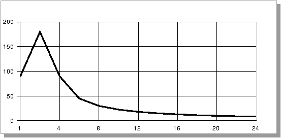
Figure 8.1 : Histogramme de répartition de la durée de la période d'utilisation de l'unité centrale
8.1.1 Famine
Notre première tâche est d'affecter une ressource (l'UC par exemple) à un unique processus à la fois (exclusion mutuelle) et s'assurer de l'absence de famine.
famine : un processus peut se voir refuser l'accès à une ressource pendant un temps indéterminé, il est dit alors que le processus est en famine.
Un système qui ne crée pas de cas de famine : fournira toujours la ressource demandée par un processus, au bout d'un temps fini.
Si on prend le cas des périphériques (tels que les disques) l'ordonnancement peut se faire de façon simple avec par exemple une file d'attente (FIFO).
Pour l'unité centrale on va devoir utiliser des structures de données plus complexes car nous allons avoir besoin de gérer des priorités. C'est par exemple, autoriser l'existence de processus qui évitent la file d'attente.
La structure de données utilisée peut parfaitement être une file, une liste, un arbre ou un tas, ceci en fonction de l'élément-clef de notre algorithme de sélection (âge, priorité simple, priorité à plusieurs niveaux, etc).
Cette structure de données doit nous permettre d'accéder à tous les processus prêts (éligibles).
8.1.2 Stratégie globale
On peut représenter l'ordonnancement global avec le schéma 8.2
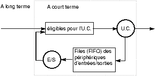
Figure 8.2 : Stratégie globale d'ordonnancement.
Les ordonnancements à court terme doivent être très
rapides, en effet le processus élu ne va utiliser l'unité
centrale que pendant un très court laps de temps (
10 milli-secondes par exemple). Si on utilise trop de temps (1
milli-seconde) pour sélectionner cet élu, le taux utile décroît très rapidement (ici on perd 9% du temps d'unité centrale).
Par contre l'ordonnancement à long terme peut être plus long
car il a lieu moins souvent (toutes les secondes par exemple).
La conception de l'ordonnanceur à long terme est faite dans l'optique d'obtenir un ordonnanceur à court terme rapide.
8.1.3 Critères de performance
Les critères de performance des algorithmes d'ordonnancement
-
Taux d'utilisation de l'unité centrale
- Débit
- Temps réel d'exécution
- Temps d'attente
- Temps de réponse
Ces cinq critères sont plus ou moins mutuellement exclusifs.
Les comparaisons des différents algorithmes se fait donc sur une sélection de ces critères.
8.2 Ordonnancement sans préemption.
-
FCFS : First Come First served
Facile à écrire et à comprendre, peu efficace ...FCFS
- SJF : Shortest Job First
le plus petit en premier.
Optimal pour le temps d'attente moyen ...SJF
- A priorité :
L'utilisateur donne des priorités aux différents processus
et ils sont activés en fonction de cette priorité.
problème ¾® famine possible des processus peu prioritaires
Solution ¾® faire augmenter la priorité avec le temps d'attente :
plus un processus attend, plus sa priorité augmente ainsi au bout d'un certain temps le processus devient nécessairement le plus prioritaire.
re-problème ¾® si le processus en question (le
très vieux très gros) est exécuté alors que de
nombreux utilisateurs sont en mode interactif chute catastrophique du
temps de réponse et du débit
solution ¾® préemption.
préemption
La préemption est la possibilité qu'a le système de
reprendre une ressource à un processus sans que celui-ci ait libéré cette ressource.
Ceci est impossible sur bon nombre de ressources. Lesquelles ?
8.3 Les algorithmes préemptifs
FCFS ne peut être préemptif ...
SJF peut être préemptif : si un processus plus court que le processus actif arrive dans la queue, le processus actif est préempté.
Dans des systèmes interactifs en temps partagé un des critères
est le temps de réponse, c'est à dire que chaque utilisateur dispose de l'unité centrale régulièrement. Heureusement, les processus interactifs utilisent l'UC pendant de très courts intervalles à chaque fois.
8.3.1 Round Robin (tourniquet)
Round Robin
Cet algorithme est spécialement adapté aux systèmes en temps partagé.
On définit un quantum de temps (time quantum) d'utilisation de l'unité centrale.
La file d'attente des processus éligibles est vue comme une queue circulaire (fifo circulaire).
Tout nouveau processus est placé à la fin de la liste.
De deux choses l'une, soit le processus actif rend l'Unité Centrale avant la fin de sa tranche de temps (pour cause d'entrée/sortie) soit il est préempté, et dans les deux cas placé en fin de liste.
Un processus obtiendra le processeur au bout de (n -1)*q secondes au plus (n nombre de processus et q longueur du quantum de temps), la famine est donc assurément évitée.
Remarquons que si le quantum de temps est trop grand, round-robin devient équivalent à FCFS. De l'autre coté si le quantum de temps est très court, nous avons théoriquement un processeur n fois moins rapide pour chaque processus (n nombre de processus).
Malheureusement si le quantum de temps est court, le nombre de changements de contexte dûs à la préemption grandit, d'où une diminution du taux utile, d'où un processeur virtuel très lent.
Une règle empirique est d'utiliser un quantum de temps tel que 80% des processus interrompent naturellement leur utilisation de l'unité centrale avant l'expiration du quantum de temps.
8.3.2 Les algorithmes à queues multiples
Nous supposons que nous avons un moyen de différencier facilement
les processus en plusieurs classes de priorité différentes
(c'est le cas sous UNIX où nous allons différencier les tâches
système, comme le swappeur, des autres tâches).
Pour sélectionner un processus, le scheduler parcourt
successivement les queues dans l'ordre décroissant des
priorités.
Un exemple de queues organisées en fonction du contenu des processus :
-
les processus systèmes
- les processus interactifs
- les processus édition
- les processus gros calcul
- les processus des étudiants
pour qu'un processus étudiant soit exécuté il faut que toutes les autres files d'attente soient vides ...
Une autre possibilité est de partager les quantums de temps sur les différentes queues.
Il est aussi possible de réaliser différents algorithmes de
scheduling sur les différentes queues :
-
Round Robin sur les processus interactifs
- FCFS sur les gros calculs en tâche de fond.
8.4 Multi-level-feedback round robin Queues
Le système d'ordonnancement des processus sous UNIX (BSD 4.3 et
system V4) utilise plusieurs files d'attente qui vont
matérialiser des niveaux de priorité différents et à
l'intérieur de ces différents niveaux de priorité, un
système de tourniquet.
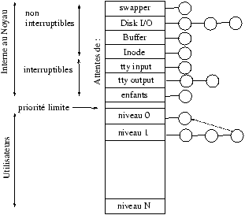
Figure 8.3 : Les queues multiples en tourniquet
8.4.1 Les niveaux de priorité
Le scheduler parcourt les listes une par une de haut en bas jusqu'à trouver une liste contenant un processus éligible.
Ainsi tant qu'il y a des processus de catégorie supérieure à exécuter les autres processus sont en attente de l'unité centrale.
Dans les listes internes au noyau, de simples files d'attente sont utilisées avec la possibilité de doubler les processus endormis de la même liste (en effet seul le processus réveillé par la fin de son entrée/sortie est éligible).
Pour les processus utilisateurs, la même règle est utilisée mais avec préemption et la règle du tourniquet.
C'est à dire, on calcul une priorité de base qui est utilisée pour placer le processus dans la bonne file d'attente.
Un processus qui utilise l'unité centrale voit augmenter sa priorité.
Un processus qui libère l'unité centrale pour demander une entrée/sortie ne voit pas sa priorité changer.
Un processus qui utilise tout sont quantum de temps est préempté et placé dans une nouvelle file d'attente.
Attention : plus la priorité est grande moins le processus est prioritaire.
priorité
8.4.2 Evolution de la priorité
Regardons la priorité et l'évolution de la priorité d'un processus utilisateur au cours du temps. Les fonctions suivantes sont utilisées dans une implémentation BSD.
Pour calculer la priorité d'un processus utilisateur, le scheduler utilise l'équation suivante qui est calculée tous les 4 clicks horloge (valeur pratique empirique) :
cette valeur est tronquée à l'intervalle PUSER..127.
En fonction de cette valeur le processus est placé dans une des
listes correspondant à son niveau courant de priorité.
Ceci nous donne une priorité qui diminue linéairement en fonction de l'utilisation de l'unité centrale (il advient donc un moment où le processus devient le processus le plus prioritaire!).
P nice est une valeur spécifiée par le programmeur grâce à l'appel système nice. Elle varie entre -20 et +20 et seul le super utilisateur peut spécifier une valeur négative.
P cpu donne une estimation du temps passé par un processus sur l'unité centrale. A chaque click d'horloge, la variable p_cpu du processus actif est incrémentée.
Ce qui permet de matérialiser la consommation d'unité central du processus.
Pour que cette valeur ne devienne pas trop pénalisante sur le long terme (comme pour un shell) elle est atténuée toute les secondes grâce à la formule suivante :
la valeur de load (la charge) est calculée sur une moyenne du nombre de processus actifs pendant une minute.
Pour ne pas utiliser trop de ressources, les processus qui sont en sommeil (sleep)
voient leur P cpu recalculé uniquement à la fin de leur période de sommeil grâce à la formule :
la variable sleep_time étant initialisée à zéro puis incrémentée une fois par seconde.
load
8.4.3 Les classes de priorité
La priorité des processus en mode système dépend de
l'action à réaliser.
PSWAP 0 priorité en cours de swap
PINOD 10 priorité en attendant une lecture d'information sur le système de fichiers
PRIBIO 20 priorité en attente d'une lecture/écriture sur disque
PZERO 25 priorité limite
PWAIT 30 priorité d'attente de base
PLOCK 35 priorité d'attente sur un verrou
PSLEP 40 priorité d'attente d'un évènement
PUSER 50 priorité de base pour les processus en mode utilisateur
Le choix de l'ordre de ces priorités est très important, en effet un mauvais choix peut entraîner une diminution importante des performances du système.
Il vaut mieux que les processus en attente d'un disque soient plus
prioritaires que les processus en attente d'un buffer, car les premiers
risquent fort de libérer un buffer après leur accès disque
(de plus il est possible que ce soit exactement le buffer attendu par
le deuxième processus). Si la priorité était inverse, il
deviendrait possible d'avoir un interblocage ou une attente très
longue si le système est bloqué par ailleurs.
De la même façons, le swappeur doit être le plus prioritaire et non interruptible ¾® Si un processus est plus prioritaire que le swappeur et qu'il doit être swappé en mémoire ...
En Demand-Paging le swappeur est aussi le processus qui réalise les chargements de page, ce processus doit être le plus prioritaire.
Demand-Paging
Chapitre 9 La mémoire
9.0.4 les mémoires
La mémoire d'un ordinateur se décompose en plusieurs éléments, dont le
prix et le temps d'accès sont très variables, cf figure
9.1. Nous développerons dans ce chapitre et le suivant
les questions et solutions relatives à la mémoire centrale.
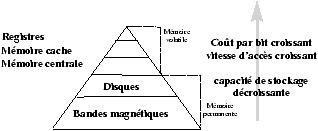
Figure 9.1 : Hiérarchie de mémoires
L'importance de la gestion de la mémoire centrale vient de son
coût et du coût relatif des autres formes de stockage, la figure
9.2 donne une idée des caractéristiques relatives
des différents types de stockage.
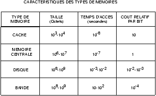
Figure 9.2 : Caractéristiques relatives des mémoires.
9.0.5 La mémoire centrale
La mémoire est un tableau à une dimension de mots machines (ou d'octets), chacun ayant une adresse propre. Les échanges avec l'extérieur se font en général par des lectures ou des écritures à des adresses spécifiques.
Le système Unix est multi-tâche,ceci pour maximiser l'utilisation du cpu. Cette technique pose comme condition obligatoire que la mémoire centrale soit utilisée et/ou partagée entre les différentes tâches.
Les solutions de gestion de la mémoire sont très dépendantes du matériel et ont mis longtemps à évoluer vers les solutions actuelles. Nous allons voir plusieurs approches qui peuvent servir dans des situations particulières .
La mémoire est le point central dans un système d'exploitation, c'est à travers elle que l'unité centrale communique avec l'extérieur.
9.1 Allocation contiguë
Allocation contiguë
9.1.1 Pas de gestion de la mémoire
Figure 9.3 : Une mémoire de 64 Kilo Octets.
Pas de gestion de la mémoire ! Cette méthode, qui a l'avantage de la simplicité et de la rapidité, permet toute liberté quand à l'utilisation de la mémoire. En effet, toute adresse est accessible, et peut être utilisée pour n'importe quelle tâche.
Le désavantage : aucune fonctionnalité, tout doit être reprogrammé, typiquement il n'y pas de système d'exploitation !
9.1.2 Le moniteur résidant
On cherche à protéger le noyau des interférences possibles de la part des utilisateurs. Pour cela, toute adresse d'instruction ou de donnée manipulée par un programme utilisateur est comparée à un registre barrière (fence register).
Tant que l'adresse est supérieure à la barrière, l'adresse est légale, sinon l'adresse est une référence illégale au moniteur et une interruption est émise (invalid adress).
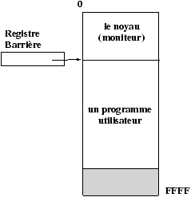
Figure 9.4 : Protection du moniteur par un registre barrière.
Cette méthode demande que pour tout accès à la mémoire une vérification de la validité de l'adresse soit réalisée. Ceci ralentit toute exécution d'un accès mémoire. (Paterson donne comme exemple de ralentissement des temps de 980 nanosecondes sans vérification et 995 nanosecondes avec vérification). Globalement ce temps supplémentaire peut être oublié.
9.1.3 Le registre barrière
registre barrière
L'implémentation d'un tel mécanisme doit être réalisée de façon matérielle.
La valeur du registre barrière est parfois réalisée de façon fixe sur une machine, ce qui pose des problèmes dès que l'on veut changer le noyau et/ou protéger plus de mémoire (voir DOS).
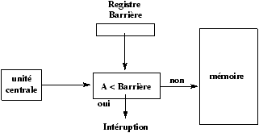
Figure 9.5 : Implémentation du registre Barrière.
9.1.4 Le registre base
registre base
Le mécanisme suivant est une notion plus utile et plus ergonomique pour décrire la zone d'adressage d'un programme, et utile pour résoudre le problème de déplacement des programmes en mémoire (relocation).
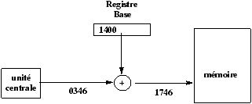
Figure 9.6 : Implémentation du registre de Base.
En effet, du fait que l'on utilise un registre barrière, les adresses utilisables de la mémoire ne commencent plus à 0000, alors que l'utilisateur veut continuer à utiliser des adresses logiques qui commencent à 0000.
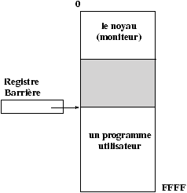
Figure 9.7 : Positionnement d'un processus par un registre de Base.
Pour continuer à fournir cette possibilité le registre barrière est transformé en registre de base (relocation) . A chaque utilisation d'une adresse logique du programme, on ajoute à cette adresse la valeur du registre de base pour trouver l'adresse physique. L'utilisateur ne connaît plus les adresses physiques. Il travaille uniquement avec des adresses logiques (xdb).
Le moniteur a évidemment une valeur nulle pour son registre de base et donc peut adresser toute la mémoire. Le changement de la valeur du registre de base se fait de façon protégée en mode moniteur.
Ces deux systèmes de protection de la mémoire sont clairement mono-processus. Seul le moniteur peut être protégé par ces mécanismes, il n'est pas possible de protéger les processus entre eux.
9.1.5 Le swap
swap
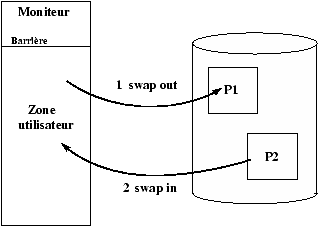
Figure 9.8 : Un système de swap utilisant uniquement un registre barrière.
Il est possible avec les registres barrière ou les registres de base d'écrire des systèmes temps partagé, en utilisant le mécanisme de swap (échange).
Swapper, c'est échanger le contenu de la mémoire centrale avec le contenu d'une mémoire secondaire. Par extension swapper devient l'action de déplacer une zone mémoire de la mémoire vers le support de swap (en général un disque) ou réciproquement du périphérique de swap vers la mémoire.
Le système va réaliser cet échange à chaque changement de contexte.
Les systèmes de swap utilisent une mémoire secondaire qui est en général un disque mais on peut utiliser d'autre supports secondaires plus lents ou plus rapides comme des bandes ou mémoires secondaires (non accessibles par l'unité de traitement).
9.1.6 Le coût du swap
Sur un tel système, le temps de commutation de tâches est très important. Il est donc nécessaire que chaque processus reste possesseur de l'unité de traitement un temps suffisamment long pour que le ralentissement dû au swap ne soit pas trop sensible.
Que ce passe-t-il sinon ? Le système utilise la majeure partie de ses ressources à déplacer des processus en et hors mémoire centrale. L'unité de traitement n'est plus utilisée au maximum ...
9.1.7 Utilisation de la taille des processus
Pour améliorer les mécanismes de swap, on remarque que le temps de swap est proportionnel à la taille des données à déplacer. Pour améliorer les performances, il faut donc introduire la notion de taille effective d'un processus, ce qui permet d'améliorer le débit mais cela impose que toutes les augmentations ou réductions de taille d'un processus utilisateur soient réalisée par un appel système (sbrk) afin que le noyau connaisse à tout moment la taille réelle de chaque processus.
9.1.8 Swap et exécutions concurrentes
Une autre approche très efficace est de réaliser le swap
pendant l'exécution d'un autre processus. Mais avec le système
de registres de relocation c'est dangereux. En effet nous ne pouvons
pas assurer qu'un processus utilisateur donné ne va pas écrire dans les adresses réservées à un autre processus.
9.1.9 Contraintes
Le swap introduit d'autres contraintes : un processus doit être en préempté actif pour être swappé, c'est à dire n'être en attente d'aucune entrée-sortie. En effet, si P1 demande une E/S et pendant cette demande il y a échange de P1 et P2, alors la lecture demandée par P1 a lieu dans les données de P2.
9.1.10 Deux solutions existent
Soit ne jamais swapper de processus en attente d'entrées-sorties.
Soit réaliser toutes les entrées-sorties dans des buffers internes au noyau (solution UNIX), ce qui a pour coût une recopie mémoire à mémoire supplémentaire par E/S.
Les transferts entre le noyau et le processus ayant lieu uniquement quand le processus est en mémoire.
9.1.11 Les problèmes de protection
Nous venons d'apercevoir des problèmes de protection entre un processus et le noyau. Si l'on autorise plusieurs processus à résider en mémoire en même temps, il nous faut un mécanisme de protection inter-processus.
Deux méthodes sont couramment utilisées : les extensions du registre barrière et du registre de base (relocation).
9.1.12 Les registres doubles
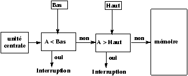
Figure 9.9 : Double registre barrière.
Deux registres Barrière Bas et Haut
Si Adresse < Bas ¾® lever une exception erreur d'adresse
Si Adresse >= Haut ¾® lever une exception erreur d'adresse
Sinon adresse correcte.
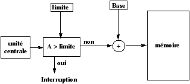
Figure 9.10 : Base et Limite.
Deux registres de relocation Base et Limit, on travaille avec des
adresses logiques Limit donne la valeur maximale d'une adresse logique
et Base donne la position en mémoire de l'adresse logique zéro.
Si Adresse >= Limit ¾® lever une exception erreur d'adresse
sinon utiliser l'adresse physique Adresse+Base.
9.2 Ordonnancement en mémoire des processus
Les choix de l'implémentation des mécanismes d'adressage influence énormément l'ordonnancement des processus.
Nous travaillons dans le cas d'un système de traitement par lots c'est à dire en temps partagé mais les processus restent en mémoire tout le temps de leur exécution. S'il n'y a plus de place le processus est mis en attente (i.e. non chargé en mémoire).
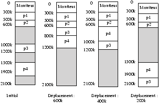
Figure 9.11 : Une situation d'ordonnancement de processus en mémoire.
Nous devons résoudre le problème suivant : il nous faut un algorithme pour choisir dynamiquement, parmi les blocs libres de la mémoire centrale, celui qui va recevoir le nouveau processus (algorithme d'allocation de mémoire à un processus).
On reconnaît en général trois méthodes :
- First-fit
First-fit
- Le premier bloc suffisamment grand pour contenir notre processus est choisi.
- Best-fit
- Le plus petit bloc suffisamment grand pour contenir notre processus est choisi.Best-fit
- Worst-fit
- Le bloc qui nous laisse le plus grand morceau de mémoire libre est choisi (le plus grand bloc).Worst-fit
De nombreuse expériences pratiques et des simulations ont montré que le meilleur est first-fit puis best-fit et que ces deux algorithmes sont beaucoup plus efficaces que worst-fit.
Compactage
On cherche à améliorer ces mécanismes en défragmentant la mémoire c'est à dire en déplaçant les processus en mémoire de façon à rendre contiguës les zones de mémoire libre de façon à pouvoir les utiliser.
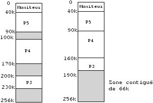
Figure 9.12 : Compactage
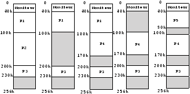
Figure 9.13 : Plusieurs déplacements possibles.
compactage
9.3 Allocation non-contiguë
9.3.1 Les pages et la pagination
pages
Pour accélérer ces mécanismes d'allocation, la notion de page a été introduite.
On va découper la mémoire et les processus en pages. Grâce à ce système, il ne sera plus nécessaire de placer les processus dans une zone contigüe de la mémoire.
Il devient possible d'allouer de la mémoire à un processus sans avoir à réaliser de compactage !
Ce principe des page nécessite de nouvelles possibilités matérielles.
Toute adresse est maintenant considérée comme un couple
(Numéro de page, Position dans la page)
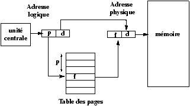
Figure 9.14 : Calcul d'une adresse avec la table des pages
A : adresse logique, P : taille de page
Numéro de page = A div P
Position = A modulo P
9.3.2 Ordonnancement des processus dans une mémoire paginée
Le choix de l'organisation mémoire a une influence prépondérante sur l'ordonnancement des processus, qui devient beaucoup plus indépendant de la mémoire quand celle-ci est paginée.
ordonnancement
Le désavantage de la méthode de gestion de mémoire par un mécanisme de
page est le phénomène de fragmentation interne. On alloue une page entière alors que le processus ne l'utilise qu'en partie. Mais la taille des mémoires et des processus deviennent tels par rapport aux tailles de page que cette perte devient minime.
Un avantage des pages est une plus grande simplicité du partage de la mémoire entre différents processus. En particulier quand plusieurs processus partagent le même code. La page qui contient du code utilisé par les processus sera partageable et protégée en écriture.
Sous Unix le compilateur produit automatiquement des programmes dont la partie code est partageable.
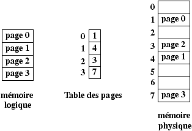
Figure 9.15 : La mémoire logique et la Table des pages.
9.3.3 Comment protéger la mémoire paginée
Les protections d'accès sont faites au niveau de la table des pages.
On a une table des pages globale. C'est donc le système qui alloue les
pages à un processus, qui par construction (du système de pagination) ne peut pas écrire en dehors de ses propres pages.
De plus, dans la table des pages d'un processus, des drapeaux indiquent le type de page (droits d'accès en lecture/écriture/exécution).
9.3.4 La mémoire segmentée
Nous venons de voir que les adresses logiques utilisées par le programmeur sont différentes des adresses physiques.
La mémoire segmentée est une organisation de la mémoire qui respecte
le comportement usuel des programmeurs, qui généralement voient la mémoire comme un ensemble de tableaux distincts contenant des informations de types différents. Un segment pour chaque type : données, code, table des symboles, librairies etc. Ces différentes zones ayant des tailles variées, et parfois variables au cours du temps (le tas par exemple).
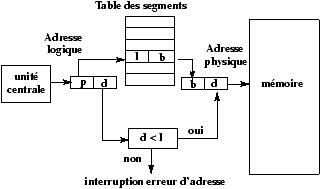
Figure 9.16 : Mémoire segmentée
La mémoire segmentée non paginée pose des problèmes de compactage (défragmentation).
La stratégie idéale est : la mémoire en segments paginés.
Chapitre 10 La mémoire virtuelle
Les méthodes de gestion mémoire que nous venons de voir ont toutes un défaut majeur qui est de garder l'ensemble du processus en mémoire, ce qui donne :
- swap
un coût en swap important
- Impossibilité de créer de très gros processus.
Les méthodes de mémoire virtuelle permettent d'exécuter un programme qui ne tient pas entièrement en mémoire centrale !
Nous avons commencé par présenter des algorithmes de gestion de la mémoire qui utilisent le concept de base suivant :
l'ensemble de l'espace logique adressable d'un processus doit être en mémoire pour pouvoir exécuter le processus.
Cette restriction semble à la fois raisonnable et nécessaire, mais aussi très dommageable car cela limite la taille des processus à la taille de la mémoire physique.
Or si l'on regarde des programmes très standards, on voit que :
-
il y des portions de code qui gèrent des cas très inhabituels qui ont lieu très rarement (si ils ont lieu)
- les tableaux, les listes et autres tables sont en général initialisés à des tailles beaucoup plus grandes que ce qui est réellement utile
- Certaines options d'application sont très rarement utilisées
Même dans le cas où le programme en entier doit résider en mémoire, tout n'est peut-être pas absolument nécessaire en même temps.
Avec la mémoire virtuelle, la mémoire logique devient beaucoup plus grande que la mémoire physique.
De nombreux avantages :
Comme les utilisateurs consomment individuellement moins de mémoire, plus d'utilisateurs peuvent travailler en même temps.
Avec l'augmentation de l'utilisation du CPU et de débit que cela implique (mais pas d'augmentation de la vitesse).
Moins d'entrées-sorties sont effectuées pour l'exécution d'un processus, ce qui fait que le processus s'exécute (temps réel) plus rapidement.
10.0.5 Les overlays
overlays
Une des premières versions d'exécutables partiellement en mémoire est celle des "overlay" qui est l'idée de charger successivement des portions disjointes et différentes de code en mémoire, exécutées l'une après l'autre.
Les différentes passes d'un compilateur sont souvent réalisées en utilisant un overlay (préprocesseurs, pass1, pass2, pour les compilateurs C).
Les overlay nécessitent quelques adaptations de l'éditeur de liens et
des mécanismes de relocation.
10.0.6 Le chargement dynamique
chargement dynamique
Un autre système couramment utilisé dans les logiciels du marché des micros est le chargement dynamique.
Avec le chargement dynamique, une fonction n'est chargée en mémoire qu'au moment de son appel.
Le chargement dynamique demande que toutes les fonctions soient repositionnables en mémoire de façon indépendante.
A chaque appel de fonction on regarde si la fonction est en mémoire sinon un éditeur de liens dynamique est appelé pour la charger.
Dans les deux cas (overlay et chargement dynamique), le système joue un rôle très restreint, il suffit en effet d'avoir un bon système de gestion de fichiers.
Malheureusement, le travail que doit réaliser le programmeur
pour choisir les overlays et/ou installer un mécanisme de chargement
dynamique efficace est non trivial et requiert que le
programmeur ait une parfaite connaissance du programme.
Ceci nous amène aux techniques automatiques.
10.1 Demand Paging
Demand Paging
La méthode de Demand Paging est la plus répandue des implémentations de mémoire virtuelle, elle demande de nombreuse capacités matérielles.
Nous partons d'un système de swap où la mémoire est découpée en pages. Comme pour le swap, quand un programme doit être exécuté nous le chargeons en mémoire (swap in) mais au lieu de faire un swap complet, on utilise un "swappeur paresseux" (lazy swapper).
lazy swapper
Un swappeur paresseux charge une page uniquement si elle est nécessaire.
Que ce passe-t-il quand le programme essaie d'accéder à une page qui
est hors mémoire ?
-
le matériel va traduire l'adresse logique en une adresse physique grâce à la table des pages.
- tant que les pages demandées sont en mémoire, le programme tourne normalement,
sinon si la page est contenue dans l'espace des adresses logiques mais n'est pas chargée,
il y a une page fault.
page fault
En général, une erreur d'adresse est dûe à une tentative d'accès à une adresse extérieure (invalide).
Dans ce cas, le programme doit être interrompu, c'est le comportement normal d'un système de swap.
Mais il est possible avec un swappeur paresseux que la page existe mais ne soit pas en mémoire centrale, d'où les étapes suivantes dans ce cas :
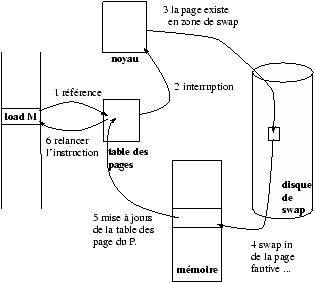
Figure 10.1 : Etapes de la gestion d'une erreur de page
On peut faire démarrer un processus sans aucune page en mémoire. La
première Page Fault aurait lieu à la lecture de la première instruction (l'instruction n'étant pas en mémoire).
Il faut réaliser une forme spéciale de sauvegarde de contexte, il faut garder une image de l'état du processus qui vient d'effectuer une Page Fault mais de plus il faudra redémarrer (réexécuter) l'instruction qui a placé le processus dans cet état, en effet il est possible que l'instruction ne se soit pas terminé par manque de données.
Le système d'exploitation a ici un rôle important, c'est lui qui va réaliser le chargement de la page manquante puis relancer le processus et l'instruction.
Les circuits nécessaires à la méthode de Demande Paging sont les mêmes que ceux que l'on utilise pour un système de swap paginé,
c'est-à-dire une mémoire secondaire et un gestionnaire de pages (table des pages).
Par contre, la partie logicielle est beaucoup plus importante.
Enfin il faut que les instructions soient interruptibles, ce qui n'est pas toujours le cas sur tous les processeurs et ce qui est fondamental, comme nous allons le voir sur des exemples:
add A,B in C
-
chercher et décoder l'instruction add
- charger le contenu de l'adresse A
- charger le contenu de l'adresse B
- sommer et sauvegarder dans C
Si l'erreur de page a lieu dans le 4ième accès à la mémoire (C), il faudra de nouveau recommencer les 3 accès mémoire de l'instruction, c'est-à-dire lire l'instruction, etc.
Un autre type de problème vient d'instructions comme la suivante que l'on trouve sur PDP-11 :
MOV (R2)++,--(R3)
cette instruction déplace l'objet pointé par le registre R2 dans l'adresse pointé par R3, R2 est incrémenté après le transfert et R3 avant.
Que se passe-t-il si l'on a une erreur de page en cherchant à accéder à la page pointé par R3 ?
10.1.1 Efficacité
Efficacité des performances de Demand Paging :
Soit ma = 500 nanosecondes, le temps moyen d'accès a une mémoire.
le temps effectif d'accès avec le Demand Paging est
temps effectif = (1-p)*ma + p * "temps de gestion de l'erreur de page"
où p est la probabilité d'occurrence d'une erreur de page (page fault).
Une erreur de page nécessite de réaliser les opérations suivantes
-
lever une interruption pour le système
- sauvegarder le contexte du processus
- déterminer que l'interruption est une erreur de page
- vérifier que la page en question est une page légale de l'espace logique, déterminer où se trouve la page dans la mémoire secondaire.
- exécuter une lecture de la page sur une page mémoire libre
(libérer éventuellement une page cf. algorithme de remplacement
de page)
-
attendre que le périphérique soit libre
- temps de latence du périphérique
- commencer le transfert
- allouer pendant ce temps-là le cpu à un autre utilisateur
- interruption du périphérique
- sauvegarde du contexte du processus courant
- déterminer que l'interruption était la bonne interruption (venant du périphérique)
- mise à jour de la table des pages et d'autres pages pour indiquer que la page demandée est en mémoire maintenant.
- attendre que le processus soit sélectionné de nouveau pour utiliser l'unité centrale (cpu)
- charger le contexte du processus !
Toutes ces instructions ne sont pas toujours réalisées (on peut en
particulier supposer que l'on ne peut pas préempter l'unité centrale,
mais alors quelle perte de temps pour l'ensemble du système).
Dans tous les cas, nous devons au moins réaliser les 3 actions suivantes :
-
gérer l'interruption
- swapper la page demandée
- relancer le processus
Ce qui coûte le plus cher est la recherche de la page sur le disque et son transfert en mémoire, ce qui prend de l'ordre de 1 à 10 millisecondes.
Ce qui nous donne en prenant une vitesse d'accès mémoire de 1 microseconde et un temps de gestion de page de 5 millisecondes un
temps effectif = (1 - p) + p × 5000 microsecondes
Une erreur de page toutes les mille pages nous donne un temps effectif onze fois plus long que l'accès standard.
Il faut réduire à moins d'une erreur de page tout les 100000 accès pour obtenir une dégradation inférieure à 10
On comprend bien que les choix à faire sur des pages qu'il faut placer en mémoire sont donc très importants.
Ces choix deviennent encore plus importants quand l'on a de nombreux
utilisateurs et qu'il y a sur-allocation de la mémoire, exécution
concurrente de 6 processus de la taille supérieure ou égale à la mémoire physique !
Si l'on suppose de plus que nos 6 programmes utilisent dans une petite séquence d'instructions toutes les pages de leur mémoire logique,
nous nous trouvons alors dans une situation de pénurie de pages libres.
Le système d'exploitation peut avoir recoure à plusieurs solution dans ce cas-là
-
tuer le processus fautif ...
- utiliser un algorithme de remplacement de page
Cet algorithme de remplacement est introduit dans notre séquence de gestion d'erreur de page là où l'on s'attribuait une page libre de la mémoire centrale.
Maintenant il nous faut sélectionner une victime, c'est-à-dire, une des pages occupées de la mémoire centrale qui sera swappée sur disque et remplacée par la page demandée.
Remarquons que dans ce cas-là notre temps de transfert est doublé, comme il faut à la fois lire une page et sauvegarder une page sur disque (le temps de transfert disque est ce qui est le plus coûteux dans la gestion d'une erreur de page).
Il est possible de réaliser des systèmes de demand segments, mais le lecteur avisé remarquera rapidement les problèmes posés par la taille variable des segments.
10.2 Les algorithmes de remplacement de page
Un algorithme de remplacement de page doit minimiser le nombre de Page Faults.
On recherche l'algorithme qui réduit au mieux la probabilité
d'occurrence d'une erreur de page.
Un algorithme est évalué en prenant une chaîne de numéros de page et
en comptant le nombre de fautes de page qui ont lieu au cours de cette
suite d'accès, et cela en fonction du nombre de pages de mémoire
centrale dont il dispose.
Pour illustrer les algorithmes de remplacement, nous utiliserons la suite de pages suivante :
7,0,1,2,0,3,0,4,2,3,0,3,2,1,2,0,1,7,0,1
et 3 pages en mémoire centrale.
10.2.1 Le remplacement optimal
Utiliser comme victime la page qui ne sera pas utilisée pendant le plus longtemps.
Soit pour notre suite :
7xx 70x 701 201 - 203 - 243 - -203 - - 201 - - - 701 - -
soit seulement 9 fautes de page.
Mais cet "algorithme" n'est valable que dans un cas où l'on connaît à l'avance les besoins, ce qui n'est généralement pas le cas.
10.2.2 Le remplacement peps (FIFO)
L'algorithme le plus simple est Premier Entré Premier Sorti
(First-In-First-Out ).
Quand une victime doit être sélectionnée c'est la page la plus ancienne qui est sélectionnée.
Soit pour la liste
7,0,1,2,0,3,0,4,2,3,0,3,2,1,2,0,1,7,0,1
et trois page de mémoire centrale :
7XX/70X/701/201-201/231/230/430/420/423/
023-023-023/013/012-012-012/712/702/701
soit Quinze Page Faults.
Ce mécanisme rapide et simple à programmer n'est malheureusement pas très efficace.
Il existe des suites de pages pour lesquelles cet algorithme fait plus de page faults avec quatre pages mémoire qu'avec trois !
(par exemple : 1,2,3,4,1,2,5,1,2,3,4,5).
10.2.3 Moins récemment utilisée LRU.
LRU (Least Recently Used page).
Nous utilisons ici le vieillissement d'une page et non plus l'ordre de création de la page. On fait le pari que les pages qui ont été récemment utilisées le seront dans un proche avenir, alors que les pages qui n'ont pas été utilisées depuis longtemps ne sont plus utiles.
Soit pour notre suite :
7xx 70x 701 201 - 203 - 403 402 432 032 - - 132 - 102 - 107 -
soit Douze Page Faults.
L'algorithme LRU est un bon algorithme mais il pose de nombreux problèmes d'implémentation et peut demander de substantiels outils matériels.
Des solutions logicielles :
-
Des compteurs
- à chaque entrée de la table des pages, on ajoute un compteur de temps qui est mis à jour à chaque accès à la page. Il faut rechercher sur l'ensemble de la table la victime. De plus, ces temps doivent être mis à jour quand on change de table de page (celle d'un autre processus ...). On ne peut utiliser le temps réel ...
- Une pile
- à chaque fois que l'on accède à une page, la page est placée en sommet de pile. Le dessus est toujours la page la plus récemment utilisée et le fond de la pile la moins récemment utilisée.
- Des masques
- On utilise un octet associé à chaque page. Le
système positionne à 1 le bit de poids fort à chaque accès à la
page. Toutes les N millisecondes (click d'horloge, cf clock, N =
100 sur fillmore) le système fait un décalage à droite de
l'octet associé à chaque page. On obtient ainsi un historique de
l'utilisation de la page. L'octet à 00000000 indique que la
page n'a pas été utilisée depuis 8 cycles, 11111111 indique que
la page a été utilisée pendant les 8 cycles. La page de masque
11000100 à été utilisée plus récemment que 01110111. Si l'on
interprète ces octets comme des entiers non-signés, c'est la page
ayant le plus petit octet qui a été utilisée le moins récemment
(l'unicité des numéros n'étant pas assurée, la sélection entre
numéros identiques se fait avec l'ordre FIFO).
10.2.4 L'algorithme de la deuxième chance
Un bit associé à chaque page est positionné à 1 à chaque fois qu'une page est utilisée par un processus.
Avant de retirer une page de la mémoire, on va essayer de lui donner une deuxième chance.
On utilise un algorithme FIFO plus la deuxième chance :
Si le bit d'utilisation est à 0, la page est swappée hors mémoire (elle n'a pas été utilisée depuis la dernière demande de page).
Si le bit est à 1, il est positionné a zéro et l'on cherche une autre victime. Ainsi cette page ne sera swappée hors mémoire que si toutes les autres pages ont été utilisées, et utilisent aussi leur deuxième chance.
On peut voir ceci comme une queue circulaire, où l'on avance sur les pages qui ont le bit à 1 (en le positionnant à zéro) jusqu'à ce que l'on trouve une page avec le bit d'utilisation à zéro.
10.2.5 Plus fréquemment utilisé MFU
Plus fréquemment Utilisée :
Comme son nom l'indique, c'est la fréquence d'utilisation qui joue au lieu de l'ancienneté, mais c'est le même mécanisme que LRU.
Ces deux algorithmes de LRU et MFU sont rarement utilisés car trop gourmands en temps de calcul et difficiles à implémenter, mais ils sont assez efficaces.
10.2.6 Le bit de saleté (Dirty Bit)
Remarquons que si il existe une copie identique sur disque (zone de swap) d'une page de mémoire, il n'est pas nécessaire dans le cas d'un swapout de sauvegarder la page sur disque, il suffit de la libérer.
Le bit de saleté permet d'indiquer qu'une page est (ou n'est plus) conforme à la page en zone de swap.
Ce bit de propreté est utilisé dans les autres algorithmes, on choisit entre deux victimes possibles la plus propre, c'est-à-dire celle qui ne nécessite pas de swapout.
10.3 Allocation de pages aux processus
Comment répartir les pages sur les différents processus et le système ?
-
remplacement local
- le processus se voit affecté un certain
nombre de pages qu'il va utiliser de façon autonome, son temps
d'exécution ne dépend que de son propre comportement.
- remplacement global
- le comportement d'allocation de pages aux processus dépend de la charge du système et du comportement des différents processus.
Le remplacement local demande que l'on réalise un partage entre les différents processus.
Le partage "équitable" :
m pages de mémoire physique,
n processus,
m/n pages par processus !
On retrouve ici un problème proche de la fragmentation interne, un grand nombre de pages est donné à un processus qui en utilise effectivement peu.
On fait un peu mieux en utilisant : S = S si
où si est le nombre de pages de la mémoire logique du Processus i.
Chaque processus se voit attribué (si / S) m pages.
On améliore en faisant varier ce rapport en fonction de la priorité de chaque processus.
Problèmes d'écroulement
Si le nombre de pages allouées à un processus non-prioritaire tombe en dessous de son minimum vital,
ce processus est constamment en erreur de page : il passe tout son temps à réaliser des demandes de pages.
Ce processus doit être alors éjecté entièrement en zone de swap et
reviendra plus prioritaire quand il y aura de la place.
Un exemple de bonne et mauvaise utilisation des pages (rappel les
compilateurs c allouent les tableaux sur des plages d'adresse croissante
contigües int m[A][B] est un tableau de A tableaux de B entiers) :
/* bonne initialisation */
int m[2048][2048];
main()
{int i,j;
for(i=0;i<2048;i++)
for(j=0;j<2048;j++)
m[i][j] = 1;
}
ce processus accède a une nouvelle page toute les 2048 affectation.
/* mauvaise initialisation */
int m[2048][2048];
main()
{int i,j;
for(i=0;i<2048;i++)
for(j=0;j<2048;j++)
m[j][i] = 1;
}
ce processus accède a une nouvelle page toute les affectations !
Attention : En fortran l'allocation des tableaux se fait dans
l'autre sens par colones ...
Si la mémoire est libre et assez grande, les deux processus sont grossièrement aussi rapides, par contre si on lance dix exemplaires du premier, le temps d'attente est juste multiplié par 10. Pour le deuxième, le temps d'attente est au moins multiplié par 100 (je n'ai pas attendu la fin de l'exécution).
10.4 L'appel fork et la mémoire virtuelle
Nous avons vu que la primitive fork() réalise une copie de l'image mémoire du processus père pour créer le processus fils. Cette copie n'est pas intégrale car les deux processus peuvent partager des pages marquées en lecture seule, en particulier le segment du code est partagé par les deux processus (réentrance standard des processus unix).
Mais avec le système de demand-paging, on peut introduire une nouvelle notion qui est la "copie sur écriture" (copy on write).
On ajoute à la structure de page de la table des pages des indicateurs de "copie sur écriture". L'idée est de réaliser la copie de la page uniquement dans le cas où l'un des processus qui peuvent y accèder réalise une écriture. Dans ce cas-là, la page est recopiée avant l'écriture et le processus écrivain possède alors sa propre page.
L'intérêt de ce mécanisme est surtout visible dans le cas très fréquent où le fork est immédiatement suivi par un exec. En effet, ce dernier va réaliser une libération de toutes les pages, il est donc inutile de les recopier juste avant cette libération.
Le système BSD a introduit la première version de cette idée en partant de l'appel système vfork() qui lui permet le partage totale de toutes les pages entre le processus père et le processus fils sans aucune copie. L'intérêt est de pouvoir réaliser rapidement un execve sans avoir à recopier l'espace d'adressage du processus père.
10.5 Projection de fichiers en mémoire
La fonction mmap permet la projection de fichiers en mémoire. Le segment du fichier indiqué est placé en mémoire à partir de l'adresse indiquée. Le segment de fichier peut ainsi être parcouru par des accès par adresse sans utiliser de commande de lecture ou d'écriture.
#include <sys/mman.h>
#include <sys/types.h>
void *mmap(void *adr, int len,
int prot, int options,
int desc, int offset);
int munmap(void *adr, int len);
appels systèmes!mmap@mmap
appels systèmes!munmap@munmap
L'adresse adr indique où doit être placé le fichier, cette adresse doit être une adresse de début de page (un multiple de sysconf(_SC_PAGE_SIZE)), si le paramètre est NULL alors le système sélectionne l'adresse de placement qui est retournée par la fonction. L'intervalle de position
[offset, offset+len]
du fichier desc est placé en mémoire.
prot indique les protections d'accès sous HP-UX les protections suivantes sont disponible :
--- PROT_NONE
r-- PROT_READ
r-x PROT_READ|PROT_EXECUTE
rw PROT_READ|PROT_WRITE
rwx PROT_READ|PROT_WRITE|PROT_EXECUTE
options indique si l'on veut que les écritures réalisées dans les pages contenant la projection soient partagées (MAP_SHARED), ou au contraire qu'une copie sur écriture soit réalisée (MAP_PRIVATE).
La fonction munmap permet de libérer la zone mémoire d'adresse adr et de longueur len.
Pour une autre forme de mémoire partagée, voir le chapitre 16 sur les IPC.
Un exemple d'utilisation de mmap pour copier un fichier :
#include <stdio.h>
#include <sys/types.h>
#include <sys/stat.h>
#include <sys/mman.h>
#include <fcntl.h>
int main(int argc,char *argv[])
{
int fdin,fdout;
struct stat statbuf;
char *src,*dst;
if (argc != 3)
{
fprintf(stderr,"usage: %s source destination ",argv[0]);
exit(-1);
}
if ((fdin = open(argv[1], O_RDONLY)) < 0)
{
fprintf(stderr,"impossible d\'ouvrir: %s en lecture ",argv[1]);
exit(-2);
}
if ((fdout = open(argv[2], O_RDWR|O_CREAT|O_TRUNC,0666)) < 0)
{
fprintf(stderr,"impossible d\'ouvrir: %s en ecriture ",argv[2]);
exit(-3);
}
if (fstat(fdin,&statbuf) < 0 )
{
fprintf(stderr,"impossible de faire stat sur %s ",argv[1]);
exit(-4);
}
if (lseek(fdout, statbuf.st_size -1 , SEEK_SET) == -1 )
{
fprintf(stderr,"impossible de lseek %s ",argv[2]);
exit(-5);
}
if (write(fdout,"",1) != 1)
{
fprintf(stderr,"impossible d\'ecrire sur %s ",argv[2]);
exit(-6);
}
if ((src = mmap (0,statbuf.st_size, PROT_READ,
MAP_FILE | MAP_SHARED, fdin,0)) == (caddr_t) -1 )
{
fprintf(stderr,"impossible de mapper %s ",argv[1]);
exit(-7);
}
if ((dst = mmap (0,statbuf.st_size, PROT_READ | PROT_WRITE,
MAP_FILE | MAP_SHARED, fdout,0)) == (caddr_t) -1 )
{
fprintf(stderr,"impossible de mapper %s ",argv[2]);
exit(-8);
}
memcpy(dst,src,statbuf.st_size); /* copie */
exit(0);
}
Programme très rapide, il pourrait être encore amélioré si la fonction madvice fonctionnait ce commentaire n'est plus vrai sur la version 10.* de HPUX.
Attention, quand vous utilisez mmap les
adresses mémoire dans la zone mappée ne sont pas nécessairement bien
alignées, il faut faire .
Chapitre 11 Tubes et Tubes Nommés
tubes
Les tubes sont un mécanisme de communication qui permet de réaliser des communications entre processus sous forme d'un flot continu d'octets. Les tubes sont un des éléments de l'agrément d'utilisation d'UNIX. C'est ce mécanisme qui permet l'approche filtre de la conception sous UNIX.
Mécanisme de communication lié au système de gestion de fichier, les
tubes nommés ou non sont des paires d'entrées de la table des fichiers
ouverts, associées à une inode en mémoire gérée par un driver
spécifique. Une entrée est utilisée par les processus qui écrivent dans le tube, une entrée pour les lecteurs du tube.
L'opération de lecture y est destructive !
L'ordre des caractères en entrée est conservé en sortie (premier entré premier sortie).
Un tube a une capacité finie : en général le nombre d'adresses directes des inodes du SGF (ce qui peut varier de 5 à 80 Ko).
11.1 Les tubes ordinaires (pipe)
Un tube est matérialisé par deux entrées de la table des ouvertures de fichiers, une de ces entrées est ouverte en écriture (l'entrée du tube), l'autre en lecture (la sortie du tube).
Ces deux entrées de la table des fichiers ouverts nous donnent le nombre de descripteurs qui pointent sur elles. Ces valeurs peuvent être traduites comme :
-
nombre de lecteurs
- = nombre de descripteurs associés à l'entrée ouverte en lecture.On ne peut pas écrire dans un tube sans lecteur.
- nombre d'écrivains
- = nombre de descripteurs associés à
l'entrée ouverte en écriture. La nullité de ce nombre définit le comportement de la primitive read lorsque le tube est vide.
11.2 Création de tubes ordinaires
Un processus ne peut utiliser que les tubes qu'il a créés lui-même par la primitive pipe ou qu'il a hérités de son père grâce à l'héritage des descripteurs à travers fork et exec.
#include <unistd.h>
int pipe(int p[2]);
appels systèmes!pipe@pipe
Figure 11.1 : Ouverture d'un tube
On ne peut pas manipuler les descripteurs de tubes avec les fonctions et primitives : lseek, ioctl, tcsetattr et tcgetattr, comme il n'y a pas de périphérique associé au tube (tout est fait en mémoire).
Héritage d'un tube dans la figure 11.2 : le processus B hérite des descripteurs ouverts par son père A et donc, ici, du tube.
Figure 11.2 : Héritage d'un tube
Dans la Figure 11.3, les descripteurs associés aux tubes sont placés comme descripteurs 0 et 1 des processus A et B, c'est à dire la sortie de A et l'entrée de B. Les autres descripteurs sont fermés pour assurer l'unicité du nombre de lecteurs et d'écrivains dans le tube.
Figure 11.3 : Redirection de la sortie standard de A dans le tube et
de l'entrée standard de B dans le tube, et fermeture des descripteurs inutiles
11.3 Lecture dans un tube
On utilise l'appel système read.
int nb_lu;
nb_lu = read(p[0], buffer, TAILLE_READ);
appels systèmes!read@read
Remarquer que la lecture se fait dans le descripteur p[0].
Comportement de l'appel :
| Si le tube n'est pas vide et contient taille caractères : |
|
lecture de nb_lu = min(taille, TAILLE_READ) caractères. |
| Si le tube est vide |
|
Si le nombre d'écrivains est nul |
|
|
alors c'est la fin de fichier et nb_lu est nul. |
|
Si le nombre d'écrivains est non nul |
|
|
|
Si lecture bloquante alors sommeil |
|
|
|
Si lecture non bloquante alors en fonction de l'indicateur |
|
|
|
O_NONBLOCK nb_lu= -1 et errno=EAGAIN. |
|
|
|
O_NDELAY nb_lu = 0.
|
11.4 Ecriture dans un tube
nb_ecrit = write(p[1], buf, n);
appels systèmes!write@write
L'écriture est atomique si le nombre de caractères à écrire est inférieur à PIPE_BUF, la taille du tube sur le système. (cf <limits.h>).
| Si le nombre de lecteurs est nul |
|
envoi du signal SIGPIPE à l'écrivain. |
| Sinon |
|
Si l'écriture est bloquante, il n'y a retour que quand |
|
|
les n caractères ont été écrits dans le tube. |
|
Si écriture non bloquante |
|
|
Si n > PIPE_BUF, retour avec un nombre inférieur à n |
|
|
|
éventuellement -1 ! |
|
|
Si n £ PIPE_BUF |
|
|
|
et si n emplacements libres, écriture nb_ecrit = n |
|
|
sinon retour -1 ou 0.
|
11.5 Interblocage avec des tubes
Un même processus a deux accès à un tube, un accès en lecture, un accès en écriture et essaie de lire sur le tube vide en mode bloquant
¾® le processus est bloqué indéfiniment dans la primitive read.
Avec deux processus :
deux tubes entre les deux processus, tous les deux bloqués en lecture
ou tous les deux bloqués en écriture, tous les deux en attente d'une action de l'autre processus.
11.6 Les tubes nommés
fifotubes nommés
Les tube nommés sont des tubes (pipe) qui existent dans le système de fichiers, et donc peuvent être ouverts grâce à une référence.
Il faut préalablement créer le tube nommé dans le système de fichiers, grâce à la primitive mknod (mkfifo), avant de pouvoir l'ouvrir avec la primitive open.
int mknod(reference, mode | S_IFIFO,0);
mkfifo
appels systèmes!mknod@mknod
mode est construit comme le paramètre de mode de la fonction open.
En POSIX, un appel simplifié :
#include <sys/types.h>
#include <sys/stat.h>
int mkfifo(const char *ref, mode_t mode);
appels systèmes!mkfifo@mkfifo
On peut créer des FIFOs à partir du shell grâce à
mkfifo [-p] [-m mode] ref ...
L'ouverture d'un tube nommé se fait exclusivement soit en mode O_RDONLY soit
en mode O_WRONLY, ainsi le nombre de lecteur et d'écrivain peut être comptabilisé.
11.6.1 Ouverture et synchronisation des ouvertures de tubes nommés
synchronisation
Il y a automatiquement synchronisation des processus qui ouvrent
en mode bloquant un tube nommé.
L'opération d'ouverture sur un tube nommé est bloquante en lecture.
Le processus attend qu'un autre processus ouvre la fifo en écriture.
L'ouverture en écriture est aussi bloquante, avec attente qu'un autre
processus ouvre la fifo en lecture. L'ouverture bloquante se termine
de façons synchrone pour les deux processus.
Ainsi un unique processus ne peut ouvrire à la fois en lecture et écriture
un tube nommé.
En mode non bloquant (O_NONBLOCK, O_NDELAY), seule l'ouverture en
lecture réussit dans tous les cas. L'ouverture en écriture en mode
non bloquant d'un tube nommé ne fonctionne que si un autre processus a
déjà ouvert en mode non bloquant le tube en lecture, ou bien qu'il est
bloqué dans l'appel d'une ouverture en lecture en mode bloquant. Ceci
pour éviter que le processus qui vient d'ouvrir le tube nommé,
n'écrive dans le tube avant qu'il n'y ait de lecteur (qu'un processus
ait ouvert le tube en lecture) et ce qui engendrerait un signal SIGPIPE
(tube détruit), ce qui n'est pas vrai car le tube n'a pas encore été
utilisé.
11.6.2 Suppression d'un tube nommé
L'utilisation de rm ou unlink ne fait que détruire la référence, le tube n'est réellement détruit que lorsque son compteur de liens internes et externes est nul.
Une fois que tous les liens par référence sont détruits, le tube nommé devient un tube ordinaire.
11.6.3 les appels popen et pclose
Une interface plus facile pour lancer un coprocessus est proposé avec les primitives popen et pclose.
Chapitre 12 La gestion des terminaux
Les terminaux ont un rôle fondamental puisqu'ils permettent l'interaction entre les utilisateurs et les applications. Vis-à-vis des processus dits interactifs, les terminaux ont une double fonction :
-
fonction de "fichier"
- sur lequel il est possible de lire ou d'écrire.
- fonction de contrôle
- : la possibilité de faire parvenir des signaux à un ensemble particulier de processus connectés.
Un terminal correspond à l'un de ces types :
-
terminal physique
- , connecté à un port de communication de la machine
(port série, port parallèle).
On compte dans les terminaux physiques les imprimantes mais pas les Terminaux X !
physique
- pseudo-terminal
- , par exemple une fenêtre de terminal X ou une connection ETHERNET avec un autre site UNIX, une connections modem etc.
pseudo-terminaux
Dans tous les cas on trouvera une représentation sous forme de fichier spécial en mode caractère dans le répertoire /dev. En standard un fichier de terminal s'appelle /dev/ttyxy. On trouvera aussi sur fillmore des fichiers de pseudo terminaux dans /dev/pty/ttyxy.
Le paramétrage des terminaux et de la ligne de communication est différent sous BSD et SYSTEM V.
La norme POSIX est basée sur SYSTEM V.
12.1 Acquisition d'un descripteur associé à un terminal
En standard, l'acquisition d'un descripteur de terminal se fait par héritage à la naissance du processus. On hérite en particulier du terminal de contrôle. Pour ouvrir un terminal, on utilise la primitive open avec une référence du type /dev/ttyxy, qui est celle d'un fichier spécial caractères correspondant au terminal à ouvrir. Dans le cas où l'on cherche à ouvrir le terminal de contrôle du processus, il faut utiliser la référence symbolique "/dev/tty". Si le terminal n'est pas prêt, la primitive open est bloquante, on utilisera pour un appel non bloquant l'indicateur O_NONBLOCK.
Test d'association d'un descripteur avec un terminal
La primitive
#include <unistd.h>
int isatty(int desc);
appels systèmes!isatty@isatty
permet de tester si le descripteur est (1) associé ou non (0) à un terminal.
La primitive
#include <unistd.h>
char *ttyname(int desc);
appels systèmes!ttyname@ttyname
renvoie, lorsque le descripteur est associé à un terminal, le nom de celui-ci grâce à un pointeur en zone statique. Sinon elle retourne NULL.
Exemple :
da=open("/dev/tty",O_RDWR));
db=open("/dev/ttyp2",O_RDWR));
a=ttyname(da); printf(" %s\t",a);
b=ttyname(db);printf(" %s\t",b); printf(" %s \n",a);
nous donne :
/dev/tty /dev/ttyp2 /dev/ttyp2
static
12.2 Terminal de contrôle - Sessions - Groupes de processus
L'ensemble des processus existant dans le système à un moment donné est partitionné en sessions : tout processus appartient à une seule et unique session, on hérite de la session du processus père.
Un processus qui n'est pas leader de groupe peut créer une nouvelle session avec la primitive
#include <unistd.h>
pid_t setsid(void);
appels systèmes!setsid@setsid
Lors du login, le processus shell créé est le leader d'une nouvelle session. Une tel session est caractérisée par le terminal de l'utilisateur (sur lequel il se loge) qui devient le terminal de contrôle de la session. Tous les processus de la session sont informés de la frappe des caractères de contrôle sur le terminal
intr, quit, susp.
intrquitsusp
/dev/tty
Le terminal de contrôle est symbolisé par la référence "/dev/tty".
Lorsque le leader d'une session attachée à un terminal se termine tous les processus de la session reçoivent le signal SIGHUP et sont alors interrompus (on réalise sur fillmore une fin de session en tuant la fenêtre console, ce qui termine le processus shell leader ...) sauf si un handler a été positionné pour le signal SIGHUP.
SIGHUP
On peut réaliser ceci en sh avec la commande nohup, ou la commande trap qui permettent d'ignorer le signal SIGHUP. Le terminal de contrôle et la session d'un tel processus résistant n'est pas normée dans POSIX.
12.2.1 Acquisition d'un terminal de contrôle par une session
terminal de contrôle
A sa création, une session n'a pas de terminal de contrôle!
L'acquisition d'un terminal de contrôle n'est pas normée, mais, si l'on ouvre un terminal qui n'est pas le terminal de contrôle d'une autre session avec un processus leader qui n'a pas de terminal de contrôle, alors le terminal ouvert devient le terminal de contrôle de la session.
Un terminal peut être le terminal de contrôle d'au plus une session.
12.2.2 Groupes de processus
Les groupes de processus sont un raffinement POSIX de la notion de session. Ils permettent de travailler avec des groupes de processus sans toutes les obligations liées aux sessions.
L'objectif est de spécifier l'ensemble des processus qui sont interactifs sur un terminal donné à un moment donné, et donc qui ont le droit de lire sur le terminal et de plus sont informés de la frappe des caractères de contrôle.
Un groupe de processus est identifié par le PID du leader du groupe, à la naissance, un processus hérite du groupe de son père. La primitive suivante :
#include <unistd.h>
pid_t setpgid(pid_t pid, pid_t id_grp);
appels systèmes!setpgid@setpgid
permet de rattacher le processus pid au groupe id_grp.
Si pid est nul c'est le processus courant qui est rattaché.
Si id_grp est nul le numéro déduit de pid est utilisé.
Dans tous les cas soit le groupe existe et le processus est rattaché, soit le groupe est créé et le processus traité devient le leader du groupe.
Un processus ne peut être rattaché qu'à un groupe appartenant à la même session que lui,c'est-à-dire, que les groupes sont définis à l'intérieur des sessions.
La primitive
#include <unistd.h>
pid_t getpgrp(void);
appels systèmes!getpgrp@getpgrp
renvoie le numéro du leader du groupe du processus courant.
Sur certaines machines, la primitive
#include <unistd.h>
pid_t getgrp2(pid_t pid);
appels systèmes!getgrp2@getgrp2
renvoie le numéro du groupe du processus pid.
12.2.3 Premier Plan et Arrière Plan
Le premier plan est l'unique sous-groupe de processus de la session qui est en mode interactif. Les processus de ce groupe peuvent lire et écrire sur le terminal, ce sont les processus qui reçoivent les signaux engendrés par les caractères de contrôle.
premier planarrière plan
Les groupes en arrière plan sont tous les autres sous-groupes de
la session. En csh/ksh ce sont tous les processus lancés en tâche de
fond (&), que l'on peut manipuler avec les commandes fg et bg.
Ces groupes ne peuvent lire sur le terminal (signaux SIGTTIN et SIGTTOU), de plus à la frappe de caractère de contrôle sur le terminal ils ne reçoivent pas de signaux.
Avant POSIX les processus lancés en tâche de fond par le shell ignoraient les signaux SIGINT et SIGQUIT et avaient leur entrée standard redirigée sur le "trou noir" : /dev/null.
/dev/null
12.2.4 Quelques fonctions
Quelques fonctions d'information sur les sessions et les groupes.
Elles nécessite toute l'include
#include <unistd.h>
La primitive
pid_t tcgetsid(int desc);
appels systèmes!tcgetsid@tcgetsid
renvoie l'identité du processus leader.
La primitive renvoie -1 si le terminal n'est pas terminal de contrôle.
pid_t getsid(pid_t pid);
appels systèmes!getsid@getsid
renvoie l'identité du leader de la session du processus pid.
Si pid ==0 c'est le pid du processus courant qui est utilisé,
un appel équivalent à getsid(getpid()) mais avec un appel système de moins.
Changement du groupe en premier plan
La primitive
pid_t tcgetgrp(int desc);
appels systèmes!tcgetgrp@tcgetgrp
renvoie le groupe de processus en premier plan associé au terminal de contrôle indiqué par le descripteur desc.
Ceci s'applique évidement uniquement au terminal de contrôle de la session du processus courant.
La primitive
pid_t tcsetpgrp(int desc, pid_t id_grp);
appels systèmes!tcsetpgrp@tcsetpgrp
permet de placer en premier plan le groupe id_grp dans la session associée au terminal pointé par desc.
12.3 Les drivers logiciels de terminaux
Les terminaux physiques sont manipulés par des drivers spécifiques
pour chaque terminal(en fonction du modèle, de la marque, de l'age, etc
...). Sur cet ensemble de drivers, on trouve une super-structure
logicielle, les tty driver, drivers logiciels de terminaux. Ces
drivers permettent de travailler sur l'ensemble des terminaux de façon
homogène et transparente (polymorphisme).
Structure de description du mode de communication : la structure termios.
Figure 12.1 : Structure de la communication entre le processus et le terminal.
12.3.1 La structure termios
En POSIX, toutes les caractéristiques d'une voie de communication sont rassemblées dans la structure termios prédéfinie dans le fichier <termios.h>.
termios
Sur un HP/UX :
/* machine: fillmore */
#define NCCS 16
typedef unsigned int tcflag_t;
typedef unsigned char cc_t;
struct termios {
tcflag_t c_iflag; /* Input modes */
tcflag_t c_oflag; /* Output modes */
tcflag_t c_cflag; /* Control modes */
tcflag_t c_lflag; /* Local modes */
tcflag_t c_reserved; /* Reserved for future use */
cc_t c_cc[NCCS]; /* Control characters */
};
Le type tcflag_t est considéré comme un tableau de bits. On peut donc
tester le positionnement d'un indicateur par un & (conjonction binaire) avec sa macro-définition.
Par exemple:
(c_iflag & IXOFF ) est vrai si le drapeau est positionné.
12.3.2 Modes d'entrée
Macro-définitions des drapeaux du mode d'entrée :
-
IGNBRK
- Ignorer <break>
- BRKINT
- Signal SIGINT à la frappe de <break>
- IGNPAR
- Ignorer les erreurs de parité
- PARMRK
- Marquer les erreurs de parité
- INPCK
- Vérification de parité
- ISTRIP
- Strip character : compacter sur 7 bits
- INLCR
- Transformer NL en CR
- IGNCR
- Ignorer CR
- ICRNL
- Transformer CR en NL
- _IUCLC
- Transformer Majuscules en minuscules
- IXON
- Autoriser l'arrêt du flux avec (Ctrl-S/Ctrl-Q)
- _IXANY
- N'importe quel caractère relance le flux.
- IXOFF
- Interdit l'arrêt du flux.
12.3.3 Modes de sortie
Macro-définitions des drapeaux du mode de sortie :
-
OPOST
- Postprocessing de la sortie.
- OLCUC
- Transformer minuscule en MAJUSCULE en sortie.
- ONLCR
- NL en CR+NL.
- OCRNL
- CR en NL .
- ONOCR
- No CR en colonne 0.
- ONLRET
- NL en NL+CR.
12.3.4 Modes de contrôle
Description plus bas niveau de la ligne de communication. Utilisés
surtout pour des périphériques de communication (modems).
-
CLOCAL
- Ouverture non bloquante, sinon l'ouverture est bloquante tant que
la ligne n'est pas prête (par exemple un modem), sauf demande contraire dans
l'appel de open avec O_NONBLOCK.
- HUPCL
- hangup sur le dernier close.
12.3.5 Modes locaux
Ce sont ces modes-là qui ont le plus d'impact au niveau logiciel.
Ce sont eux qui indiquent les traitements réalisés sur les caractères de contrôle et déterminent le comportement de la primitive read.
-
ISIG
- les caractères de contrôle intr, quit, etc sont transformés en signaux.
- ECHO
- Les caractères frappés au clavier sont après transformation, définie dans le mode d'entrée, insérés dans le flux de sortie (écho des caractères en sh par exemple).
- ECHOE
- dans ce mode et en mode ICANON, le caractère de contrôle
erase a un écho provoquant l'effacement du dernier caractère sur l'écran.
- ECHOK
- dans ce mode et en mode ICANON, le caractère de contrôle kill a comme écho le caractère de fin de ligne.
- NOFLSH
- dans ce mode, il n'y a pas de vidange par défaut des
tampons de lecture et d'écriture à la prise en compte des
caractères intr, quit, susp en mode ISIG.
- TOSTOP
- dans ce mode, les processus du groupe de processus en arrière-plan du terminal sont suspendus, lorsqu'ils essaient d'écrire sur le terminal, par le signal SIGTTOU.
- ICANON
- est un mode complexe, voir plus bas.
les modes canoniques et non-canoniques
Le choix de l'option ICANON a un effet sur la primitive read en
particulier l'accessibilité des caractères frappés dépend de choix
effectués sur ce mode.
-
Mode canonique
- : c'est le mode de fonctionnement d'un terminal en mode interactif, il se caractérise de la manière suivante :
le tampon d'entrée est structuré en ligne, une ligne étant une suite de caractères terminée par le caractère newline de code ASCII 10 (le newline du C). Ceci signifie que les caractères lus au cours d'une opération de lecture read sur le terminal sont extraits dans une et une seule ligne. Donc tout caractère non suivi d'un newline n'est pas accessible en lecture ! Une opération de lecture ne peut avoir lieu à cheval sur plusieurs lignes.
- Mode non-canonique
- : la structure de ligne ne définit plus le
critère d'accessibilité des caractères et les 4 caractères erase, kill, eof, eol perdent leur qualité de caractères de contrôle.
Les critères d'accessibilité en mode non-canonique sont définis par deux
caractères spéciaux MIN et TIME du tableau c_cc de
la structure termios.
Si MIN > 0 et TIME > 0 , TIME est un minuteur inter-caractères de granularité 0.1 seconde.
-
A chaque caractère reçu le minuteur est repositionné.
- Si le nombre de caractères reçu avant l'expiration du minuteur est égal à MIN l'appel read retourne ces caractère au processus.
- Si le minuteur expire avant la reception de MIN caractères, l'appel read retourne les caractères reçus au processus.
- Remarquer qu'au moins un caractère sera renvoyé. Le read est bloquant tant que le premier caractère n'est pas reçu et que MIN et TIME ne sont pas mis en marche.
Pour certaines valeurs de MIN et TIME :
-
MIN > 0, TIME = 0
- Même comportement mais seul MIN est significatif. Le read est bloquant jusqu'à la reception de MIN caractères.
- MIN = 0, TIME > 0
- comme le nombre de caractères à lire est nul (MIN = 0), le minuteur est initialisé au debut de l'appel read. L'appel read retourne soit parce qu'un caractère a été lu ou que le délai a expiré.
- MIN = 0, TIME = 0
- mode non bloquant : l'appel read retourne les caractères disponibles (le minimum des caractères disponibles et du nombre de caractères demandés dans l'appel de read).
Les valeurs les plus couramment utilisées sont MIN=1, TIME=0, ce qui est le mode CBREAK des versions BSD. Ce mode permet
d'avoir une saisie bloquante de chaque caractère frappé au clavier (vi utilise
ce mode), le read retourne dès qu'un caractère est frappé.
12.3.6 Les caractères spéciaux
Les caractères spéciaux sont définis par le tableau c_cc de la structure termios. Les positions et les valeurs initiales du rôle des différents caractères spéciaux sont les suivantes :
|
nom |
code |
caractère |
|
EOF |
VEOF |
Control-D |
|
EOL |
VEOL |
NUL |
|
ERASE |
VERASE |
# |
|
INTR |
VINTR |
DEL |
|
KILL |
VKILL |
@ |
|
MIN |
VMIN |
NUL |
|
QUIT |
VQUIT |
Control-pipe |
|
START |
VSTART |
Control-Q |
|
STOP |
VSTOP |
Control-S |
|
SUSP |
VSUSP |
disabled |
|
SWTCH |
VSWTCH |
NUL |
|
TIME |
VTIME |
Control-D |
12.3.7 Manipulation du driver logiciel de terminaux
et de la structure termios
Attention toutes ces opérations se font sur un unique
terminal manipulé par plusieurs descripteurs dans plusieurs
processus. Attention donc aux conflits éventuels et faites attention à repositionner la ligne après usage.
Les fonctions suivantes permettent de manipuler la structure termios.
#include <termios.h>
int tcgetattr(int desc, struct termios *termios);
appels systèmes!tcgetattr@tcgetattr
extraction des paramètres courants.
int tcsetattr(int desc, int option, struct termios *termios);
appels systèmes!tcsetattr@tcsetattr
positionnement des paramètres.
Le paramétre option permet de spécifier le comportement de
gestion des tampons d'entrée et de sortie de la ligne :
-
TCSANOW
- changement immédiat des attributs
- TCSADRAIN
- les sorties en cours sont réalisées avant
- TCSAFLUSH
- idem et le tampon de lecture est vidé.
La primitive
int tcdrain(int desc);
appels systèmes!tcdrain@tcdrain
bloque le processus jusqu'à ce que tous les caractères à destination du terminal de descripteur desc aient été transmis.
int tcflush(int desc, int option);
appels systèmes!tcflush@tcflush
vidange des tampons.
valeur de option :
-
TCIFLUSH
- tampon d'entrée
- TCOFLUSH
- tampon de sortie
- TCIOFLUSH
- les deux tampons.
12.3.8 Manipulation de la vitesse de transmission
Le mode de codage de la vitesse étant complexe, elle se manipule en deux étapes, encodage/décode, positionnement/récupération.
Encodage:
speed_t cfgetispeed(const struct termios *termios);
speed_t cfgetospeed(const struct termios *termios);
appels systèmes!cfgetispeed@cfgetispeed
appels systèmes!cfgetospeed@cfgetospeed
Permet de lire la vitesse dans la structure termios.
int cfsetispeed(const struct *termios, speed_t vitesse);
int cfsetospeed(const struct *termios, speed_t vitesse);
appels systèmes!cfsetispeed@cfsetispeed
appels systèmes!cfsetospeed@cfsetospeed
permet de positionner la vitesse dans la structure termios.
Positionnement/récupération de la structure termios par les primitives tcgetattr et tcsetattr.
12.4 Pseudo-terminaux
Les pseudo-terminaux sont un mécanisme permettant une connection entre processus, qui prend les attributs définis dans la communication pour des terminaux physiques. D'où le nom de pseudo-terminaux.
Un pseudo-terminal est composé de deux entités appelées pseudo-terminal maître et pseudo-terminal esclave, qui forment les deux extrémités de la connexion.
/dev/pty
pseudo-terminaux
L'ouverture des deux extrémités suit les règles suivantes :
Le maître /dev/ptyxy ne peut être ouvert qu'une seule fois.
L'esclave /dev/ttyxy ne peut être ouvert que si le maître correspondant est ouvert.
Les pseudo-terminaux ont des noms où x Î [p-t] et y Î [0-9a-f].
Dans la figure 12.2, un pseudo-terminal est utilisé pour faire communiquer deux processus. Toutes les écritures de A sur le maître sont lisibles sur l'esclave par le processus B et réciproquement. Exactement comme si l'on avait utilisé deux tubes. De plus, pour le processus B l'entrée et la sortie standard sont perçues comme un terminal qui se comporte normalement à l'appel des fonctions de manipulation du driver de terminaux comme tcsetattr. Et les caractères de contrôle sont effectivement transformés en signaux.
Figure 12.2 : Un exemple d'utilisation d'un pseudo terminal
12.5 La primitive ioctl
La primitive ioctl permet de réaliser un certain nombre
d'opérations sur les fichiers spéciaux. A l'inverse de read et
write qui sont polymorphes et qui s'appliquent identiquement sur
tous les fichiers (spéciaux ou non), la primitive ioctl a des
argment différents pour chaque type de fichier spécial.
#include<sys/ioctl.h>
int ioctl(int desc, int requete, ... /* args */);
appels systèmes!ioctl@ioctl
Chapitre 13 Les signaux
signaux
Les signaux sont un mécanisme asynchrone de communication inter-processus.
Intuitivement, il sont comparables à des sonneries, les differentes
sonneries indiquant des évènements différents. Les signaux sont
envoyés à un ou plusieurs processus. Ce signal est en général
associé à un évènement.
Peu portables entre BSD et ATT, ils deviennent plus commodes à
utiliser et portables avec la norme POSIX qui utilise la notion utile
de vecteur de signaux et qui fournit un mécanisme de masquage
automatique pendant les procédures de traitement (comme BSD).
Un signal est envoyé à un processus en utilisant l'appel système :
kill(int pid, int signal);
appels systèmes!kill@kill
signaux!kill
signal est un numéro compris entre 1 et NSIG (défini dans <signal.h>) et pid le numéro du processus.
Le processus visé reçoit le signal sous forme d'un drapeau positionné dans son bloc de contrôle.
Le processus est interrompu et réalise éventuellement un traitement de ce signal.
On peut considérer les signaux comme des interruptions logicielles, ils interrompent le flot normal d'un processus mais ne sont pas traités de façon synchrone comme les interruptions matérielles.
13.0.1 Provenance des signaux
Certains signaux peuvent être lancés à partir d'un terminal grâce aux
caractères spéciaux comme intr, quit dont la frappe est
transformée en l'envoi des signaux SIGINT et SIGQUIT.
intrquitsusp SIGINT
D'autres sont dûs à des causes internes au processus, par exemple :
SIGSEGV qui est envoyé en cas d'erreur d'adressage, SIGFPE
division par zéro (Floating Point Exception).
Enfin certains sont dûs à des évènements comme la déconnection de la
ligne (le terminal) utilisé : si le processus leader d'un groupe de
processus est déconnecté, il envoie à l'ensemble des processus de son
groupe le signal SIGHUP (Hangup = raccrocher).
SIGHUP
13.0.2 Gestion interne des signaux
C'est dans le bloc de contrôle (BCP) de chaque processus que l'on trouve la table de gestion des signaux (attention, sous System V < V.4, la table de gestion des processus est dans la zone u, c'est à dire dans l'espace-mémoire du processus).
Cette table contient, pour chaque signal défini sur la machine, une structure sigvec suivante :
{
bit pendant;
void (*traitement)(int);
}
handler
pendant
En BSD et POSIX, on a un champ supplémentaire : bit masque;
Le drapeau pendant indique que le processus a reçu un signal, mais n'a pas encore eu l'occasion de prendre en compte ce signal.
Remarque : comme pendant est un unique bit, si un processus reçoit plusieurs fois le même signal avant de le prendre en compte, alors il n'y a pas mémorisation des réceptions successives, un seul traitement sera donc réalisé.
Comme nous l'avons vu dans le graphe d'état des processus, la prise en compte des signaux se fait au passage de l'état actif noyau à l'état actif utilisateur. Pourquoi la prise en compte de signaux se fait-elle uniquement à ce moment là ?
Parce que
Une sauvegarde de la pile utilisateur et du contexte a été effectuée quand le processus est passé en mode noyau.
Il n'est pas nécessaire de faire un nouveau changement de contexte.
Il est facile pour traiter le signal de réaliser immédiatement une nouvelle augmentation de pile pour le traitement du signal, de plus la pile noyau est vide (remarque : en POSIX, il devient possible de créer une pile spéciale pour les fonctions de traitement de signaux).
L'appel à la fonction de traitement est réalisé de façon à ce qu'au retour de la fonction, le processus continue son exécution normalement en poursuivant ce qui était en cours de réalisation avant la réception du signal. Si l'on veut que le processus se poursuive dans un autre contexte (de pile), il doit gérer lui-même la restauration de ce contexte.
La primitive longjmp peut permettre de réaliser des changements de contexte interne au processus, grâce à un désempilement brutal.
longjmp
Pendant ce changement d'état, la table de gestion des signaux du processus est testée pour la présence d'un signal reçu mais non traité (c'est un simple vecteur de bit pour le bit pendant, et donc testable en une seule instruction, ceci doit être fait rapidement comme le test de réception d'un signal est souvent réalisé).
Si un signal a été reçu ( et qu'il n'est pas masqué), alors la fonction de traitement associée est réalisée.
Le masquage permet au processus de temporiser la mise en øeuvre du traitement.
13.0.3 L'envoi de signaux : la primitive kill
kill(int pid, int sig)
appels systèmes!kill@kill
Il y a NSIG signaux sur une machine, déclarés dans le fichier /usr/include/signal.h.
La valeur de pid indique le PID du processus auquel le signal est envoyé.
-
0
- Tous les processus du groupe du processus réalisant l'appel
kill
- 1
- En système V.4 tous les processus du système sauf 0 et 1
- pid positif
- le processus du pid indiqué
- pid négatif
- tous les processus du groupe | pid |
le paramètre sig est interprété comme un signal si sig Î [0-NSIG],
ou comme une demande d'information si sig = 0 (suis-je autorisé à envoyer
un signal à ce(s) processus ?). Comme un paramètre erroné sinon.
La fonction raise(int signal) est un raccourci pour kill(getpid(), signal), le processus s'envoie à lui-même un signal.
Remarquez que l'on peut réécrire kill(0, signal) par kill(-getpid(), signal). Rappel : les PID sont toujours positifs.
13.1 La gestion simplifiée avec la fonction signal
ZZZ : cette section est historique, utiliser la norme POSIX décrite
plus loin.
ancien C : (*signal(sig, func))()
int sig;
int (*func)();
ANSI C : void (*signal(int sig, void (*action)(int)))(int);
appels systèmes!signal@signal
La fonction signal permet de spécifier ou de connaître le comportement du processus à la réception d'un signal donné, il faut donner en paramètre à la fonction le numéro du signal sig que l'on veut détourner et la fonction de traitement action à réaliser à la réception du signal.
Trois possibilités pour ce paramètre action
-
SIG_DFL
- Comportement par défaut, plusieurs possibilités
exit Le processus se termine (avec si possible la réalisation d'un core)
ignore Le processus ignore le signal
pause Suspension du processus
continue Reprise du processus si il était suspendu.
- SIG_IGN
- le signal est ignoré.
Remarque : les signaux SIGKILL, SIGSTOP ne peuvent pas être ignorés.
- HANDLER
- Une fonction de votre cru.
13.1.1 Un exemple
Exemple pour rendre un programme insensible à la frappe du caractère de contrôle intr sur le terminal de contrôle du processus.
void got_the_blody_signal(int n) {
signal(SIGINT, got_the_blody_signal);
printf(" gotcha!! your (%d) signal is useless \n");
}
main() {
signal(SIGINT, got_the_blody_signal);
printf(" kill me now !! \n");
for(;;);
}
une version plus élégante et plus fiable :
signal(SIGINT, SIG_IGN);
13.2 Problèmes de la gestion de signaux ATT
Les phénomènes suivants sont décrits comme des problèmes mais la norme
POSIX permet d'en conserver certains, mais fournit aussi les moyens
de les éviter.
- un signal est repositionné à sa valeur par défaut au début de son traitement (handler).
#include <signal.h>
traitement() {
printf("PID %d en a capture un \n", getpid());
-> reception du deuxieme signal, realisation d'un exit
signal(SIGINT, traitement);
}
main() {
int ppid;
signal(SIGINT,traitement);
if (fork()==0)
{/* attendre que pere ait realise son nice() */
sleep(5);
ppid = getppid(); /* numero de pere */
for(;;)
if (kill(ppid,SIGINT) == -1)
exit();
}
/* pere ralenti pour un conflit plus sur */
nice(10);
for(;;) pause(); <- reception du premier signal
/* pause c'est mieux qu'une attente active */
}
Si l'on cherche à corriger ce défaut, on repositionne la fonction traitement au début du traitement du signal. Ceci risque de nous placer dans une situation de dépassement de pile : en effet, dans le programme précédent, nous pouvons imaginer que le père peut recevoir un nombre de signaux arbitrairement grand pendant le traitement d'un seul signal, d'où une explosion assurée de la pile (il suffit en effet que chaque empilement de la fonction traitement soit interrompu par un signal)
traitement(){
signal(SIGINT,traitement);
-> signal SIGINT
printf("PID %d en a capture un \n",getpid());
}
On peut aussi ignorer les signaux pendant leur traitement, mais cela peut créer des pertes de réception.
Enfin, la solution BSD/POSIX où l'on peut bloquer et débloquer la réception de signaux à l'aide du vecteur de masquage (sans pour autant nous assurer de la réception de tous les signaux !!).
De plus, en POSIX, le traitement d'un signal comporte une clause de blocage automatique. On indique quels signaux doivent être bloqués pendant le traitement du signal, grâce à un vecteur de masquage dans la structure sigaction.
Ceci est le comportement naturel de gestion des interruptions
matérielles : on bloque les interruptions de priorité inférieure
pendant le traitement d'un interruption.
- Seconde anomalie des signaux sous System V < V4 : certains
appels systèmes peuvent être interrompus et dans ce cas la
valeur de retour de l'appel système est -1 (échec). Il faudrait,
pour réaliser correctement le modèle d'une interruption
logicielle, relancer l'appel système en fin de traitement du
signal. (Sous BSD ou POSIX, il est possible de choisir le
comportement en cas d'interruption d'un appel système grâce à la
fonction siginterrupt, c-a-d relancer ou non l'appel système, un appel à read, par exemple, peut facilement être interrompu si il nécessite un accès disque).
- Troisième anomalie des signaux sous ATT : si un signal est
ignoré par un processus endormi, celui-ci sera réveillé par le
système uniquement pour apprendre qu'il ignore le signal et doit
donc être endormi de nouveau. Cette perte de temps est dûe au
fait que le vecteur des signaux est dans la zone u et non pas
dans le bloc de contrôle du processus.
13.2.1 Le signal SIGCHLD
Le signal SIGCHLD (anciennement SIGCLD) est un signal utilisé pour réveiller un processus
dont un des fils vient de mourir. C'est pourquoi il est traité
différemment des autres signaux. La réaction à la réception d'un
signal SIGCHLD est de repositionner le bit pendant à zéro, et d'ignorer
le signal, mais le processus a quand même été réveillé pour
cela. L'effet d'un signal SIGCHLD est donc uniquement de réveiller un
processus endormi en priorité interruptible.
Si le processus capture les signaux SIGCHLD, il invoque alors la procédure de
traitement définie par l'utilisateur comme il le fait pour les autres signaux,
ceci en plus du traitement par défaut.
Le traitement normal est lié à la primitive wait qui permet de
récupérer la valeur de retour (exit status) d'un processus fils. En
effet, la primitive wait est bloquante et c'est la réception du signal
qui va réveiller le processus, et permettre la fin de l'exécution de
la primitive wait.
Un des problèmes de la gestion de signaux System V est le fait que le signal
SIGCHLD est reçu (raised) au moment de la pose d'une fonction de traitement.
Ces propriétés du signal SIGCHLD peuvent induire un bon nombre d'erreurs.
Par exemple, dans le programme suivant nous positionnons une fonction de traitement dans laquelle nous repositionnons la fonction de traitement.
Comme sous System V, le comportement par défaut est repositionné pendant le traitement d'un signal.
Or le signal est levé à la pose de la fonction de traitement, d'où une explosion de la pile.
#include <stdio.h>
#include <unistd.h> /* ancienne norme */
#include <signal.h>
void hand(int sig) {
signal(sig, hand);
printf("message qui n'est pas affiche\n");
}
main() {
if (fork()) { exit(0); /* creation d'un zombi */ }
signal(SIGCHLD, hand);
printf("ce printf n'est pas execute\n");
}
Sur les HP, un message d'erreur vous informe que la pile est pleine : stack growth failure.
Deuxième exemple :
#include <signal.h>
#include <sys/wait.h>
int pid, status;
void hand(int sig) {
printf(" Entree dans le handler \n");
system("ps -l"); /* affichage avec etat zombi du fils */
if ((pid = wait(&status)) == -1) /* suppression du fils zombi */
{
perror("wait handler ");
return ;
}
printf(" wait handler pid: %d status %d \n", pid, status);
return;
}
main() {
signal(SIGCHLD,hand); /* installation du handler */
if (fork() == 0)
{ /* dans le fils */
sleep(5);
exit(2);
}
/* dans le pere */
if ((pid = wait(&status)) == -1) /* attente de terminaison du fils */
{
perror("wait main ");
return ;
}
printf(" wait main pid: %d status %d \n", pid, status);
}
résultat :
Entree dans le handler
F S UID PID PPID C PRI NI ADDR SZ WCHAN TTY TIME COMD
1 S 121 6792 6667 0 158 20 81ac180 6 49f5fc ttys1 0:00 sigchld
1 S 121 6667 6666 0 168 20 81ac700 128 7ffe6000 ttys1 0:00 tcsh
1 Z 121 6793 6792 0 178 20 81bda80 0 ttys1 0:00 sigchld
1 S 121 6794 6792 0 158 20 81ac140 78 4a4774 ttys1 0:00 sh
1 R 121 6795 6794 4 179 20 81bd000 43 ttys1 0:00 ps
wait handler pid: 6793 status 512 (2 * 256)
wait main: Interrupted system call
A la mort du fils, Le père reçoit le signal SIGCHLD (alors qu'il était dans le
wait du main), puis le handler est executé,
et ps affiche bien le fils zombi. Ensuite c'est le wait du handler qui prend en
compte la terminaison du fils. Au retour du handler, l'appel a wait du main
retourne -1, puisqu'il avait été interrompu par SIGCHLD.
13.3 Manipulation de la pile d'exécution
La primitive
#include <setjmp.h>
int sigsetjmp(sigjmp_buf env, int indicateur);
appels systèmes!sigsetjmp@sigsetjmp
sauvegarde un environnement d'exécution, c'est à dire un état de la pile, et si indicateur est non nul, sauvegarde le masque de signaux courant.
La valeur de retour de cette fonction est zéro quand on fait une sauvegarde, et sinon dépend du paramètre valeur de la fonction siglongjmp.
int siglongjmp(sigjmp_buf env, int valeur);
appels systèmes!siglongjmp@siglongjmp
La primitive siglongjmp permet de reprendre l'exécution à l'endroit sauvegardé par sigsetjmp dans la variable env.
Deux remarques :
env doit avoir été initialisé par sigsetjmp, les valeurs de pile placées au-dessus de l'environnement repris sont perdues.
L'environnement de pile doit encore exister dans la pile au moment de l'appel, sinon le résultat est indéterminé.
13.4 Quelques exemples d'utilisation
/*un exemple de signaux BSD */
#include <stdio.h>
#include <signal.h>
void gots1(int n) { raise(SIGUSR2); printf("got s1(%d) ", n); }
void gots2(int n) { printf("got s2(%d) ", n); }
main()
{
int mask ;
struct sigvec s1,s2;
s1.sv_handler = gots1;
s1.sv_mask = sigmask(SIGUSR1);
sigvec(SIGUSR1, &s1, NULL);
s2.sv_handler = gots2;
s2.sv_mask = sigmask(SIGUSR2);
sigvec(SIGUSR2, &s2, NULL);
printf(" sans masquage de SIGUSR2: ")
raise(SIGUSR1);
printf(" \n avec masquage de SIGUSR2: " );
s1.sv_mask = sigmask(SIGUSR2);
sigvec(SIGUSR1, &s1, NULL);
raise(SIGUSR1);
}
Nous donne les affichages suivant :
sans masquage de SIGUSR2: got s2(31) got s1(30)
avec masquage de SIGUSR2: got s1(30) got s2(31)
Sous BSD, pas de fonction de manipulation propre des groupes de signaux (on regroupe les signaux par des conjonctions de masques).
Le problème de "l'interruption" des appels système par les signaux est corrigé par la fonction :
int siginterrupt(int sig, int flag);
appels systèmes!siginterrupt@siginterrupt
le drapeau flag prend comme valeur 0 ou 1, ce qui signifie que les appels systèmes interrompus par un signal seront :
soit relancés avec les mêmes paramètres.
soit retourneront la valeur -1, et dans ce cas la valeur de errno est positionnée à EINTR.
Certaines fonctions comme readdir utilisent des variables
statiques, ces fonctions sont dites non réentrantes. Il faut éviter
d'appeler ce type de fonctions dans un handler de signal, dans le cas
où l'on fait déjà appel à la fonction dans le reste du processus. De
la même façon la variable errno est unique. Si celle-ci est
positionnée dans le main mais qu'un signal arrive avant son
utilisation, une primitive appelée dans le handler peut en changer la
valeur! (ce problème de réentrance sera vu plus en détail avec les processus multi-activités).
13.4.1 L'appel pause
Fonction de mise en attente de réception d'un signal :
pause(void);
appels systèmes!pause@pause
cette primitive est le standard UNIX d'attente de la réception d'un signal quelconque, BSD propose la primitive suivante :
sigpause(int sigmask)
appels systèmes!sigpause@sigpause
qui permet l'attente d'un groupe spécifique de signaux, attention les signaux du masque sont débloqués (c.f. sigprocmask).
13.5 La norme POSIX
La norme POSIX ne définit pas le comportement d'interruption des appels systèmes, il faut le spécifier dans la structure de traitement du signal.
Les ensembles de signaux
La norme POSIX introduit les ensembles de signaux :
ces ensembles de signaux permettent de dépasser la contrainte classique qui veut que le nombre de signaux soit inférieur ou égal au nombre de bits des entiers de la machine. D'autre part, des fonctions de manipulation de ces ensembles sont fournies et permettent de définir simplement des masques.
Ces ensembles de signaux sont du type sigset_t et sont manipulables grâce aux fonctions suivantes :
int sigemptyset(sigset_t *ens) /* raz */
int sigfillset(sigset_t *ens) /* ens = { 1,2,...,NSIG} */
int sigaddset(sigset_t *ens, int sig) /* ens = ens + {sig} */
int sigdelset(sigset_t *ens, int sig) /* ens = ens - {sig } */
Ces fonctions retournent -1 en cas d'échec et 0 sinon.
int sigismember(sigset_t *ens, int sig); /* sig appartient à ens ?*/
retourne vrai si le signal appartient à l'ensemble.
13.5.1 Le blocage des signaux
La fonction suivante permet de manipuler le masque de signaux du processus :
#include <signal.h>
int sigprocmask(int op, const sigset_t *nouv, sigset_t *anc);
appels systèmes!sigprocmask@sigprocmask
L'opération op :
-
SIG_SETMASK
- affectation du nouveau masque, recupération de la valeur de l'ancien masque.
- SIG_BLOCK
- union des deux ensembles nouv et anc
- SIG_UNBLOCK
- soustraction anc - nouv
On peut savoir si un signal est pendant et donc bloqué grâce à la fonction :
int sigpending(sigset_t *ens);
retourne -1 en cas d'échec et 0 sinon et l'ensemble des signaux
pendants est stocké à l'adresse ens.
13.5.2 sigaction
La structure sigaction décrit le comportement utilisé pour le traitement d'un signal :
struct sigaction {
void (*sa_handler) ();
sigset_t sa_mask;
int sa_flags;}
appels systèmes!sigaction@sigaction
-
sa_handler
- fonction de traitement (ou SIG_DFL et SIG_IGN)
- sa_mask
- ensemble de signaux supplémentaires à bloquer pendant le traitement
- sa_flags
- différentes options
-
SA_NOCLDSTOP
- le signal SIGCHLD n'est pas envoyé à un processus lorsque l'un de ses fils est stoppé.
- SA_RESETHAND
- simulation de l'ancienne méthode de gestion des signaux, pas de blocage du signal pendant le handler et repositionnement du handler par défaut au lancement du handler.
- SA_RESTART
- les appels système interrompus par un signal capté sont relancés au lieu de renvoyer -1. Cet indicateur joue le rôle de l'appel siginterrupt(sig,0) des versions BSD.
- SA_NOCLDWAIT
- si le signal est SIGCHLD, ses fils qui se terminent ne deviennent pas zombis. Cet indicateur correspond au comportement des processus pour SIG_IGN dans les versions ATT.
Le positionnement du comportement de reception d'un signal se fait par la primitive sigaction.
L'installation d'une fonction de traitement du signal SIGCHLD peut avoir pour effet d'envoyer un signal au processus, ceci dans le cas où le processus a des fils zombis, c'est toujours le problème lié à ce signal qui n'a pas le même comportement que les autres signaux.
Un handler positionné par sigaction reste jusqu'à ce qu'un autre handler soit positionné, à la différence des versions ATT où le handler par défaut est repositionné automatiquement au début du traitement du signal.
#include <signal.h>
int sigaction(int sig,
const struct sigaction *paction,
struct sigaction *paction_precedente);
appels systèmes!sigaction@sigaction
Cette fonction réalise soit une demande d'information. Si le pointeur paction est null, on obtient la structure sigaction courante. Sinon c'est une demande de modification du comportement.
13.5.3 L'attente d'un signal
appels systèmes!pause@pause
En plus de l'appel pause, on trouve sous POSIX l'appel int sigsuspend(const sigset_t *ens); qui permet de réaliser de façons atomique les actions suivantes :
-
l'installation du masque de blocage défini par ens (qui sera repositionné à sa valeur d'origine) à la fin de l'appel,
- mise en attente de la réception d'un signal non bloqué.
Chapitre 14 Les verrous de fichiers
Mécanismes de contrôle d'accès concurrents à un fichier, les verrous sont d'une grande utilité dans les applications de gestion et dans l'élaboration de bases de données partagées.
Les verrous sont rattachés aux inoeuds. Ainsi toutes les ouvertures d'un même fichier, et à fortiori tous les descripteurs sur ces ouvertures, "voient" le verrou.
La protection réalisée par le verrou a donc lieu sur le fichier physique.
Un verrou est la propriété d'un seul processus, et seul le processus propriétaire du verrou peut le modifier ou l'enlever, attention le verrou ne protège pas contre les accès du processus propriétaire (attention à une situation multi-thread).
14.1 Caractéristiques d'un verrou
Les verrous sont définis par deux caractéristiques :
La portée : Ensemble des positions du fichier auxquelles le verrou s'applique. Cet ensemble est un intervalle, soit une portion du fichier
[position1, position2]
soit jusqu'à la fin du fichier
[position1, fin de fichier[
dans ce dernier cas si le fichier augmente, le verrou protège les nouvelles positions.
Le type : qui décrit les possibilités de cohabitation des différents verrous.
-
F_RDLCK
- partagé, plusieurs verrous de ce type peuvent avoir des portées non disjointes, par exemple les verrous [80,150] et [100,123]
- F_WRLCK
- exclusif, pas de cohabitation possible avec un autre verrou quelque soit son type.
14.2 Le mode opératoire des verrous
Le mode opératoire joue sur le comportement des primitives read
et write. Les verrous d'un fichier sont soit consultatifs, soit impératifs.
Dans le premier mode advisory (consultatif), la présence d'un verrou
n'est testée qu'à la pose d'un verrou, la pose sera refusée s'il existe un verrou de portée non disjointe et que l'un des deux verrous est exclusif.
Dans le second mode mandatory, la présence de verrous est testée
pour la pose mais aussi pour les appels systèmes read et write.
Dans le mode consultatif, les verrous n'ont d'effet que sur les processus jouant effectivement le jeu, c'est-à-dire, posant des verrous sur les zones du fichiers sur lesquels ils veulent réaliser une lecture (verrou partagé) ou une écriture (verrou exclusif).
Dans le mode impératif, les verrous ont un impact sur les lectures/écritures de tous les processus :
-
sur les verrous de type partagé (F_RDLCK), toute tentative d'écriture par un autre processus est bloquée;
- sur les verrous de type exclusif (F_WRLCK), toute tentative de lecture ou d'écriture par un autre processus est bloquée.
14.3 Manipulation des verrous
La structure de verrou flock :
struct flock {
short l_type; /* F_RDLCK, F_WRLCK,F_UNLCK */
short l_whence; /* SEEK_SET,SEEK_CUR,SEEK_END */
off_t l_start; /* position relative a l_whence */
off_t l_len; /* longueur de l'intervalle */
pid_t l_pid; /* PID du processus propriétaire */
};
le champ l_type
-
F_RDLCK
- verrou partagé
- F_WRLCK
- verrou exclusif
- F_UNLCK
- déverrouillage
Les manipulations de verrous se font avec la primitive fcntl, c'est-à-dire par le biais d'un descripteur. Pour poser un verrou partagé, ce descripteur doit pointer sur une ouverture en lecture. De même, il faut un descripteur sur une ouverture en écriture pour un verrou de type exclusif
.
Pour décrire la portée du verrou que l'on veut poser, on utilise la même syntaxe que pour la primitive lseek, le début de l'intervalle est whence+l_start :
l_whence = SEEK_SET ¾® whence = 0
l_whence = SEEK_CUR ¾® whence = offset courrant
l_whence = SEEK_END ¾® whence = taille du fichier.
La longueur du verrou est définie par le champ l_len. Si cette
valeur est nulle, le verrou va jusqu'à la fin du fichier (même si le
processus change cette fin).
Remarque : il est possible de poser un verrou dont la portée est supérieure à la taille du fichier.
Le champ l_pid contient le pid du processus propriétaire du
verrou, ce champ est rempli par fcntl dans le cas d'un appel consultatif (F_GETLK).
14.4 Utilisation de fcntl pour manipuler les verrous
#include <sys/types.h>
#include <unistd.h>
#include <fcntl.h>
int fcntl(int desc, int commande, struct flock *verrou);
fcntl retourne 0 en cas de succès, ou -1 en cas d'echec.
Trois commandes possibles :
-
F_SETLKW
- pose bloquante (Wait)
si il existe un verrou incompatible, errno a pour valeur
EAGAIN
si l'on n'a pas les droits d'accès sur le fichier pour le type de verrou demandé, alors errno a pour valeur EACCES;
si la pose du verrou crée une situation d'interblocage, alors errno a pour valeur EDEADLK.
- F_SETLK
- pose non bloquante
succès immédiat si il n'y a pas de verrou incompatible, ou une fois les verrous incompatibles levés.
si l'appel est interrompu, errno a pour valeur EINTR
si une situation d'interblocage est détectée, alors errno a pour valeur EDEADLK.
- F_GETLK
- Test d'existence d'un verrou incompatible avec le verrou passé en paramètre (retour -1 sur des paramètres incorrects)
si il existe un tel verrou incompatible, alors la structure flock passée en paramètre est remplie avec les valeurs de ce verrou incompatible. Le champ l_pid indique alors l'identité du processus propriétaire de ce verrou incompatible.
sinon, la structure flock reste inchangée excepté le champ type qui contient F_UNLCK.
Attention, après un test d'existence qui nous informe de l'absence de
verrou incompatible, nous ne sommes pas assuré qu'au prochain appel la pose de ce verrou soit possible, en effet un autre processus a peut-être posé un verrou incompatible entre-temps (cf. interblocages chapitre 15).
Chapitre 15 Algorithmes Distribués & Interblocages
Ce chapitre introduit les problèmes liés à la gestion de processus
concurrents. Le problème à resoudre est le partage de ressources entre
différents processus asynchrones. Les I.P.C. et les verrous
sont deux types d'outils permettant le partage asynchrone de ressources
entre processus.
Prenons un exemple simple pour décrire les problèmes de partages.
Problème : il y a une rivière que l'on peut traverser par un gué fait de pierre alignées, où il n'est pas possible de se croiser, et il n'est pas possible de faire demi-tour. Comment doit-t-on organiser le passage ?
Solutions :
-
regarder avant de traverser
- si deux personnes arrivent en même temps sur chaque rive,
si elles avancent en même temps ¾® interblocage
si elles attendent en même temps ¾® interblocage
- Un remède : un côté prioritaire ¾® famine.
En effet si le coté OUEST est prioritaire et qu'un flot continu de personnes arrive de ce côté, les personnes à l'EST sont bloquées indéfiniment.
- Une solution : alterner les priorités.
Pour des ressources système comme les fichiers, le partage n'est pas
géré par le SGF. Il faut donc un mécanisme de partage : les verrous,
qui permettent un partage dynamique et partiel (portions de
fichiers). Pour un partage entre utilisateurs, on utilise plutôt des
outils comme SCCS, RCS.
15.0.1 Mode d'utilisation des ressources par un processus.
Formalisons les opérations réalisables sur une ressource.
-
requête : demande bloquante de ressources
- utilisation : lecture/écriture sur la zone verrouillée
- libération : verrou L-type
15.0.2 Définition de l'interblocage (deadlock)
Un ensemble de processus est en interblocage si et seulement si tout processus de l'ensemble est en attente d'un évènement qui ne peut être réalisé que par un autre processus de l'ensemble.
Exemple :
Le processus A possède un verrou de portée [0,400] sur un fichier f, et demande un verrou de portée [800,1000] sur ce même fichier, alors qu'un processus B possède un verrou de portée [600,900] sur le fichier f et demande un verrou de portée [0,33] sur f. Les deux processus sont en interblocage.
Dans le cas de la pose de verrous sous UNIX, il y a détection de cet interblocage et la commande fcntl échoue.
15.0.3 Quatre conditions nécessaires à l'interblocage.
Les conditions suivantes sont nécessaires pour avoir une
possibilité d'interblocage.
-
Exclusion mutuelle
-
les ressources ne sont pas partageables, un seul processus à la fois peut utiliser la ressource.
- Possession & attente
-
il doit exister un processus qui utilise une ressource et qui est en attente sur une requête.
- Sans préemption
-
les ressources ne sont pas préemptibles c'est-à-dire que les libérations sont faites volontairement par les processus. On ne peut pas forcer un processus à rendre une ressource.
(Contre exemple : le CPU sous Unix est préemptible)
- Attente circulaire
-
il doit exister un ensemble de processus Pi tel que Pi attend une ressource possédée par Pi+1.
Les quatre conditions sont nécessaires pour qu'une situation
d'interblocage ait lieu.
Exercice : montrer que pour les verrous, les quatre conditions tiennent.
Exercice : montrer que si l'une des condition n'est pas vérifiée
alors il ne peut y avoir d'interblocage.
15.0.4 Les graphes d'allocation de ressources
Les graphes d'allocation de ressources permettent de décrire simplement les problèmes d'interblocage.
G = (N,T) N = P U R
P : ensemble des processus
R : ensemble des ressources
T est inclus dans RXP U PXR
Soit le couple (x,y) appartenant à T,
si (x,y) appartient à RXP, cela signifie que la ressource x est utilisée par le processus y.
si (x,y) appartient à PXR, cela signifie que le processus x demande la ressource y.
Chapitre 16 Inter Processus Communications (I.P.C.)
Les mécanismes d'IPC permettent de faire communiquer et/ou de synchroniser n'importe quel couple de processus locaux (de la même machine).
Les trois mécanismes d'IPC : files de messages, segments de mémoire partagée, sémaphores, sont purement mémoire. Ils n'ont pas de liens avec le système de fichiers, ce qui les sort de la philosophie UNIX.
Ces mécanismes ne sont plus désignés localement dans les processus par des descripteurs standards, et de ce fait il n'est plus possible d'utiliser les mécanismes de lecture et d'écriture standards sur de tels objets.
Le système prend en charge la gestion de ces objets. C'est lui qui tient à jour les tables qui les contiennent.
16.1 Références d'IPC
Les objets sont référencés par deux noms : le numéro d'identification dans le processus, qui est retourné par les fonctions get : msgget, semget, shmget.
Nous appellerons par la suite dipc ce descripteur d'IPC. L'autre référence de l'IPC est la clé (key) qui est utilisée dans l'appel de la fonction get pour identifier l'objet IPC (du système) auquel on cherche à accéder.
La clé permet à plusieurs processus d'accéder au même objet IPC (ce qui est fondamental). Mais ce système de clé est d'une gestion délicate, et pose des problèmes.
Comme les clés sont arbitraires (un entier long de la machine Hôte), des problèmes de droits et de choix de la clé se posent.
Il n'est pas assuré à un système client/serveur qui démarre que sa clé privée n'est pas déjà utilisée par un autre processus ! Comme le client et le serveur doivent avoir la même clé, des complications surviennent.
16.1.1 Création de clés
Pour résoudre ce problème, une fonction de création automatique de clé a été mise au point. Cette fonction ftock() utilise une référence de l'arborescence pour créer une clé unique.
key_t ftok(const char *, char);
Si tout le monde utilise de telles clés, le problème soulevé précédemment disparait.
Malheureusement, cette fonction ftock utilise pour créer une clé le numéro de disque logique et d'inode de la référence donnée en paramètre (il faut que la référence passée en paramètre à ftock existe, sinon ftock renvoie -1).
Ceci pose un autre type de problème : si l'on change l'inode associée à la référence, cela change la valeur de la clé, donc il n'est plus possible de retrouver la clé originale.
Le conseil de tonton Doumé : utiliser un fichier verrouillé comme référence et faire le ménage ... comme pour les pseudo-terminaux, ou les tubes.
16.1.2 La structure ipc_perm
La structure ipc_perm est commune aux trois mécanismes d'ipc. Elle permet, comme le fait une inode, de stocker l'utilisateur créateur, l'utilisateur propriétaire ainsi que leurs groupes. On différencie pour les IPC, l'utilisateur créateur (qui a réalisé la fonction get) du propriétaire de l'IPC. Les droits d'accès sont limités à la lecture et l'écriture (l'exécution n'ayant pas de sens ...).
La structure ipc_perm et les droits d'accès à un objet IPC :
typedef long key_t; /* for ftok() function */
typedef long uid_t; /* Used for user IDs */
typedef long gid_t; /* Used for group IDs */
/* Common IPC Access Structure */
struct ipc_perm {
uid_t uid; /* owner's user id */
gid_t gid; /* owner's group id */
uid_t cuid; /* creator's user id */
gid_t cgid; /* creator's group id */
unsigned short mode; /* access modes */
unsigned short seq; /* slot usage sequence number */
key_t key; /* key */
};
16.1.3 Les options de la structure ipc_perm
# define IPC_CREAT 0001000 /* create entry if key doesn't exist */
# define IPC_EXCL 0002000 /* fail if key exists */
# define IPC_NOWAIT 0004000 /* error if request must wait */
/* Keys. */
# define IPC_PRIVATE (key_t)0 /* private key */
/* Control Commands. */
# define IPC_RMID 0 /* remove identifier */
# define IPC_SET 1 /* set options */
# define IPC_STAT 2 /* get options */
/* Common IPC Definitions. */
/* Mode bits. */
# define IPC_ALLOC 0100000 /* entry currently allocated */
# define IPC_LOCKED 0040000 /* structure is locked */
# define IPC_WANTED 0004000 /* process waiting for lock *
16.1.4 L'accès aux tables d'IPC par le shell
La commande ipcs (IPC state ) permet de connaître l'état des IPC de la machine (comme la commande ps pour les processus). Par exemple sur fillmore :
IPC status from /dev/kmem as of Mon Apr 5 18:23:31 1993
T ID KEY MODE OWNER GROUP
Message Queues:
q 3 0x4917dfe1 --rw-rw-rw- root root
q 4 0xd5dcf701 --rw-rw-rw- root root
Shared Memory:
m 0 0x41440010 --rw-rw-rw- root root
m 1 0x414461bf --rw-rw-rw- root root
m 2 0x41460741 --rw-rw-rw- root root
m 3 0xff46df0e --rw-rw-rw- root root
m 4 0xfe46df0e --rw-rw-rw- root root
m 808 0x44446180 --rw-r----- root licence
Semaphores:
s 0 0x414461bf --ra-ra-ra- root root
s 1 0x41460741 --ra-ra-ra- root root
s 2 0x00446f6d --ra-r--r-- root root
s 3 0x01090522 --ra-r--r-- root root
s 4 0x054baa58 --ra-r--r-- root root
s 5 0xff46df0e --ra-ra-ra- root root
s 6 0x00000000 --ra-ra---- oracle dba
Où l'on a les informations suivantes :
-
T
- type
- ID
- identification interne de l'objet
- KEY
- clé de l'objet (en hexa) avec 0x000000 mode IPC_PRIVATE
- MODE
- droits d'accès
- OWNER
- propriétaire
- GROUP
- propriétaire
- CREATOR
-
- CGROUP
-
D'autres options, -q -m -s -a -c
L'autre commande ipcrm permet de détruire les ipc dont on donne soit
-
l'identifiant
- avec -q -m et -s, soit par exemple, ipcrm -q 5 détruit les files de messages d'identifiant 5.
- la clé
- avec -Q -M -S, soit par exemple ipcrm -M 0x01090522 détruit les segments de mémoire de clé 0x01090522
Ces options sont combinables.
Attention ne jamais utiliser les identifiants fournis par ipcs dans un programme. Ils ne sont pas totalement compatibles, c'est la clé qui est la seule référence solide.
16.2 Les files de messages
Utilise le principe des boîtes aux lettres : on dépose dans la boîte un message que d'autres processus pourront lire.
Le mode de lecture/écriture se fait de manière groupée par une structure de taille donnée. Chaque instruction de lecture ou d'écriture se fait sur un message entier (toute la structure de message).
Pour que les lectures soient compatibles avec les écritures, les messages sont typés.
On utilisera une structure dont le premier champ est un entier long qui doit contenir le type du message.
Règle d'or : le type d'un message est un entier strictement positif.
Le type du message permet aux applications d'effectuer les bons ordres de lecture, mais aussi permet de sélectionner le ou les messages dans la file d'attente.
Le fichier <sys/msg.h>
Quelques macros permettant de paramètrer les appels :
-
MSG_NOERROR
- l'extraction d'un message trop long n'entraine pas d'erreur (le message est tronqué).
- MSG_R
- autorisation de lire dans la file.
- MSG_W
- autorisation d'écrire dans la file.
- MSG_RWAIT
- indication qu'un processus est bloqué en lecture.
- MSG_WWAIT
- indication qu'un processus est bloqué en écriture.
16.2.1 la structure msqid_ds
struct msqid_ds {
struct ipc_perm msg_perm; /* opération permission struct */
struct __msg *msg_first; /* ptr to first message on q */
struct __msg *msg_last; /* ptr to last message on q */
unsigned short int msg_qnum; /* # of messages on q */
unsigned short int msg_qbytes; /* max # of bytes on q */
pid_t msg_lspid; /* pid of last msgsnd */
pid_t msg_lrpid; /* pid of last msgrcv */
time_t msg_stime; /* last msgsnd time */
time_t msg_rtime; /* last msgrcv time */
time_t msg_ctime; /* last change time */
unsigned short int msg_cbytes; /* current # bytes on q */
char msg_pad[22]; /* room for future expansion */
};
16.2.2 La structure générique d'un message
La structure suivante est un modèle pour les messages :
struct msgbuf {
long mtype; /* type du message */
char mtext[1]; /* texte du message */
};
par exemple :
struct msg_buffer {
long toto; /* type */
float a;
char m[7];
};
Attention on ne peut pas échanger des adresses, en effet les adresses virtuelles utilisées
par les différents programmes qui échangent des messages sont à priori différentes,
de plus les zones de mémoire manipulables par deux processus sont disjointes.
Important : le premier champ doit être un entier long qui contiendra le type du message.
On trouvera d'autres structures dans le fichier sys/msg.h, mais elle ne sont pas utilisées par les applications utilisateur.
Par exemple, la structure de file de message :
struct __msg {
struct __msg *msg_next;
long msg_type;
unsigned short int msg_ts; /* taille du texte */
long msg_spot; /* "adresse" du texte */
};
ou la structure msginfo utilisé par le noyau.
16.2.3 Utilisation des files de messages
La primitive
#include <sys/msg.h>
int msgget (key_t cle, int options);
est une fonction proche de la fonction open.
Elle renvoie un descripteur d'IPC de file de messages de key = cle.
Avec création ou non de la file de messages en fonction de l'existence de celle-ci et du paramètre options.
La valeur du paramètre options doit être construite avec une conjonction du mode d'accès et des constantes IPC_CREAT et IPC_EXCL.
| Si cle == IPC_PRIVATE |
|
une nouvelle file de messages privée est crée. |
| Sinon |
|
Si la cle correspond à une file inexistante: |
|
|
SI IPC_CREAT est positionné (dans options), une nouvelle file est crée associé à cette clé, |
|
|
|
avec les droits définis dans options. |
|
|
|
Le créateur et le propriétaire sont positionnés |
|
|
|
aux valeurs de l'euid et du egid du processus réalisant l'appel, |
|
|
|
le dipc interne de la file est retourné. |
|
|
sinon erreur retour -1 |
|
Sinon la cle correspond à une file déjà existante : |
|
|
Si les 2 indicateurs IPC_CREAT et IPC_EXCL sont positionnés dans options |
|
|
|
une erreur est détectée, retour -1, errno = EEXIST. |
|
|
sinon l'identification de la file est retourné.
|
En bref, IPC_EXCL nous permet de vérifier que la file n'existait pas.
16.2.4 L'envoi de message
#include <sys/msg.h>
int msgsnd (int dipc, const void *p_msg, int lg, int options);
Envoie dans la file dipc le message pointé par p_msg.
lg taille du message égale à sizeof(struct msgbuf)-sizeof(long), le type du message n'étant pas compté dans cette longueur.
Valeur de retour (0) succes (-1) échec.
Valeur de errno en cas d'échec:
-
EINVAL
- file inexistante
- EPERM
- pas de droits d'écriture
- EINVAL
- type de message incorrect
Si IPC_NOWAIT est positionné, l'envoi de messages sur une file pleine n'est plus bloquant,
alors dans le cas d'une file pleine, la fonction retourne -1 et errno est positionné à EAGAIN.
Un appel de msgsnd bloqué peut être interrompu par un signal ou par la destruction de la file de message. Dans ce cas, elle renvoie (-1) et errno est positionné à [EINTR] ou [EIDRM].
16.2.5 La primitive d'extraction
#include <sys/msg.h>
int msgrcv(int dipc, void *p_msg, int taille, long type, int options);
est une demande de lecture dans la file dipc d'un message de longueur inférieure ou égale à taille, qui sera copié dans la zone pointée par p_msg.
options est une combinaison des constantes:
-
IPC_NOWAIT
- si la file est vide, le message est non-bloquant.
- MSG_NOERROR
- si le texte du message à extraire est de longueur supérieure à taille, alors le message est extrait tronqué sans signaler d'erreur.
Le paramètre type permet de spécifier le type du message à extraire:
-
si type > 0, le plus vieux message de ce type est extrait;
- si type == 0, le plus vieux message est extrait;
- si type < 0, le message le plus vieux du type le plus petit, mais inférieur ou égal à | type |, est extrait.
Ceci permet de définir des priorités entre les messages.
Dans tous les cas, l'appel est bloquant si il n'y a pas de message du type voulu en attente.
Les causes d'échec :
-
EINVAL
- file inexistante
- EINVAL
- taille négative
- E2BIG
- taille message > taille, et pas de MSG_NOERROR
- ENOMSG
- pas de message et IPC_NOWAIT
et les mêmes codes d'interruptions que msgsnd.
16.2.6 La primitive de contrôle
#include <sys/msg.h>
int msgctl (int dipc, int options, struct msqid *pmsqid);
permet de travailler sur la structure msqid pointée par pmsqid de la file de message dipc.
Valeur de options :
-
IPC_STAT
- lecture de la structure
- IPC_SET
- positionnement, seuls les champs uid,gid et perm sont modifiables
- IPC_RMID
- permet de détruire la file de messages (super-utilisateur, ou créateur de la file de messages)
16.3 Les sémaphores
Les sémaphores permettent de réaliser l'accès en exclusion mutuelle à une ressource (par exemple une zone de mémoire partagée).
Un peu de théorie :
Les sémaphores garantissent l'accès d'un nombre borné de processus à une donnée. Ils permettent de placer en exclusion mutuelle une ressource (par exemple la mémoire).
Dijkstra a écrit de nombreux algorithmes d'exclusion mutuelle, et a défini les sémaphores pour faciliter l'écriture de ces algorithmes. Les sémaphores sont des variables partagées, dont l'accès ne se fait que grâce aux deux opérations atomiques P et V.
On appelle section critique la partie de programme qui doit être réalisée en exclusion.
P(S)
-
Soit la valeur du sémaphore S est positive, il y a donc encore au moins une place en section critique pour le processus qui réalise le P, le sémaphore est alors décrémenté (une place de moins) et le processus utilise la ressource.
- Soit la valeur de S est nulle (plus de place), le processus est mis en attente.
V(S)
-
Si un ou plusieurs processus sont en attente du sémaphore, ils sont réveillés et l'un d'eux rentre en section critique. Les autres sont remis en attente.
- Sinon le sémaphore est incrémenté (libération d'une place en section critique).
Ces opérations sont atomiques : totalement ininterruptibles, ont toujours lieu séquentiellement même sur une machine multi-processeurs.
Le fichier <sys/sem.h> :
Pour chaque sémaphore :
struct __sem {
unsigned short int semval; /* adresse */
unsigned short int sempid; /* pid de dernière opération */
unsigned short int semncnt; /* # de Proc. en attente de V */
unsigned short int semzcnt; /* # en attente de S = 0 */
};
Pour chaque dipc de sémaphore:
struct semid_ds {
struct ipc_perm sem_perm; /* droits */
struct __sem *sem_base; /* premier élément de l'ensemble*/
time_t sem_otime; /* last semop time */
time_t sem_ctime; /* last change time */
unsigned short int sem_nsems; /* taille de l'ensemble */
};
16.3.1 La primitive de manipulation semop()
La primitive
#include <sys/sem.h>
int semop(int dipc, struct sembuf *sops, unsigned int nsops);
est utilisée pour réaliser un tableau d'opérations de sémaphores sur un ensemble de sémaphores indiqué par dipc.
sops est un pointeur sur tableau de structures sembuf, et nsops indique le nombre d'éléments du tableau.
La structure sembuf
struct sembuf {
unsigned short int sem_num; /* # sémaphore */
short sem_op; /* opération du sémaphore */
short sem_flg; /* flags de l'opération */
};
Nature de l'opération dans la structure sembuf
Si sem_num > 0
¾® une opération V est effectuée sur le sémaphore sem_num
Si sem_num < 0
¾® une opération P est effectuée sur le sémaphore |sem_num|
Si sem_num == 0
c'est une opération d'attente qui se termine quand l'ensemble des sémaphores désignés par dipc sont à zéro.
La primitive
#include <sys/sem.h>
int semop (int dipc, struct sembuf *tab_op, int nb_op);
Les nb_op opérations placées à l'adresse tab_op sont réalisées atomiquement, c'est à dire toutes réalisées ou aucune !!
Le noyau gérant l'atomicité.
Si la i-ème opération ne peut être réalisée, les (i-1) premières sont annulées.
Chaque opération du tableau peut être rendue non bloquante.
Le fait d'avoir un appel bloquant on non bloquant va donc dépendre de l'ordre dans lequel on place les opérations à effectuer dans le tableau ...
Les cas d'échec
-
EINVAL
- identification invalide
- EACCESS
- accès interdit
- E2BIG
- trop d'opérations
- EFBIG
- numéro de sémaphore incorrect
- EAGAIN
- Non réalisable + non bloquant
- EINVAL,ENOSPC
- trop d'opérations ou de SEM_UNDO
- ERANGE
- valeur du sémaphore trop grande !!
- EINTR
- interruption
- EIDRM
- sem supprimé
16.3.2 La primitive de contrôle des sémaphores
#include <sys/sem.h>
int semctl(int dipc, int semnum, int op, ... /* arg variables */);
En fonction de op la fonction réalise :
-
GETNCNT
- renvoi de la valeur de semncnt
- GETZCNT
- renvoi de la valeur de semzcnt
- GETVAL
- renvoi de la valeur du sémaphore
- GETPID
- renvoi du pid du dernier processus ayant réalisé une opération.
semnum est pour les commandes suivantes interprété comme un nombre de sémaphores
-
GETALL
- récupération du tableau des valeurs des semnum premiers sémaphores
- SETALL
- positionnement des semnum premières valeurs du tableau
Et les commandes de manipulation de l'IPC :
-
IPC_STAT
- lecture de la structure semid_ds
- IPC_SET
- positionnement de la structure semid_ds
- IPC_RMID
- permet de détruire le tableau de sémaphores (super-utilisateur, ou créateur du sémaphore)
16.4 Les segments de mémoire partagée
Avec les segments de mémoire partagée, des processus vont partager des pages physiques par l'intermédiaire de leur espace d'adressage.
Il n'y aura plus de copie d'information. Cette mémoire partagée devient un espace critique. Il faudra sans doute en protéger les accès avec des sémaphores par exemple...
Un segment de mémoire est indépendant de tout processus. Il peut exister sans qu'aucun processus n'y accède.
Un processus rattachera le segment à son espace d'adressage, puis pourra manipuler cette mémoire de la même façon qu'il peut manipuler sa propre mémoire.
Le fichier <sys/shm.h> :
struct shmid_ds {
struct ipc_perm shm_perm; /* operation permission struct */
int shm_segsz; /* size of segment in bytes */
struct vas *shm_vas; /* virtual address space this entry */
pid_t shm_lpid; /* pid of last shmop */
pid_t shm_cpid; /* pid of creator */
unsigned short int shm_nattch; /* current # attached */
unsigned short int shm_cnattch; /* in memory # attached */
time_t shm_atime; /* last shmat time */
time_t shm_dtime; /* last shmdt time */
time_t shm_ctime; /* last change time */
char shm_pad[24]; /* room for future expansion */
};
16.4.1 Utilisation des segments de mémoire partagée
La primitive shmget :
#include <sys/shm.h>
int shmget(key_t cle, int taille, int options);
Création/ouverture d'un segment de taille octets, si le segment existe déjà il faut que la taille soit inférieure ou égale à celle du segment que l'on veut ouvrir.
La primitive d'attachement shmat :
#include <sys/shm.h>
void *shmat(int dipc, const void *adr, int option);
Cette primitive est une demande d'attachement du segment dipc à l'adresse adr de l'espace d'adressage du processus.
La valeur de retour est l'adresse où l'attachement a été efffectivement réalisé, c'est-à-dire celle attribuée au premier octet du segment (ou -1 en cas d'échec).
Le choix du paramètre adr est délicat. Il faut en effet respecter un certain nombre de conditions, variables d'une machine à l'autre : l'alignement, la plage d'adresses autorisées aux segments de mémoire partagée, les adresses de pages virtuelles et physiques etc. On utilisera de preférence adr = NULL, c'est-à-dire qu'on laisse le soin au système de sélectionner l'adresse.
Si l'on veut quand même positionner le segment dans une certaine zone de l'espace d'adressage, on utilise l'indicateur SHM_RND dans le paramètre options pour que le système choisisse une adresse valable la plus proche possible de adr.
Remarques : l'attachement multiple par un même processus n'est pas autorisé sur tous les systèmes.
L'attachement n'est valable que dans un seul processus, l'adresse d'attachement n'a aucune raison d'être identique dans tous les processus, on ne pourra donc pas utiliser de structures chaînées dans le segment de mémoire partagée.
La primitve de détachement :
#include <sys/shm.h>
int shmdt (const void *adr);
détache le segment attaché à l'adresse adr par shmat.
La primitive de contrôle :
#include <sys/shm.h>
int shmctl(int dipc, int op, struct shmid_ds *pshmid);
est extrêmement simple, les seules opérations sont celles qui sont génériques à tous les IPC.
-
IPC_STAT
- lecture de la structure shmid_ds
- IPC_SET
- positionnement de la structure shmid_ds
- IPC_RMID
- permet de détruire le segment (super-utilisateur, ou créateur du sémaphore)
Une autre technique de partage de mémoire existe, avec la projection de fichier en mémoire (voir section 10.5).
Chapitre 17 La Sécurité
La sécurité est le problème de tout le monde. Pour que la sécurité fonctionne, il
faut que toutes les personnes ayant un accès à une ressource soient conscient du
degré de sécurité associé à la ressource.
17.1 Protection des systèmes d'exploitation
Sécuriser un système, c'est protéger ce système contre un fonctionnement imprévu ou défectueux.
Il peut s'agir :
-
d'erreurs de programmation (d'un utilisateur, ou du système lui-même) qui se propagent au système (du fait de contrôles insuffisants ou mal effectués).
- d'un mauvais fonctionnement du matériel.
- enfin, d'un opérateur, concepteur ou réalisateur malveillant ou peu scrupuleux (quand il s'agit d'informations financières!).
Le recensement des opérations frauduleuses aux Etats-Unis au cours d'une année a donné 339 cas de fraude, pour un coût d'un milliard de francs.
La protection des sites a également un coût très important (temps et
complexité), d'où des systèmes de protection qui résultaient d'un
compromis coût/efficacité.
Le coût en ressources de la protection étant resté stationnaire, les systèmes
et les machines actuelles plus rapides ont rendu ce coût moins prohibitif.
L'idée d'un système de protection est de traiter les différents types de problèmes de manière générale et unitaire.
Implantés seuls, les dispositifs de protection coûtent cher.
Heureusement, si ces dispositifs permettent d'augmenter les performances du logiciel, dans des domaines comme celui de la fiabilité ou de la résistance aux erreurs, leur coût relatif diminue. Si, de plus, ces dispositifs permettent une gestion des ressources partagées plus facile et plus sûre, ils peuvent devenir compétitifs d'un point de vue commercial.
Il est difficile de définir précisément ce que l'on entend par protection d'un système d'exploitation (et d'information en général), tant les facteurs qui peuvent influer sur cette notion (humains, sociaux, économiques), sont nombreux. On peut dire cependant que la protection se rapporte à tout ce par quoi l'information peut être modifiée, divulguée ou détruite. Dans certains cas, la gestion du trafic aérien par exemple, elle peut être la garantie des performances du système. La confidentialité d'enregistrements financiers, médicaux ou personnels relève aussi de la protection, comme le fait qu'un processus utilisateur ne puisse être exécuté en mode système. La protection exige enfin la correction des processus système.
-
pérennité du système
- confidentialité des données (système, utilisateur, etc.)
- correction du système
A l'opposé, nous ne parlerons pas de :
-
protection physique de l'ordinateur (feu, vol, coupures, etc.)
- malveillance ou incompétence de l'opérateur (il est éventuellement possible de limiter soigneusement les privilèges du super-utilisateur afin de préserver le système).
Le degré de protection du système dépend de deux facteurs :
-
le degré de protection des informations qu'il manipule
- le degré de confiance en ses logiciels, en particulier le système d'exploitation.
Un logiciel est fiable quand il satisfait correctement ses spécifications et quand, de plus, il est capable de résister à un environnement imprévu (données erronées, pannes, etc.), soit en corrigeant l'anomalie, soit en la signalant, mais en évitant que les erreurs ne se propagent et ne contaminent le système tout entier.
La protection, l'intégrité et l'authenticité des données qui transitent dans un système d'information sont réalisées par les systèmes cryptographiques (ATHENA et Kerberos au MIT).
Le confinement des erreurs est obtenu en contrôlant les accès aux entités du système d'exploitation, par les domaines de protection.
17.2 Généralités sur le contrôle d'accès
Contrôle très précis de l'utilisation des ressources par les processus.
Deux niveaux :
-
un niveau logique (soft), celui du modèle de protection, ensemble de règles qui définissent quels accès (aux ressources) sont autorisés et quels accès sont interdits. Ces règles sont définies soit à la conception du système, soit par les utilisateurs.
- un niveau matériel qui permet d'appliquer le modèle réellement. C'est le rôle des mécanismes de protection.
Le premier doit être dynamique. Par contre, le deuxième doit être stable pour faciliter l'implémentation, le contrôle et la fiabillisation.
Les deux doivent de surcroît être indépendants du modèle pour offrir un vaste ensemble de règles possibles.
17.2.1 Domaines de protection et matrices d'accès
On formalise le système comme un ensemble d'entités actives, les sujets, un ensemble d'entités accessibles, les objets. Le modèle de protection définit quels sujets ont accès à quels objets et comment (modalités d'accès).
On parle alors de droit d'accès, définis par le couple (objet, modalités)
Exemple : (fichier, lire)
Le modèle doit fixer à tout instant les droits d'accès dont dispose chaque processus. Cet ensemble de droits est le domaine de protection du processus.
Figure 17.1 : Matrice d'accès
17.2.2 Domaines de protection restreints
Il est souhaitable que la matrice d'accès puisse évoluer dynamiquement. En effet, un même processus peut avoir, au cours de son existence, des besoins variables afin que chaque module qui compose un processus ne mette pas en danger des ressources non utilisées. Par exemple : un module de lecture de données, un module de calcul, un module d'impression.
On va donc exécuter chaque module dans un domaine de protection le plus réduit possible.
C'est le principe du moindre privilège : un programme ne peut endommager un objet auquel il n'a pas accès !
Pour mettre en place ces domaines dynamiques, une possibilité est de changer les droits d'accès du processus au cours de son exécution.
Une autre possibilité est d'ajouter aux objets le type "domaine" et de contrôler les accès à la matrice. L'édition de cases de la matrice devient une opération protégée.
Figure 17.2 : Matrice d'accès
17.2.3 Avantages des domaines de protections restreints
Avantages de cette souplesse :
-
le maillon faible : un système rigide laisse souvent des
"poternes" (portes dérobées) pour pouvoir implémenter certaines opérations ;
- si les mesures de protection sont trop pesantes, l'expérience prouve que l'on crée souvent des moyens "exceptionnels" pour les contourner ;
- il est intéressant de faire varier les contrôles suivant les utilisateurs ;
- on peut réaliser des accès à la carte sur certains objets ;
- enfin, certains problèmes de protection nécessitent des mesures souples, ce sont : "le cheval de Troie" et le confinement.
17.3 Le cheval de Troie
Un utilisateur fait souvent appel à un certain nombre de programmes qu'il n'a pas écrit lui-même (heureusement), un éditeur par exemple. Ce programme peut être un cheval de Troie : il va profiter des droits donnés par l'utilisateur pour consulter, copier, modifier ou altérer des données auxquelles il n'est pas censé accéder.
17.4 Le confinement
Le problème ici est tout simplement le fait que le programme ne manipule pas de données de l'utilisateur mais simplement enregistre ses paramètres d'appels (les utilisateurs à qui vous envoyez du courrier par exemple). Le problème du confinement est donc de vous protéger contre ce type d'extraction d'informations (ce qui peut par exemple être utilisé en bourse pour connaitre votre comportement d'achat).
17.5 les mécanismes de contrôle
Accès hiérarchiques
UNIX (4)/ MULTICS (8) / VMS
Listes d'accès
UNIX/MULTICS
Capacités
Les capacités sont des triplets (utilisateur, droits, pointeur).
La manipulation des capacités est réalisée de façon protégée.
Le pointeur n'est pas directement utilisable par l'utilisateur de la capacité.
La capacité donne le droit d'accès à certains utilisateurs d'une certaine ressource.
Pour qu'un autre utilisateur puisse utiliser votre ressource, vous devez lui donner une capacité.
Figure 17.3 : Une capacité
Changer de protection revient à changer de C-liste.
La notion de domaine se matérialise par une simple indirection sur une autre C-liste.
Figure 17.4 : Une liste de capacités
Comme les capacités donnent un accès sans contrôle aux objets, la protection des capacités doit être absolue. Elle est donc réalisée de façon matérielle.
17.5.1 Application des capacités au domaines de protection restreints
Les C-listes sont des objets d'un type n'ayant qu'un droit d'entrée, la C-liste
contenant le droit réel.
Cette technique sur les C-listes permet d'implanter facilement le principe de moindre
privilège.
Figure 17.5 : Changement du domaine de protection
Les mécanismes d'accès mémoire modernes permettent aisément de réaliser les capacités.
Un problème important est la révocation
En effet, une fois que vous avez donné une capacité, l'accès est définitivement donné. Pour régler ce problème, on ne fournira pas la capacité d'accès à un objet mais à un domaine, et on détruira ce domaine si l'on veut de nouveau interdire l'accès à l'objet. On crée deux capacités en chaine et l'on détruit celle que l'on possède quand ont veut retirer l'accès.
Figure 17.6 : Transmission d'une capacité
Figure 17.7 : Révocation d'une capacité
17.6 Les ACL
Les ACL (access control lists) sont une extension des modes de protection standard d'UNIX.
Les ACL sont des droits que l'on définit en plus des 9 bits de protection classiques,
ils permettent en particulier d'autoriser l'accès ou de le refuser, à un utilisateur donné,
ou à un groupe donné.
Deux commandes permettent de manipuler les ACL, ce sont chacl et lsacl.
La syntaxe de la commande shell chacl :
chacl '(dr.staff,r-x)(zipstein.%,r-x)(%.licence,---)' proj
qui donne sur le fichier proj les droits de lecture et d'écriture à l'utilisateur dr du groupe staff et à l'utilisateur zipstein quelque soit son groupe et qui refuse cet accès aux utilisateurs du groupe licence.
chacl '(binome.%,rwx)(%.@,--x)(%.%,---)' catalogue_projet
qui donne le droit d'accès total à l'utilisateur binome (quelque soit son groupe), permet le parcours du répertoire aux membres du groupe propriétaire et refuse l'accès à tous les autres utilisateurs.
Deux symboles spéciaux :
-
%
- pour n'importe qui (utilisateur ou groupe)
- @
- pour le propriétaire ou le groupe propriétaire
On retrouve aussi les autres syntaxes de chmod par exemple :
chacl %.%=r fichier
ou
chacl @.%=5 fichier
Attention les acl sont détruits par la commande chmod et
la commande chacl ne permet pas de positioner les autres bits
définis dans l'inode ; seuls les 9 bits de protections sont
positionnables par chacl.
Pour positionner les droits standard et des acl, il faut donc réaliser en
succession un chmod puis un chacl.
On utilisera :
chacl '(prof.%,rwx)' catalogue_projet
pour les projets de C ou de système.
La commande lsacl [fichiers] permet de connaître les acl associés aux
fichiers, remarquer qu'à l'inverse de /bin/ls cette commande n'a pas de
paramètres par défaut.
17.6.1 Appels systemes setacl et getacl
On trouvera deux appels systèmes correspondant :
#include <sys/acl.h>
int setacl(
const char *path,
size_t nentries,
const struct acl_entry *acl
);
int fsetacl(
int fildes,
size_t nentries,
const struct acl_entry *acl
);
Un bon exercice : récrire lsacl de façon qu'il fonctionne d'une manière
similaire à /bin/ls.
Utilisation de la commande script pour montrer le comportement des acl.
Script started on Fri May 5 10:33:20 1995
$ lsacl *
(dr.%,rw-)(%.staff,---)(%.%,---) fich
(dr.%,rw-)(%.staff,---)(%.%,---) file
(dr.%,rwx)(%.staff,---)(%.%,---) projet
$ chacl '(prof.%,rwx)' fich
$ lsacl *
(prof.%,rwx)(dr.%,rw-)(%.staff,---)(%.%,---) fich
(dr.%,rw-)(%.staff,---)(%.%,---) file
(dr.%,rwx)(%.staff,---)(%.%,---) projet
$ chacl '(%.staff,rx)' fich
$ lsacl *
(prof.%,rwx)(dr.%,rw-)(%.staff,r-x)(%.%,---) fich
(dr.%,rw-)(%.staff,---)(%.%,---) file
(dr.%,rwx)(%.staff,---)(%.%,---) projet
$ chacl '(illouz.staff=' fich
$ lsacl fich
(illouz.staff,---)(prof.%,rwx)(dr.%,rw-)(%.staff,r-x)(%.%,---) fich
$ chacl '(prof.%,rx)' . ..
$ su prof
Password:
$ cat fich
$ touch fich
$ chacl '(dr.staff,x)' fich
chacl: file "fich": Not owner (errno = 1)
$ lsacl *
(illouz.staff,---)(prof.%,rwx)(dr.%,rw-)(%.staff,r-x)(%.%,---) fich
(dr.%,rw-)(%.staff,---)(%.%,---) file
(dr.%,rwx)(%.staff,---)(%.%,---) projet
$ exit # du su
$ exit # du script
script done on Fri May 5 10:37:18 1995
Chapitre 18 Multiplexer des entrées-sorties
Dans ce chapitre, nous voulons présenter le problème des attentes actives sur plusieurs descripteurs.
Prenons par exemple un cas pratique assez fréquent d'un processus qui doit réaliser une communication entre deux autres, typiquement un gestionnaire de modem qui doit d'une part recevoir des informations d'un processus utilisateur, d'autre part recevoir des informations venant du modem.
Ce qui nous donne la figure 18.1.
Figure 18.1 : Un gestionaire de modem
Mais ce processus doit donc passer son temps à scruter les deux descripteurs : celui qui lui permet de savoir ce que l'utilisateur tape et celui qui lui permet de lire les informations venant de la ligne.
18.0.2 Résolution avec deux processus
Une façon de résoudre le problème est de créer deux processus : un pour
chaque direction de la communication (figure 18.2).
Figure 18.2 : Un gestionaire de modem avec deux processus
Mais dans ce cas, nous devons gérer des problèmes de terminaison de processus. Quand le père est tué avant le fils, nous devons alors utiliser un signal pour que le père dise au fils de se terminer, etc, et ceci sans réaliser une solution réellement propre.
18.0.3 Solution avec le mode non bloquant
On peut aussi utiliser des entrée-sorties non bloquantes.
Auquel cas notre processus de gestion modem va réaliser sans interruption des appels read sur nos deux descripteurs.
Le coût en ressources de cette attente active est extrêmement cher, et doit être évité dans le cas d'une machine en temps partagé.
18.0.4 Utiliser les mécanismes asynchrones
On peut utiliser des entrées-sorties asynchrones et demander au noyau de nous
prévenir par un signal qui informe de l'arrivée de données sur un descripteur.
Ce signal est soit SIGPOLL, soit SIGIO, mais ce n'est valable que
sur les descripteurs qui sont des périphériques. De plus ce mécanisme ne
désigne pas le descripteur sur lequel s'est faite l'arrivée de caractères, d'où
de nouvelles pertes de temps dûes aux appels réalisés inutilement en mode non bloquant.
18.1 Les outils de sélection
La solution vient d'un système de sélection qui prend un paramètre un ensemble de descripteur,
et peut tester si l'un de ses descripteurs est près à satisfaire un appel de read.
Cet appel est bloquant jusqu'à l'arrivée de caractères sur un des descripteurs de l'ensemble.
18.1.1 La primitive select
Nous fournissont à la primitive select :
-
Les descripteurs que nous voulons scruter.
- Les conditions de réveil sur chaque descripteur (en attente de
lecture, écriture, évènement ?)
- Combien de temps nous voulons attendre.
La fonction retourne pour chaque descripteur s'il est prêt en
lecture, écriture, ou si l'évènement a eu lieu, et aussi le nombre de descripteur prêts.
Cette information nous permet ensuite d'appeler read ou write sur le(s) bon(s) descripteur(s).
#include <sys/types.h>
#include <sys/time.h>
#include <unistd.h>
int select(int maxfd,
fd_set *readfds,
fd_set *writefds,
fd_set *exceptfds
struct timeval *delai);
Retourne le nombre de descripteurs prêts, 0 en cas d'expiration du délai.
Paramétrage du délai :
struct timeval {
long tv_sec;
long tv_usec;
};
-
delai == NULL
- Bloquant, attente infinie
- delai->tv_sec == 0 && delai->tv_usec == 0
- Non bloquant, retour immédiat.
- delai->tv_sec > 0 && delai->tv_usec >0
- Semi
bloquant, attente jusqu'à ce qu'un descripteur soit prêt ou que
le délai en secondes plus microsecondes soit écoulé.
Les trois pointeurs (readfds, writefds, et exceptfds)
sur des ensembles de descripteurs sont utilisés pour indiquer en
entrée les situations qui nous intéressent. C'est à priori (cela peut
varier avec l'implémentation) des tableaux de bits avec un bit pour
chaque descripteur du tableau de descripteurs du processus. L'entier
maxfd est la position du dernier bit significatif de ce tableau de bits.
Les seules façons de manipuler ces ensembles de descripteurs sont :
-
Création
- Affectation
- Utilisation d'une des quatre macros suivantes :
-
FD_ZERO(fd_set fdset)
- RAZ de l'ensemble.
- FD_SET(int fd, fd_set *fdset)
- Positionne le bit fd a 1.
- FD_CLR(int fd, fd_set *fdset)
- Positionne le bit fd à 0
- FD_ISSET(int fd, fd_set *fdset)
- vrai si le bit fd est à 1 dans l'ensemble.
Un descripteur est considéré comme prêt en lecture si un appel read dessus ne sera
pas bloquant. De même, un descripteur est considéré comme prêt en écriture si un appel write ne sera pas bloquant. Les exceptions / évènements sont définis pour les
lignes de communication qui acceptent les messages hors bande comme les
sockets en mode datagramme.
18.1.2 La primitive poll
La primitive poll fournit un service proche de select avec une autre forme d'interface.
#include <stropts.h>
#include <poll.h>
int poll(struct pollfd fdarray[],
unsigned long nfds,
int timeout
);
struct pollfd {
int fd;
short events;
short revents;
};
Ici on spécifie la liste de descripteurs et ce que l'on veut sur chacun d'eux.
La valeur de retour est -1 en cas d'erreur, 0 si le temps d'attente timeout est écoulé, ou un entier positif indiquant le nombre de
descripteurs pour lesquels poll a changé la valeur du champ revents.
Les évènements sont ici :
Pour les évènements de events :
-
POLLIN
- Données non prioritaire peuvent être lues.
- POLLRDNORM
- idem.
- POLLRDBAND
- Données non prioritaire non normales peuvent être lues.
- POLLPRI
- Données prioritaire peuvent être lues.
- POLLOUT
- Données non prioritaire peuvent être écrites, les messages de
haute priorité peuvent toujours êtres écrits.
- POLLWRNORM
- idem
- POLLWRBAND
- Données non prioritaire non normales peuvent être écrites sans bloquer.
Pour les revents (valeurs de retour de la primitive poll) :
-
POLLIN,POLLRDNORM,POLLRDBAND,POLLPRI
- les données sont là.
- POLLOUT,POLLWRNORM, POLLWRBAND
- l'écriture est possible
- POLLERR
- Une erreur a eu lieu.
- POLLHUP
- La ligne a été coupée.
- POLLNVAL
- Descripteur invalide.
Le mode de blocage de la primitive poll dépend du paramètre timeout
-
timeout == INFTIM
- Bloquant, INFTIM est défini dans
stropts.h.
- timeout == 0
- Non bloquant.
- timeout > 0
- Semi bloquant, attente de timeout micro secondes.
Un Exemple
Attente de données sur ifd1 et ifd2, de place pour écrire sur ofd, avec un
délai maximum de 10 seconds :
#include <poll.h>
struct pollfd fds[3];
int ifd1, ifd2, ofd, count;
fds[0].fd = ifd1;
fds[0].events = POLLNORM;
fds[1].fd = ifd2;
fds[1].events = POLLNORM;
fds[2].fd = ofd;
fds[2].events = POLLOUT;
count = poll(fds, 3, 10000);
if (count == -1) {
perror("poll failed");
exit(1);
}
if (count==0)
printf("Rien \n");
if (fds[0].revents & POLLNORM)
printf("Données a lire sur ifd%d\n", fds[0].fd);
if (fds[1].revents & POLLNORM)
printf("Données a lire sur ifd%d\n", fds[1].fd);
if (fds[2].revents & POLLOUT)
printf("De la place sur fd%d\n", fds[2].fd);
18.1.3 Les extensions de read et write
Une extension readv, writev de read et write permet en un
seul appel système de réaliser l'écriture de plusieurs zones mémoire non
contiguës, ce qui permet d'accélerer certaines entrées-sorties structurées.
Mais aussi de mieux organiser les appels système dans notre cas.
#include <sys/types.h>
#include <sys/uio.h>
ssize_t readv(int fd, const struct iovec iov[], int iovl);
ssize_t writev(int fd, const struct iovec iov[], int iovl);
struct iovec {
void *iov_base ;
int iov_len;
};
18.2 une solution multi-activités
L'utilisation de plusieurs activités (threads, voir chapitre 19)
permet de réaliser plusieurs appels de read en simultané, le premier
read qui se débloque entraine l'exécution de l'activité le réalisant,
ainsi le coût est minimal. Le seul problème est d'avoir a gérer cette
multiplicité d'activités, ce qui est dans le cas de notre modem assez facile car
les deux activités sont indépendantes (communication Full Duplex).
Pour une situation plus complexe comme un serveur de partage de données, des
mécanismes d'exclusion mutuelle entre activités devront être mis en oeuvre.
Chapitre 19 Les micro-noyaux
Le principe des micro-noyaux, fortement inspiré de l'approche objet, consiste à
découper le bloc monolithique qu'est le système d'exploitation, en un ensemble
cohérent de modules, qui constituent autant de services spécialisés sur
lesquels il suffira de "brancher" des interfaces. Ces micro-noyaux sont en
général interfacés avec un ensemble d'appels système de type unix ce qui permet
de réutiliser des applications comme par exemple les shells.
Ce qui distingue les systèmes à micro-noyaux des systèmes classiques est la structure en modules logiciels indépendants, appelés modules systèmes. Chacun d'eux est spécialiste d'un fonctionnement de base du système d'exploitation :
-
gestion des processus (exécution, scheduling)
- gestion de la mémoire (mémoire virtuelle)
- gestion des entrées/sorties
- gestion des messages (IPC)
Au-dessus de ces modules se trouve l'interface de programmation qui est elle aussi indépendante et donc théoriquement interchangeable (en général une interface unix-posix).
Sous ces modules, on trouve le micro-noyau qui en général se limite à la gestion des IPC entre modules comme par exemple MACH.
Quelques systèmes à micro-noyau : MACH, CHORUS
19.0.1 Les atouts des micro-noyaux
Les différents modules du système étant définis au niveau "utilisateur" et pas
dans le noyau, il est donc plus facile de les "debugger", de les améliorer etc ...
(ceci n'est pas toujours vrai en pratique). Seul le micro-noyau lui-même nécessite des debuggeurs spéciaux.
La configuration du système se trouve simplifiée car elle ne demande plus de recompiler le noyau, à chaque ajout ou retrait de fonctionnalités dans le système : Oracle, modem, type disques différents etc.
C'est l'avenir.
C'est mieux adapté aux machines multi-processeurs, aux réseaux.
19.0.2 Quelques problèmes
Un système plus lent, qui utilise en proportion beaucoup plus de mémoire pour
lui mais aussi pour tous les services qu'il rend.
Figure 19.1 : Plusieurs modules système qui utilisent un noyau réduit
19.1 Le système MACH (Carnegie Mellon University CMU)
Le système Mach est donc un système avec un micro-noyau orienté communication.
Le système fournit les services suivants :
-
Tâches multiples
- Threads multiples dans chaque tâche (avec scheduling).
- Partage flexible de mémoire entre tâches
- Un système de communication inter-processus par files de messages efficace et sécurisé
- La projection de fichiers en mémoire
- Le noyau lui-même ne fournit que les éléments les plus essentiels, c'est-à-dire
scheduling
IPC
gestion de la mémoire virtuelle
Tous ces services et les autres sont fournis à travers l'utilisation d'un seul type d'IPC (les messages).
19.2 Le noyau MACH
En pratique, le noyau ne fournit que les services nécessaires à l'implémentation
d'un système de communication entre différents processus utilisateurs (les
modules système par exemple).
Pour cela, le noyau fournit un certain nombre d'abstractions utilisables par le niveau module ou utilisateur.
En particulier
-
Tasks (tâches)
- Threads
- Ports
- Messages
Les fonctions du noyaux sont donc
-
création et gestion des tâches et threads
- gestion des ports
- manipulations de base des messages
- gestion de la mémoire virtuelle
- scheduling
19.2.1 Les Tâches et les Threads
Dans les systèmes UNIX classiques, une abstraction fondamentale a été définie : le processus. Cette abstraction recouvre à la fois un ensemble de ressources (essentiellement de l'espace d'adressage, mais aussi fichiers ouverts et autres) et une unité d'exécution unique, une seule activité.
On trouve dans les processus d'une part un programme que le processus exécute et un ensemble de données que le programme manipule (décomposé en données et pile). Historiquement, la notion de réentrance a apporté la possibilité de faire partager la zone programme à plusieurs processus, chacun ayant une zone de données différente.
Cette abstraction montre ses limites avec l'arrivée des machines multi-processus et l'architecture logicielle clients/serveurs dans laquelle un serveur se démultiplie pour servir les différents clients.
Pour répondre à cette demande, une première approche a été de séparer les deux composantes essentielles du processus,
c'est-à-dire d'une part les ressources physiques, d'autre part les activités (unités d'exécution) sur ces ressources (light process de SUN).
Cette idée a fait son chemin et l'on parle d'environnement d'exécution pour les ressources partagées --- ce sont les tâches (tasks MACH) --- et l'on parle d'activités (threads of control).
Sous MACH
-
une tâche est un environnement d'exécution, c'est l'unité de base de protection pour l'allocation des ressources (c'est la tâche qui est propriétaire des ressources). Elle comporte un espace d'adressage (4 Go) et des droits d'accès protégés à certains ports.
- Une thread est l'unité d'exécution de base. C'est un processus (une activité) qui s'exécute dans la tâche (et uniquement dans la tâche). Elle est constituée essentiellement d'un sous-ensemble du P.C.B. (Processus Control Block d'UNIX) : les registres, une position dans la pile, un segment de pile propre, un pointeur dans le programme.
Une thread donnée ne s'exécute que dans une tâche donnée, mais une tâche peut avoir plusieurs threads.
Toutes les threads partagent les ressources de la tâche.
Comme la tâche est l'unité de protection, les threads ne sont pas protégées les unes des autres !!
Les tâches sont schedulées comme les processus UNIX.
A l'intérieur d'une tâche, les différentes threads sont par défaut schedulées aléatoirement (même priorité).
Une thread ne s'exécute que si elle et sa tâche sont exécutables.
19.2.2 Ports & Messages
Toutes les communications entre les différents modules (et objets) du système sont réalisées par des messages !
Trois abstractions sont utilisées pour implémenter et manipuler le système de messages:
-
ports
- ports set (ensembles de ports)
- messages
Un port est un canal de communication protégé (implémenté par une file de messages finie), sur lequel des messages peuvent être envoyés et qui sont placés dans la file à la réception.
C'est aussi sous MACH l'unité de référence des objets : tout objet n'est connu que par son port. Toute opération du système consiste à envoyer des messages vers le port d'un objet. Ainsi quand une tâche est crée, le port associé est crée simultanément, quand une tâche est détruite son port est aussi détruit.
Un port set (ensemble de ports) est une file contenant les différentes files des ports de l'ensemble. Une thread peut grâce à ces ensembles de ports attendre un message sur différents ports en même temps.
Un message est une unité de communication entre objets : un message est envoyé au port qui représente l'objet. Un message est une unité de données constituée de deux parties : un header de taille fixe et le corps des données composé de zéro ou plusieurs objets typés (données typées).
Le header décrit la taille, le type et la destination du message.
Le corps contient le contenu ou un pointeur sur le contenu du message.
Il n'y a pas de limite ni sur la taille ni sur le contenu des messages.
A l'inverse des files de message des IPC standard d'UNIX, il est possible d'échanger des pointeurs entre tâches.
Les conversions d'adressages entre les mémoires virtuelles des différentes tâches étant réalisées automatiquement dans presque tous les cas : c'est un avantage indéniable, qui permet par exemple de réaliser un fork par un simple message contenant tout l'espace d'adressage de la tâche réalisant le fork !
Le noyau ne manipule que des messages. Les seules interruptions bas niveau sont celles afférentes a la gestion des messages. Les autres sont réalisées par des envois de messages par le port de la tâche.
Les threads peuvent utiliser les ports pour communiquer entre elles dans une même tâche, ou avec une autre tâche, et de plus, comme les ports sont "visibles" au niveau du réseau, on peut communiquer avec un objet sur une autre machine !
19.2.3 Task Threads & Ports
Les tâches et les Threads sont représentées par des ports (les ports sont des files de message identifiées).
Le port de la tâche ou de la thread permet au système d'identifier quelle tâche ou thread doit être affectée par un appel système donné.
[Sous UNIX, ce rôle d'identification est réalisé par la table des processus et le pid du processus.]
task_self() et thread_self() retourne le port associé à la tâche, ou la thread qui exécute la primitive.
Une tâche ou Thread peut avoir accès au port d'une autre (tâche ou thread) et peut réaliser des appels système pour ou avec cette autre tâche/thread.
19.3 Les threads POSIX
Organisation en mémoire pour un processus UNIX avec plusieurs threads : voir figure 19.2.
Figure 19.2 : Organisation mémoire, partage des fonctions entre le processus et les activités
19.3.1 fork et exec
Après un fork, le fils ne contient qu'une seule activité (celle qui a exécuté le
fork). Attention aux variables d'exclusion mutuelle (qui font partie de l'espace
d'adressage partagé) qui sont conservées après le fork() et dont le contenu ne
varie pas. Ainsi si une activité a pris le sémaphore avant le fork(), si
l'activité principale cherche à prendre ce sémaphore après le fork() elle sera
indéfiniment bloquée.
Après un exec, le processus ne contient plus que la thread qui a exécuté l'une
des six commandes exec. Pas de problème avec les sémaphores comme l'espace
d'adressage a changé.
19.3.2 Les noms de fonctions
pthread[_objet]_operation[_np]
où
-
objet
- désigne si il est présent le type de l'objet auquel la fonction s'applique. Les valeurs possibles de objet peuvent être
cond pour une variable de condition
mutex pour un sémaphore d'exclusion mutuelle
- opération
- désigne l'opération a réaliser, par exemple create, exit ou init
le suffixe np indique, si il est présent, qu'il s'agit d'une fontion non portable, c'est-à-dire Hors Norme.
19.3.3 les noms de types
pthread[_objet]_t
avec objet prenant comme valeur cond, mutex ou rien pour une thread.
19.3.4 Attributs d'une activité
Identification d'une pthread : le TID de type pthread_t obtenu par un appel à la primitive :
pthread_t pthread_self(void);
pour le processus propriétaire
pid_t getpid(void);
Les différentes activités d'un processus sont numérotées à partir de 1.
Un processus UNIX standard a une seule activité de numéro 1.
Pour tuer une activité donnée dans un processus donné, on utilisera la commande shell kill avec comme paramètre pid.tid.
Exemple:
kill -9 12345.3
En POSIX, le fait de tuer la thread de numéro 1 a pour effet de tuer le processus ainsi que toutes les autres threads éventuelles du processus.
Pour tester l'égalité de deux pthreads on utilise
int pthread_equal(pthread_t tid1, pthread_t tid2);
19.3.5 Création et terminaison des activités
Création
int pthread_create (pthread_t *p_tid,
pthread_attr_t attr,
void *(*fonction) (void *arg),
void *arg
);
La création et l'activation d'une activité retourne -1 en cas d'echec, 0 sinon.
-
le tid de la nouvelle thread est placé à l'adresse
p_tid
- attr attribut de l'activité (ordonnancement), utiliser pthread_attr_default
- la paramètre fonction correspond à la fonction exécutée par l'activité après sa création : il s'agit donc de son point d'entrée (comme la fonction main pour les processus). Un retour de cette fonction correspondra à la terminaison de cette activité.
- le paramètre arg est transmis à la fonction au lancement de l'activité.
Terminaison
a) les appels UNIX exit et _exit terminent toutes les threads du processus.
b) Terminaison d'une thread
int pthread_exit (int *p_status);
p_status code retour de la thread, comme dans les processus UNIX la thread est zombifiée pour attendre la lecture du code de retour par une autre thread. A l'inverse des processus, comme il peut y avoir plusieurs threads qui attendent, la thread zombie n'est pas libérée par la lecture du p_status, il faut pour cela utiliser une commande spéciale qui permettra de libérer effectivement l'espace mémoire utilisé par la thread.
Cette destruction est explicitement demandée par la commande
int pthread_detach (pthread_t *p_tid);
Si un tel appel a lieu alors que l'activité est en cours d'exécution, cela indique seulement qu'à l'exécution de pthread_exit les ressources seront restituées.
19.4 Synchronisation
Trois mécanismes de synchronisation inter-activités :
-
la primitive join
- les sémaphores d'exclusion mutuelle
- les conditions (évènements)
19.4.1 Le modèle fork/join (Paterson)
Les rendez-vous : join
La primitive
int pthread_join (pthread_t tid, int **status);
permet de suspendre l'exécution de l'activité courante jusqu'à ce que l'activité tid exécute un appel (implicite ou explicite) à pthread_exit.
Si l'activité tid est déjà terminée, le retour est immédiat, et le code de retour de l'activité visée est égal à **status (double indirection).
La primitive retourne :
0 en cas de succès
-1 en cas d'erreur
-
EINVAL
- si le tid est incorrect
- ESRCH
- activité inexistante
- EDEADLOCK
- l'attente de l'activité spécifiée conduit à un interblocage.
19.4.2 Le problème de l'exclusion mutuelle sur les variables gérées par le noyau
Il est nécessaire d'avoir plusieurs variables errno, une par activité. En effet cette variable globale pourrait être changée par une autre activité. Voir plus loin comment définir des variables globales locales à chaque activité.
Figure 19.3 : Changement de la valeur errno par une autre thread
19.4.3 Les sémaphores d'exclusion mutuelle
Ces sémaphores binaires permettent d'assurer l'exclusion mutuelle.
-
Il faut définir un objet de type pthread_mutex_t qui correspond à un ensemble d'attributs de type pthread_mutexattr_t
(on utilisera en général la constante pthread_mutexattr_default ).
- Initialiser la variable par un appel à la fonction
int pthread_mutex_init(pthread_mutex_t *p_mutex,
pthread_mutexattr_t attr);
- On pourra détruire le sémaphore par un appel à la fonction
int pthread_mutex_destroy(pthread_mutex_t *p_mutex);
19.4.4 Utilisation des sémaphores
Opération P :
Un appel à la fonction
pthread_mutex_lock (pthread_mutex_t *pmutex);
permet à une activité de réaliser une opération P sur le sémaphore. Si le sémaphore est déjà utilisé, l'activité est bloquée jusqu'à la réalisation de l'opération V (par une autre activité) qui libèrera le sémaphore.
Opération P non bloquante :
pthread_mutex_trylock (pthread_mutex_t *pmutex);
renvoie 1 si le sémaphore est libre
0 si le sémaphore est occupé par une autre activité
-1 en cas d'erreur.
Opération V :
Un appel à la fonction
pthread_mutex_unlock(pthread_mutex_t *pmutex);
réalise la libération du sémaphore désigné.
19.4.5 Les conditions (évènements)
Les conditions permettent de bloquer une activité sur une attente d'évènement. Pour cela l'activité doit posséder un sémaphore, l'activité peut alors libérer le sémaphore sur l'évènement, c'est-à-dire : elle libère le sémaphore, se bloque en attente de l'évènement, à la réception de l'évènement elle reprend le sémaphore.
Initialisation d'une variable de type pthread_cond_t
int pthread_cond_init (pthread_cond_t *p_cond, pthread_condattr_t attr);
L'attente sur une condition
int pthread_cond_wait (pthread_cond_t *p_cond, pthread_mutex_t *p_mutex);
Trois étapes
-
libération sur sémaphore *p_mutex
- activité mise en sommeil sur l'évènement
- réception de l'évènement, récupération du sémaphore
La condition est indépendante de l'événement et n'est pas nécessairement valide à la réception (cf. exemple).
Exemple, le programme suivant:
pthread_mutex_t m;
pthread_cond_t cond;
int condition = 0;
void *ecoute(void *beurk)
{
pthread_mutex_lock(m);
sleep(5);
while (!condition)
pthread_cond_wait(cond, m);
pthread_mutex_unlock(m);
pthread_mutex_lock(print);
printf(" Condition realisee\n");
pthread_mutex_unlock(print);
}
main()
{
pthread_t lathread;
pthread_create(lathread, pthread_attr_default, ecoute, NULL);
sleep(1);
pthread_mutex_lock(m);
condition = 1;
pthread_mutex_unlock(m);
pthread_cond_signal(cond);
}
Un autre exemple d'utilisation de condition avec deux threads qui utilisent deux tampons pour réaliser la commande cp, avec une activité responsable de la lecture et l'autre de l'écriture.
Les conditions permettent de synchroniser les deux threads. Ici nous utilisons la syntaxe NeXT/MACH.
#include <sdtio.h>
#include <fcntl.h>
#import <mach/cthreads.h>
enum { BUFFER_A_LIRE = 1, BUFFER_A_ECRIRE = -1 };
mutex_t lock1; /* variables de protection et d'exclusion */
condition_t cond1;
char buff1[BUFSIZ];
int nb_lu1;
int etat1 = BUFFER_A_LIRE;
int ds, dd; /* descripteurs source et destination */
lire() /* activite lecture */
{
for(;;) { /* lecture dans le buffer 1 */
mutex_lock(lock1);
while (etat1 == BUFFER_A_ECRIRE)
condition_wait(cond1, lock1);
nb_lu1 = read(ds, buff1, BUFSIZ);
if (nb_lu1 == 0)
{
etat1 = BUFFER_A_ECRIRE;
condition_signal(cond1);
mutex_unlock(lock1);
break;
}
etat1 = BUFFER_A_ECRIRE;
condition_signal(cond1);
mutex_unlock(lock1);
}
}
ecrire()
{
for(;;)
{ /* ecriture du buffer 1 */
mutex_lock(lock1);
while (etat1 == BUFFER_A_LIRE)
condition_wait(cond1, lock1);
if (nb_lu1 == 0)
{
mutex_unlock(lock1);
exit(0);
}
write(dd, buff1, nb_lu1);
mutex_unlock(lock1);
etat1 = BUFFER_A_LIRE;
condition_signal(cond1);
}
}
main()
{
ds = open(argv[1], O_RDONLY);
dd = open(argv[2], O_WRONLY|O_TRUNC|O_CREAT, 0666);
lock1 = mutex_alloc();
cond1 = condition_alloc();
cthread_fork((cthread_fn_t)lire, (any_t)0);
ecrire(); /* la thread principale realise les ecritures */
}
19.5 Ordonnancement des activités
19.5.1 L'ordonnancement POSIX des activités
L'ordonnancement des activités DCE basé sur POSIX est très similaire à l'ordonnancement des activités sous MACH.
Deux valeurs permettent de définir le mode d'ordonnancement d'une activité :
la politique et la priorité.
Pour manipuler ces deux valeurs, il vous faut créer un objet attribut d'activité (pthread_attr) en appelant pthread_attr_create(), puis changer les valeurs par défaut avec les fonctions décrites plus loin et créer la pthread avec cet objet pthread_attr.
Ou bien la pthread peut elle-même changer ses deux valeurs, priorité et politique.
Les fonctions sont :
#include <pthread.h>
pthread_attr_setsched(pthread_attr_t *attr, int politique);
Les différentes politiques possibles sont :
-
SCHED_FIFO
- La thread la plus prioritaire s'exécute jusqu'à ce qu'elle bloque. Si il y a plus d'une pthread de priorité maximum, la première qui obtient le cpu s'exécute jusqu'à ce qu'elle bloque.
- SCHED_RR
- Round Robin. La thread la plus prioritaire s'exécute jusqu'à
ce qu'elle bloque. Les threads de même priorité maximum sont organisées avec le
principe du tourniquet, c'est-à-dire qu'il existe un quantum de temps au bout
duquel le cpu est préempté pour une autre thread (voire Chapitre
7 sur les Processus).
- SCHED_OTHER
- Comportement par défaut. Tous les threads sont dans le
même touniquet, il n'y a pas de niveau de priorité, ceci permet l'absence de famine. Mais les threads avec une politique SCHED_FIFO ou SCHED_RR peuvent placer les threads SCHED_OTHER en situation de famine.
- SCHED_FG_NP
- (option DCE non portable) Même politique que SCHED_OTHER mais l'ordonnanceur peut faire évoluer les priorités des threads pour assurer l'équité.
- SCHED_BG_NP
- (option DCE non portable) Même politique que SCHED_FG_NP, mais les threads avec une politique SCHED_FIFO ou SCHED_RR peuvent placer les threads SCHED_BG_NP en situation de famine.
pthread_attr_setprio(pthread_attr_t *attr, int prio);
La priorité varie dans un intervalle défini par la politique:
PRI_OTHER_MIN <= prio <= PRI_OTHER_MAX
PRI_FIFO_MIN <= prio <= PRI_FIFO_MAX
PRI_RR_MIN <= prio <= PRI_RR_MAX
PRI_FG_MIN_NP <= prio <= PRI_FG_MAX_NP
PRI_BG_MIN_NP <= prio <= PRI_BG_MAX_NP
Ces deux fonctions retournent 0 en cas de succès et -1 sinon. La valeur de errno indiquant si l'erreur est une question de paramètres ou de permission.
Les deux fonctions que l'on peut appeler sur une pthread pour changer sa priorité ou sa politique sont :
pthread_setprio(pthread_t *unepthread, int prio);
pthread_setsched(pthread_t *unepthread, int politique, int prio);
Il est possible de connaître la priorité ou la politique d'une pthread ou d'un objet pthread_attr avec :
pthread_attr_getprio(pthread_attr_t *attr,int prio);
pthread_attr_getsched(pthread_attr_t *attr,int politique);
pthread_getprio(pthread_t *unepthread, int prio);
pthread_getsched(pthread_t *unepthread, int politique);
19.6 Les variables spécifiques à une thread
Avec un processus multi-threads, nous sommes dans une situation de partage de
données. Toutes les données du processus sont à priori manipulables par toutes les
threads. Or certaines données sont critiques et difficilement
partageables. Premièrement ce sont les données de la bibliothèque
standard. Pour les fonctions de la bibliothèque standard, on peut résoudre le
problème en utilisant un sémaphore d'exclusion mutuelle
pthread_mutex_t pour POSIX.
Mais certaines variables ne peuvent être protégées.
C'est le cas de la variables errno, comme nous l'avons vu précédemment.
Pour cette variable, la solution est d'avoir une variable
par thread. Ainsi le fichier <errno.h> est modifié et contient :
extern int *_errno();
#define errno (*_errno())
La valeur errno est obtenue par une fonction qui retourne la valeur de
errno associée à la thread qui fait l'appel à _errno .
19.6.1 Principe général des données spécifiques, POSIX
L'idée des données spécifique est de créer un vecteur pour chaque donnée spécifique.
Ainsi pour des données spécifique statiques, chaque thread possède son propre exemplaire.
Les données spécifiques sont identifiées par des clés de type pthread_key_t.
19.6.2 Création de clés
La création d'une clé est liée à la création d'un tableau statique (variable globale), initialisé à NULL à la création. La fonction
#include <pthread.h>
int pthread_keycreate (pthread_key_t *p_cle,
void (*destructeur)(void *valeur));
permet la création du tableau, 0 succès et -1 echec. La structure pointée par p_cle nous permettra d'accèder aux valeurs stockées, la clé est évidemment la même pour toutes les threads.
Le paramètre destructeur de type pointeur sur fonction prenant un pointeur sur void en paramètre et renvoyant void, donne l'adresse d'une fonction qui est exécutée à la terminaison de la thread (ce qui permet de faire le ménage).
Si ce pointeur est nul, l'information n'est pas détruite à la terminaison de l'activité.
19.6.3 Lecture/écriture d'une variable spécifique
La fonction
#include <pthread.h>
int pthread_getspecific (pthread_key_t *p_clé, void **pvaleur);
permet la lecture de la valeur qui est copié à l'adresse pvaleur
retourne 0 ou -1 selon que l'appel à réussi ou non.
La fonction
#include <pthread.h>
int pthread_setspecific (pthread_key_t *p_clé, void *valeur);
permet l'écriture à l'emplacement spécifié de valeur
retourne 0 ou -1 selon que l'appel a réussit ou non.
19.7 Les fonctions standardes utilisant des zones statiques
Certaines fonctions standardes comme ttyname() ou readdir() retourne l'adresse d'une zone statique. Plusieurs threads en concurrence peuvent donc nous amener à des situations incohérentes. La solution des sémaphores d'exclusion étant coûteuse, ces fonctions sont réécrites pour la bibliothèque de thread de façon à être réentrantes.
Attention les problèmes de réentrance peuvent avoir lieu en utilisant des
appels systèmes non réentrant dans les handlers de signaux ! Ceci sans utiliser
de threads !
Chapitre 20 Entrées-sorties avancées
Les entrées-sorties avancées sont des entrées-sorties qui permettent
de faire abstraction du réseau ou d'utiliser le protocole UDP avec
des commandes d'envoi et de réception de messages. Les deux grandes
familles de systèmes UNIX ont proposé chacune leur méthode. D'une
part les streams de SYS V, et d'autre part les sockets de BSD. Dans
les deux cas, le principe de conservation de l'interface read et
write a été conservé au maximum. Le choix POSIX est
l'utilisation de sockets.
20.1 Les streams
Les entrées-sorties avancées décrites ici sont spécifiques au système
V.4 d'ATT, les outils correspondant sous BSD sont les sockets, qui grâce
à leurs possibilités réseaux, ont éte choisies dans la norme POSIX.
On trouve dans les implémentations Système V.4 un mécanisme
d'interfaçage des drivers de périphériques appelé streams.
(Attention ce ne sont pas les canaux de la bibliothèques standard).
Les streams améliorent le précédent mécanisme de clist utilisé pour bufferiser les entrées-sorties.
Figure 20.1 : Un stream
Le stream fournit un canal bidirectionnel entre le processus et le
driver de terminal (ou de pseudo-terminal) (voir figure 20.1). Un apport des streams est de pouvoir insérer un module de traitement entre la tête du stream et le
driver de terminal comme le montre la figure 20.2.
Figure 20.2 : Ajout d'un module de traitement
Le module de traitement doit être linké au noyau pour fonctionner, ce qui limite la
portée de cet ajout.
Les streams offrent des fonctionnalités plus larges que les deux
appels classiques read et write. Il est possible sur les
streams d'utiliser deux appels putmsg et putpmsg qui
permettent d'envoyer des informations "express" ou des informations
de contrôle (des signaux par exemple). Ceci permet en particulier de
réaliser un module de traitement Réseau, qui va permettre d'utiliser
un fichier à distance comme un fichier local, tout en permettant grâce
à putmsg et getmsg de pouvoir envoyer des commandes au module de
traitement ou d'envoyer des messages hord bande.
On ne trouvera des implémentations des streams que dans les
implémentations de Systeme V.4. Ce qui n'est pas le cas des HP avec le
système 9.
20.2 Les sockets
Les sockets ont été crées dans l'implémentation BSD.
Ils permettent de réaliser des échanges interprocessus sans liens d'héritage, et même ce qui est le point fort, entre processus s'exécutant sur des machines différentes. La communication se faisant alors grâce à un réseau de façon transparente pour l'utilisateur.
Les sockets sont des liens bidirectionnels de communication,
ils ont été mis au point pour pouvoir manipuler de façon homogène les communications entre machines.
Les sockets ont été définis de façon à pouvoir unifier tous les systèmes de communication inter processus (IPC) à un très haut niveau, en permettant à la fois:
-
de garder une compatibilité ascendante avec le principe fondamental des filtres UNIX et des redirections avec l'utilisation des descripteurs.
- d'utiliser des protocoles divers, en particulier d'envoyer des messages "Hors-Bande" qui peuvent doubler les autres informations sur la ligne.
C'est un objet abstrait qui peut être manipulé comme un descripteur de fichier.
Les sockets sont pour un processus utilisables comme des fichiers, les appels systèmes read et write fonctionnent normalement sur des sockets ouverts en mode stream. La primitve socket de création de socket retourne un entier indiquant une entrée de la table des descripteur.
La structure équivalente à l'inode des fichiers est une structure struct socket définie dans le fichier <sys/socket.h>.
A l'inverse des fichiers, les sockets n'ont d'existence que lorsqu'ils sont référencés par un processus.
20.3 Création d'un socket
La création d'un socket se fait grâce à l'appel
int s_desc = socket (int domain, int type, int protocol);
Le Domaine est un terme réseau qui désigne un ensemble de protocoles de communication entre machines. Le domaine permet de définir correctement l'adresse pour le réseau du socket.
En effet comme nous l'avons vu dans le cas de tubes, quand deux processus n'ont pas de lien d'héritage, il faut utiliser des tubes nommés pour pouvoir les faire communiquer par tubes.
Ici pour que deux processus puisse communiquer par socket, il faut qu'un processus crée un socket puis lui définisse une adresse dans le domaine, le deuxième processus pourra ensuite se connecter au socket ainsi nommé.
On trouvera dans <sys/socket.h> les différents domaines supportés
par exemple :
AF_UNIX (pour tous les protocoles internes)
AF_INET (pour les protocoles ARPA internet)
AF_CCITT (X25)
AF_NS ( chez Xerox )
AF_APPLETALK
etc
Le domaine définit aussi la liste des protocoles utilisables. Les différents protocoles ne sont pas utilisables dans tous les domaines.
20.4 Les différentes formes de communication par socket
Le type permet de définir le type de communication voulue.
Parmi les propriétés d'une transmission, on trouve :
-
les données sont livrées dans l'ordre
- sans duplication
- sans perte
- en préservant les bornes des messages
- avec des messages "express" hors-bande.
- communication orientée-connexion = "mode connecté".
Les tubes, par exemple, ont les trois premières propriétés, mais pas la quatrième.
La sixième propriété est un mode de communication où l'on définit sur le réseau un canal de transmission, ce qui permet d'éviter d'envoyer avec chaque message l'adresse du socket d'envoi. A la place, un échange d'identité est réalisé avant le début de la communication proprement dite. Il est entendu qu'il ne sera pas possible de se connecter à partir d'un troisième socket.
On peut par exemple si l'on utilise une ligne "à la" TRANSPAC vouloir utiliser un système où les messages ne sont pas découpés (propriété 4), et où les messages peuvent éventuellement être perdus (ligne modem) ou dupliqués, en effet TRANSPAC utilise un algorithme de transmission qui peut avoir pour conséquence la duplication de paquets d'informations.
Les types les plus utilisés sont :
-
SOCK_STREAM
- connexion à double sens avec les propriétés 1,2,3 et éventuellement la propriété 5.
- SOCK_DGRAM
- datagrammes, propriété 4 uniquement.
- SOCK_RAW
- (cru) aucun protocole, uniquement par le super utilisateur, permet de manipuler directement l'interface de communication bas niveau.
- SOCK_SEQPACKET
- 1,2,3. Le lecteur doit y lire un paquet à chaque lecture. Défini uniquement dans le domaine AF_NS (Xerox)
Les protocoles sont en géneral spécifiques au domaine, l'utilisation de la valeur zéro pour le protocole laisse au système le soin de sélectionner lui-même le bon protocole dans le domaine.
20.5 Définition de l'adresse d'un socket
Dans le cas de deux processus qui n'ont pas d'ancêtres communs, il faut donner au socket une adresse (un nom) qui va permettre à différents processus de se brancher sur la bonne ligne. Comme nous l'avons indiqué plus haut, le type de l'adresse dépend du domaine. Mais une seule primitive réalise l'association d'une adresse à une socket, c'est la primitive :
int bind(int descripteur, struct sockaddr *adresse, int longeur_adresse);
Un appel à cette fonction réalise un attachement (bind) du socket de descripteur donné à l'adresse pointée par adresse qui est supposée être de taille longeur_adresse. Retourne -1 en cas d'echec.
La taille des adresses de socket varie en fonction du domaine de communication utilisé, les adresses sont donc structurées comme des chaines du Pascal : la longueur en premier sur deux octets suivie de l'adresse réelle (en général, une zone de 14 octets est réservée pour l'adresse réelle).
Une seule adresse est associée à un socket donné sur une machine, par contre le domaine de communication peut permettre l'utilisation répétée d'une même adresse, le courrier électronique par exemple.
20.6 Utilisation des sockets
Les sockets sont donc un regroupement sous un même formalisme d'un ensemble de protocoles de communication. Nous regardons ici quelques cas d'utilisations.
20.6.1 Utilisation local AF_UNIX
Il est possible d'utiliser les sockets comme des tubes, et une fonction spécifique existe qui crée deux sockets dont le comportement est identique à celui que l'on obtient avec l'appel pipe, c'est la primitive :
void socketpair (int domain, int type, int protocol, int sv[]).
que l'on appellera avec les paramètres suivant pour créer un tube :
socketpair(AF_UNIX, SOCK_STREAM, 0, tube);
les deux sockets crées sont immédiatement utilisables exactement comme un tube, et comme les tubes, ces deux sockets n'ont pas de nom.
Remarquer que ces deux sockets restent utilisables dans les deux sens. Pour avoir un comportment similaire à cette paire de sockets, nous devrions avec des tubes créer deux tubes dirigés chacun dans un sens.
La structure d'adresse pour le domaine AF_UNIX est comme pour les tubes une référence de l'arborescence. Elle est de type struct sockaddr_un défini dans le fichier <sys/un.h> :
struct sockaddr_un {
short sun_family; /* AF_UNIX */
char sun_path[108]; /* reference */
};
La primitive bind ne fonctione que si la référence n'existe pas.
20.6.2 Utilisation avec le concept INTERNET
Internet est une norme de communication réseau largement utilisée par "the net" qui est souvent référencé par TCP/IP, qui sont les deux protocoles principaux. Cette norme permet l'interconnection de tous les réseaux quelle que soit leur technologie.
Les sockets AF_INET utiliserons les supports TCP/IP de votre machine.
Les adresses sont de la forme struct sockaddr_in définie dans le fichier <netinet/in.h> :
struct in_addr { /* adrsse internet 192.103.134.86 -> fillmore */
u_long s_addr;
};
struct sockaddr_in {
short sin_family; /* AF_INET */
u_short sin_port; /* numero de port */
struct in_addr sin_addr;
char sin_zero[8];/* Huit zéros utilisés comme masque ailleurs */
};
Ainsi l'attachement va se faire sur une machine, et sur cette machine le socket sera attaché à un certain port (entier) qui permet de différencier les différents sockets utilisables de l'extérieur.
Les serveurs doivent donc rendre public leur numéro de port, pour que les clients puissent se connecter.
Le système a un certain nombre de ports réservés (IPPORT_RESERVED).
Les clients n'ont pas d'intérêt à avoir un port prédéfini, en spécifiant INADDR_ANY le système choisit un port libre, ce qui évite
les conflits (le bind est implicite lors du premier envoi).
Attention : l'accès partagé aux ports impose les mêmes contraintes que toute autre ressource du système.
20.7 Le mode connecté
Dans une liaison en mode connecté (propriété 6), il faut initialiser la communication entre les deux processus. Pour cela on utilisera un appel à la primitive :
int connect (int socket, struct sockaddr *server, int serveraddrlen);
dans le processus client.
Le processus serveur doit en premier lieu indiquer grâce à la primitive
int listen (int socket, int nombre);
le nombre de connexions qui peuvent être bufferisées (mise en attente d'un accept).
Les connexions sont ensuite reçues l'une après l'autre dans le processus serveur avec la primitive :
int nsock = accept (int s, struct sockaddr *client, int *clientaddr);
Attention : accept renvoie un nouveau descripteur de socket, c'est sur ce nouveau socket que sera réalisé la connexion entre client et serveur. Le socket d'origine ne sert que de file d'attente des demandes de connexion par connect.
20.8 La communication par messages avec les sockets
les primitives d'envoi de messages :
#include <sys/types.h>
#include <sys/socket.h>
int send(int s, char * msg, int len, int flags); /* mode connecté seulement */
int sendto(int s, char * msg, int len, int flags,
struct sockaddr *to, int tolen);
int sendmsg(int s, struct msghdr msg[], int flags);
flags:
MSG_OOB /* process out-of-band data */
MSG_DONTROUTE /* bypass routing, use direct interface */
la valeur de retour -1 n'indique pas que le message n'a pas été délivré, mais uniquement une erreur locale.
Si errno == EMSGSIZE, le message est trop long et n'a pas été envoyé.
Réception de messages:
int cc = recv (int s, char *buf, int len, int flags);
int cc = recvfrom (int s, char *buf, int len, int flags,
struct sockaddr *from, int *fromlen);
int cc = recvmsg (int s, struct msghdr msg[], int flags);
flags:
MSG_PEEK /* peek at incoming message */
messages:
struct msghdr {
caddr_t msg_name; /* optional address */
int msg_namelen; /* size of address */
struct iovec *msg_iov; /* scatter/gather array */
int msg_iovlen; /* # elements in msg_iov */
caddr_t msg_accrights; /* access rights sent/received */
int msg_accrightslen;
};
On utilisera la primitive ioctl pour manipuler les propriétés du socket comme par exemple le mode non bloquant en lecture.
Quelques primitives annexes:
Pour connaître l'adresse du socket associé (en mode connecté) :
getpeername(int s, struct sockaddr *name, int *namelen);
Donne le nom du socket s :
getsockname(int s, struct sockaddr *name, int *namelen);
Enfin les primitives suivantes permettent de manipuler certaines options :
getsockopt(int s, int level, int optname, char *optval, int *optlen);
setsockopt(int s, int level, int optname, char *optval, int optlen);
20.9 Accès réseau sous Unix
Fichiers de configuration (/etc/...)
# Network services, Internet style
#
systat 11/tcp users
ftp 21/tcp
telnet 23/tcp
smtp 25/tcp mail
# <internet address> <official hostname> <aliases>
#
192.134.103.86 rome # Serveur -HP 9000s755
# Internet server configuration database
#
systat stream tcp nowait /etc/miscd systatd
#systat dgram udp wait /etc/miscd systatd
daytime stream tcp nowait /etc/miscd daytimed
Une bibliothèque de fonctions permet la manipulation de la base de données INTERNET:
gethostid(), gethostbyname() ,gethostbyaddr()
(pas de distinction majuscule/minuscule)
Un standard de représentation des nombres permet le décodage par des machines d'architectures différentes, ex: htonl() = host to network long.
Ce document a été traduit de LATEX par
HEVEA.